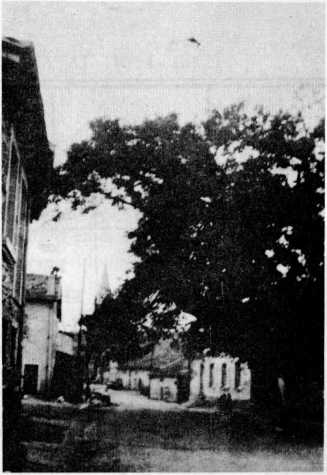
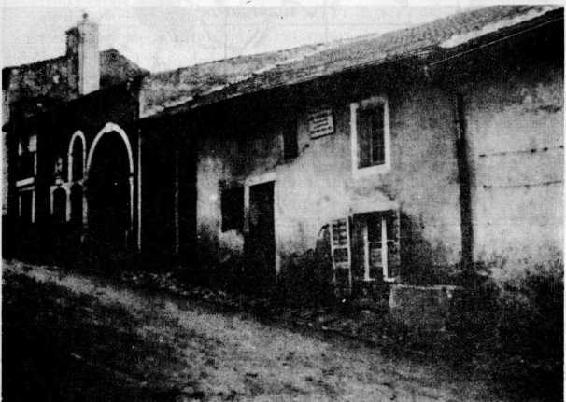
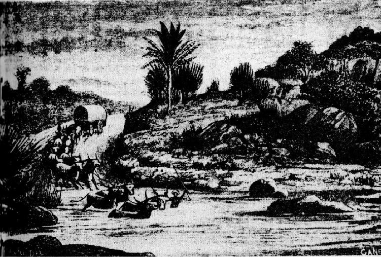
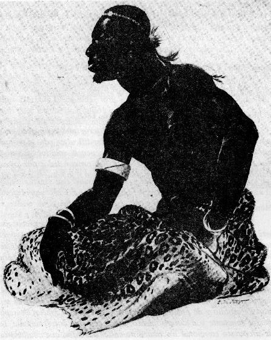
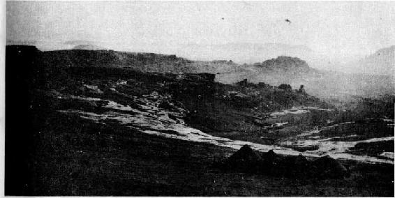
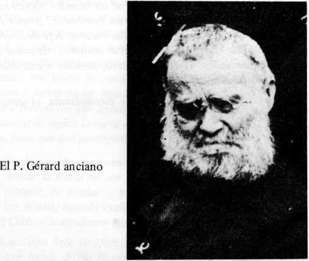
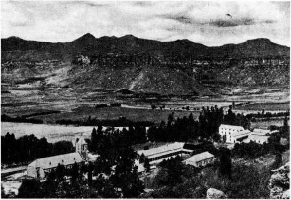
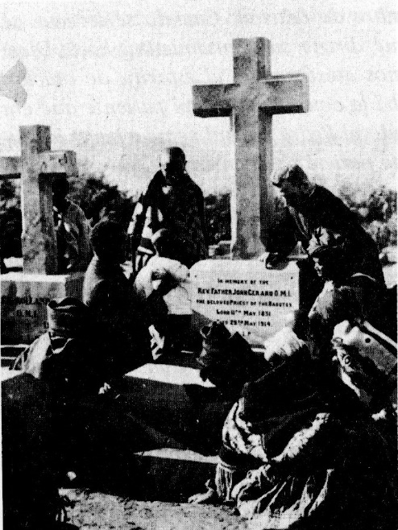

Colección “Escritos Oblatos’’ II,3
El Beato
J. GERARD O.M.I.
apóstol de los basutos (1831 - 1914)
Biografía por el
P. Y. Beaudoin, O.M.I.
Versión Española:
PP. Félix Erviti y Camilo González
Postulación General O.M.I.
Roma
El P. José Gérard hacia 1860
José Gerard nació en Bouxiéres - aux - Chénes, de la diócesis de Nancy, el 12 de marzo de 1831, primogénito de Juan Gérard y de Ursula Stofflet.
Bautizado al día siguiente de su nacimiento por el Párroco Aulmont, recibió los nombres de Carlos, Juan y José.
Poco se sabe de la familia Gérard. Los archivos conservan muy pocas actas oficiales, que nos permitan jalonar, con fechas precisas, los veinte primeros años de la vida de José. El mismo, en su correspondencia y sus escritos durante su vida, añade algunas anécdotas y recuerdos que apenas dejan adivinar los rasgos más notables de su infancia y de su adolescencia.
Los padres de José eran labradores y vivían en el pueblo. Los pocos animales de la granja y el cultivo de sus campos y de sus viñas les permitían vivir y criar a sus hijos más bien pobremente y a costa de mucho trabajo.
El padre (1802 - 1868) era un hombre de honor, de bien y de profunda fe. La madre (1806-1860), notable por su piedad y la delicadeza de su corazón, educó a sus hijos en el amor a Dios y a María. Los acompañaba con frecuencia en peregrinación a Nuestra Señora del Buen Socorro en Nancy.
En las cartas a su familia, José sólo habla de su padre una vez para decir que con él realizó, a los 7 u 8 años, una visita al convento de la Visitación de Nancy. El recuerdo de su madre le viene espontáneamente a la memoria en un sermón sobre los deberes de los padres, predicado hacia 1899: “Recuerdo, anota, que en mi infancia guardaba los caballos y los bueyes. Estaba solo todo el día. Temía a los demás jóvenes pervertidos. Te doy gracias ¡oh Corazón Santísimo de Jesús! En mi infancia, mi muy amada madre se ocupaba mucho de mí. Me confiaba a la guarda de una religiosa que se llamaba Odilia. ¡Cómo dar bastantes gracias!”.
José frecuentaba la escuela municipal, regentada por las Religiosas de la Doctrina Cristiana. A los 1 1 ¿ños hizo la primera comunión. Es el recuerdo de su infancia que quedó más profundamente grabado en él.
Con frecuencia escribe que el 2 de febrero de 1842 fue “un día de Paraíso”. El 1 de febrero de 1913, recuerda todavía unos detalles de esc acontecimiento: “Mañana celebro el aniversario de mi primera comunión, escribe. Es el aniversario del día más hermoso de la vida... Nuestros padres eran pobres... La comida era muy frugal, consistía en algunos conejos. ¿Hubo azúcar, vino, café? No lo recuerdo, pero creo que no. Todavía hoy, a mis 82 años, recuerdo ese hermoso día. Desearía uno que ese día no tuviera un día siguiente, que ese hermoso día fuese único o eterno; tan hermoso es, tan saciada se siente el alma. Recuerdo todo ahora: la procesión, los cánticos, la renovación de los votos del bautismo, el pan bendito...”.
Había sido preparado para esa fiesta por el Sr. Párroco Cayens, por Sor Odilia que lo había cuidado en su infancia cuando su madre tenía que ir a los campos o al mercado, y sobre todo por el Sr. Richard, un piadoso vecino que le leía y comentaba diariamente algunas páginas del libro cuarto de la “Imitación de Cristo”.
La familia se honraba con la amistad de los párrocos y vicarios, en particular de los abates Harbier y Cayens. Naturalmente José fue monaguillo. Cuando hizo la primera comunión, mereció ser recibido como miembro de la Cofradía del Santísimo y de la de San Nicolás, frecuentó siempre asiduamente su Iglesia parroquial. Los lugares, las fiestas religiosas, los ejercicios de piedad, todo eso penetró profundamente en su memoria y en su corazón.
En diciembre de 1912 recibe una tarjeta postal de la iglesia de Bouxiéres. Se lo agradece a su hermana Elisa: “Tu amable carta y tu postal, escribe, me han causado gran alegría, me han hecho recordar al querido pueblo de Bouxiéres, la iglesia con su campanario, donde fui bautizado, donde recibí la primera comunión. El hermoso vía-crucis que había costado 1400 francos, santa Magdalena, su hermosa pintura. Veo todavía el orgullo del fariseo, etc. Y el altar de Nuestra Señora de los Dolores, y la estatua de San Nicolás y los hermosos carillones que anunciaban las hermosas fiestas de la Iglesia. Y la más hermosa: la del Corpus. He recordado a la buena gente de Bouxiéres, a nuestros padres, nuestros tíos y otros parientes robustos que iban al bosque a buscar árboles para las estaciones de la procesión. Y luego he recordado a los buenos sacerdotes que nos guiaban en el combate de la vida, como el párroco, el abate Cayens, el vicario, el abate Gendoles, Barbier, etc. No he olvidado a la buena Hermana Odilia que era para mí una segunda madre. Qué abnegación para enseñarnos, con el señor párroco, el catecismo de la primera comunión. ¿Qué ha sido del santo varón señor Richard que era nuestro vecino y que se encargó de prepararme durante ocho días a mi primera comunión?”.
Conforme a lo registros parroquiales, José recibió el sacramento de la Confirmación el 24 de marzo de 1844, en la iglesia de Eulmont, de manos de Mons. Menjaud, coadjutor de Mons. Forbin-Janson, obispo de Nancy.
El párroco Cayens descubrió sin duda en su piadoso feligrés buenas disposiciones para el sacerdocio. Después de haberle dado algún tiempo clases de latín, lo mandó al seminario menor de Pont-á-Mousson donde José ingresó en quinto curso, el 22 de octubre de 1844. Allí estuvo cinco años.
Las notas de los profesores, que se conservan todavía en los registros de la institución, nos permiten seguirlo en sus estudios y su conducta. Cuatro expresiones se repiten como un estribillo todos los años: buena salud, conducta normal, trabajo satisfactorio o muy satisfactorio, exámenes bastante buenos. El seminarista aparece bastante flojo los primeros años, pero progresa notablemente después. En 1844-1845, por ejemplo, es el 36° de 41 alumnos, y en su último curso, 1848-1849, es el 12° entre 45 seminaristas.
Pocos detalles más se conservan de los años pasados en Pont-á- Mousson. José escribirá, sin embargo, al final de su vida, que a los 15 años llevaba gafas, o también: “Querido seminario menor... asilo querido de mi juventud, donde tuve a unos santos como directores, donde conocí a unos camaradas de estudio modelos de virtud, pequeños san Luis Gonzaga”.
Se ignora igualmente casi todo lo referente a las vacaciones que pasaba en su familia; se sabe sólo que preparó a su hermana Bárbara para la primera comunión. Frecuentó ciertamente con asiduidad, como en el pasado, su querida iglesia parroquial. En una carta de 1882, evocando unos recuerdos de ese período de su vida, escribió: “Me he enterado con alegría de que la iglesia de Bouxiéres ha sido reparada y embellecida gracias a vuestro digno pastor... ¡Cuánto deberíamos hacer por la belleza de la casa de Dios, de la iglesia donde El reside noche y día real y sustancialmente! Además, en esa querida iglesia de Bouxiéres, hemos recibido tantas gracias, nosotros y nuestros queridos padres; es la iglesia de nuestro bautismo, de nuestra primera comunión. También allí, en las visitas al Santísimo o en el ejercicio del Vía-Crucis hemos recibido la gracia de la vocación sacerdotal o religiosa...” (carta a su cuñado J. Thouvenin, 5 de julio de 1882).
En octubre de 1849, a los 18 años. José ingresaba en el seminario mayor de Nancy donde, según la costumbre, recibió casi inmediatamente la sotana. Sólo cursó allí dos años. Nada se sabe del resultado de sus estudios, ni de su conducta, ti abate L. Guyon, testigo en el proceso de la causa de beatificación, que había leído muchas cartas hoy desaparecidas, afirma que el corazón del seminarista estaba ya en otro sitio: “...Su alma era devorada por una gran sed de entrega, ti 'ministerio pastoral en nuestras parroquias cristianas no podía satisfacer los ardores de su celo... Había oído, en el secreto de su corazón, la irresistible llamada de Arriba para la vocación del apostolado entre los infieles. Sin darse cuenta, tal vez, su venerable párroco, el Sr. Cayens, que había sido misionero en Argelia después de la ocupación francesa (en 1830), había encaminado a su alumno por ese rumbo, con el relato de sus conquistas apostólicas”.
Además, tanto en el seminario menor como en el mayor, José encontró a varios misioneros Oblatos de María Inmaculada que reavivaron periódicamente su ideal misionero. En 1847 el P. Léonard, misionero de los indios en el este del Canadá, recorría los seminarios de Francia. En una conferencia a los alumnos de Pont-á-Mousson, en la primavera de 1847, provocó el entusiasmo de José, entonces alumno de tercero, y de sus compañeros Mouchette, Mangin y Simonin.
Esa gira de reclutamiento del P. Léonard tuvo tal éxito que la Administración general de los Oblatos hubo de abrir un segundo noviciado precisamente en Nancy. El P. Toussaint Dassy, superior de la casa, buen predicador y ardoroso reclutador, predicó el retiro anual de los alumnos del seminario menor a finales de noviembre de 1848; no dejó de mantener despiertas las aspiraciones misioneras de José y de sus compañeros. A esos mismos jóvenes los volvió a encontrar en el retiro que predicó en el seminario mayor la tercera semana de mayo de 1850. Por último, en febrero de 1851, el P. Nicolás Laverlochére, misionero de la Bahía de Hudson en gira de predicación en Francia para la Obra de la Propagación de la fe, se detuvo a su vez en el seminario mayor de Nancy. Mons. de Mazenod escribió entonces de él: “El Padre Laverlochére les llegará al Canadá casi tan pronto como mi carta... El bien que ese excelente Padre ha hecho a su paso por Francia es incalculable, el espíritu de Dios estaba con él...”.
Los seminaristas Gérard y Mouchette ya no resisten a las llamadas apremiantes del Señor. Logran el permiso para ingresar en el noviciado oblato de Ntra. Sra. de l’Osier cerca de Grenoble, y dejan el seminario mayor probablemente con ocasión de las vacaciones de Pascua de 1851, antes de que José terminara el segundo año de teología.
Esta decisión del seminarista, afirmó más tarde Mons. Cenez, según testimonios seguros, “fue una dura prueba para sus padres. Con su espíritu de fe, habían apreciado el honor que Dios les hacía llamando al sacerdocio al mayor de sus cinco hijos. Pero la perspectiva de una separación sin duda definitiva, y de los mil peligros que su hijo iba a correr en países lejanos (...) asustaba su ternura, bajo el imperio de ese temor, no ahorraron reconvención alguna para apartar a José de su heroica determinación. Fue en vano. Ayudado por la gracia de Dios, el fervoroso seminarista logró, a fuerza de insistir, la autorización paterna. Lejos de ser insensible al dolor de sus padres, recogió los méritos del heroísmo en el sacrificio de lo que tenía de más querido en el mundo. Fue un sacrificio definitivo, porque no volvería a ver ni su país natal ni a su familia. Sin embargo sus cartas seguirán siempre impregnadas del más vivo afecto y de la más tierna solicitud por los suyos, cuyo recuerdo, hasta sus últimos años, lo conmueve todavía vivamente” (P. H. Lebreton).
Fue a su salida del seminario, al parecer, cuando José y su familia hicieron una peregrinación al santuario de Nuestra Señora de Sión, dirigido por los Oblatos; a los pies de la Virgen, la Sra. Gérard logró dar su consentimiento.
Los dos postulantes fueron recibidos a la puerta del convento de N. S. de l’Osier por el Hermano Balain, futuro obispo de Niza y, más tarde, arzobispo de Audi. Este escribió sobre ellos: “Nuestros queridos postulantes nos parecieron desde el primer día llenos del espíritu de la familia. Hicieron su retiro de postulantado con fervor; tomaron el hábito con alegría, el 9 de mayo de 1851, y se dieron de todo corazón a la práctica del reglamento y de todos los deberes de su vocación. El noviciado no hizo más que afianzar, desarrollar y perfeccionar disposiciones tan edificantes” (Nota necrológica del P. Mouchette).
Era maestro de novicios el P. Santiago Felipe Santoni. No ejerció gran influencia sobre el 11. Gérard, porque el 23 de abril anterior había sido nombrado provincial de los Oblatos del Canadá y preparaba su marcha, fijada para el 11 de julio. Dos días después de su marcha otro acontecimiento debió de distraer de nuevo a los novicios. En efecto, el 13 de julio el P. Juan Francisco Allard, recientemente nombrado Vicario Apostólico de Natal, era ordenado obispo de Samaría por Mons. de Mazenod en Marsella.
Fue el austero P. Gustavo Richard quien, desde julio hasta el final del noviciado de José, lo guio en el conocimiento y la práctica de la vida religiosa oblata. Las notas tomadas entonces por el novicio, que figuran entre los primeros escritos que conservamos de él, así como los informes mensuales enviados por el maestro de novicios al Superior General, no dejan duda alguna sobre la buena voluntad de José. Se lanzó a fondo al ejercicio de las virtudes y a la práctica de la vida religiosa. Ya el 11 de agosto de 1851, el P. Richard podía escribir: “Creo que la Santísima Virgen quiere hacer de él un pequeño santo”. El 15 de febrero de 1852, el juicio no había cambiado: “Joven muy santo, tan humilde que se considera sin dificultad como el último, no sólo de los novicios, sino de toda la casa. ¡Qué alma más bella!”.
El Consejo general no tuvo dificultad para admitirlo a la profesión, que hizo el 10 de mayo de 1852. Se conocen sus disposiciones por el acto de consagración que hizo entonces al “Sagrado Corazón por María Inmaculada”. Lo termina con estas palabras: “ ¡Oh Dios mío, sólo os pido una cosa, dadme, os conjuro, el espíritu de sacrificio que es el espíritu del verdadero Oblato de María Inmaculada. Sí, que yo sea una víctima perpetua, inmolada a vuestra gloria para la salvación de las almas. Dadme el amor a mi buena Madre... Que sea humilde, mortificado, caritativo”.
Con ocasión del 50° aniversario de sus votos, el P. Gérard escribirá: “Fue uno de los más hermosos días de mi vida: el perfume de mis compromisos sagrados no ha desaparecido todavía; bendito sea Dios y gracias sean dadas a nuestra buena Madre Inmaculada”.
Pocos días después de su oblación, el Hermano Gérard salió para el seminario mayor de Marsella. Un mismo techo, ya demasiado pequeño, albergaba todavía a los seminaristas diocesanos y a los escolásticos oblatos, bajo la dirección del P. Francisco de Paula Enrique Tempier, superior, y de diversos profesores, tales como los Padres José Fabre, Aquiles Rey y Juan José Marchal, moderador de los escolásticos.
Ese año de escolasticado pasó demasiado rápido. El P. Gérard hablará de él pocas veces después. Estudió privadamente los tratados de teología más importantes que no había visto todavía, e hizo algunos retiros para prepararse a las órdenes que recibió de manos de Mons. de Mazenod: la tonsura y las órdenes menores, en la catedral de Marsella, el 27 de junio de 1852; el subdiaconado, en la capilla episcopal, el 12 de marzo de 1853, y el diaconado, en la capilla de las Damas de Nazaret, el 3 de abril. Esta última ordenación quedó profundamente grabada en la memoria del diácono: “¿Podría alguna vez, por larga que sea mi vida, escribirá más tarde, olvidar ese 3 de abril, en el que, de manos de Mons. de Mazenod, recibí el diaconado?”. En efecto, durante la ceremonia, viendo postrados ante el altar a tres de sus hijos que iban a salir para África y Asia, el Obispo no pudo dominar su emoción, “torrentes de lágrimas le interrumpieron; toda la asistencia lloraba, escribe el P. Mouchette, los ordenandos mojaban con sus lágrimas los ornamentos sobre los cuales apoyaban su cabeza”
Convencido de la solidez de, la vocación misionera de esa alma fuertemente templada, Mons. de Mazenod, el 7 de marzo anterior, había dado al Hermano José obediencia para el Natal en África Austral.
En 5o, 1844-1845: salud buena, conducta normal, trabajo muy satisfactorio, examen bastante satisfactorio. De 41 alumnos, el 36° en el primer semestre, el 340 en el segundo.
En 4o, 1845-1846: salud buena, conducta normal, trabajo muy satisfactorio, ejercicios flojos, lecciones buenas, matemáticas: bastante bien. Clasificación: de 51 alumnos, el 41° y 37°.
En 3o, 1846-1847: salud buena, conducta buena, trabajo satisfactorio (pero poco éxito), ejercicios flojos, lecciones buenas, examen bastante bueno, matemáticas, bastante bien. Clasificación: de 49 alumnos, el 28° y 25°.
En 2o, 1847-1848: salud buena, conducta buena, trabajo satisfactorio, ejercicios bastante buenos y hasta buenos, lecciones buenas, examen bueno, matemáticas bastante bien. Clasificación: de 49 alumnos, el 20° y 19°.
En retórica, 1848-1849: salud buena, conducta normal y buena, trabajo muy satisfactorio, ejercicios pasables y bastante buenos, lecciones buenas y hasta muy buenas, examen bastante bueno, matemáticas bien en general. Clasificación: de 45 alumnos, el 12° y 19°.
Fue bastante flojo en sus primeros cursos pero, como la clasificación atestigua, progresó notablemente a lo largo de sus estudios.
11 de agosto de 1851. H. Gérard: con menos talentos, más piadoso en la predicación, en la que tendrá éxito. Es el hermano que Nuestro Señor parece destinamos para reemplazar a nuestro querido hermano Logegaray. Ángel de modestia y de candor. Creo que la Santísima Virgen quiere hacer de él un santito.
Septiembre de 1851. H. Gérard: Piedad extraordinaria. Carácter bueno, dulce, pero reseñado por timidez. Talentos ordinarios.
16 de octubre de 1851. H. Gérard: muy bien. Decía yo a su Excelencia que le creía destinado a reemplazar al H. Logegaray; me confirmo cada día en ese juicio; la gracia trabaja visiblemente en ese querido Hermano: mortificación, espíritu de oración, presencia de Dios casi continua, caridad tierna, afable y solícita para con todos sus hermanos. Lo más notable en él, es que a su llegada se le reprochaba de ser un tanto reseñado, de faltar de apertura, y ahora sonríe a todos sus hermanos. Una profunda humildad acompaña todas las otras virtudes que posee.
16 de noviembre de 1851. H. Gérard: sigue edificándonos con su modestia, su sencillez, su dulzura y su caridad admirables. Su piedad crece de día en día. Es el modelo del noviciado. Siempre alegre y dispuesto a servir a sus hermanos. Hace grandes progresos en inglés. Es el hermano Logegaray de la casa.
17 de diciembre de 1851. H. Gérard: sigue edificando a sus hermanos. Está ávido de mortificación y de humillaciones. Caridad admirable, dulzura inalterable, piedad extraordinaria y llena de candor infantil para con la Santísima Virgen. Pasa en la capilla todos sus cuartos de hora libres. Es nuestro Logegaray. Predica bien y sobre todo es notable por su unción.
15 de enero de 1852. H. Gérard: muy bien. Es sorprendente cómo la gracia guía a este buen hijo. Estoy convencido de que no pierde ni un cuarto de hora al día la presencia de Dios. Modestia y piedad extraordinaria. Mortificado, caritativo, bueno, siempre alegre. Basta verlo en la iglesia para sentirse llevado a Dios.
15 de febrero de 1852. H. Gérard: joven bien santo, tan humilde que se considera sin dificultad como el último no sólo de los novicios, sino de toda la casa. ¡Qué hermosa alma!
15 de marzo de 1852. H. Gérard: su piedad crece cada día gracias a su tierna devoción a San José. Sigue muy bien el impulso con que los novicios se han dado a la mortificación a raíz del último retiro mensual. Estos retiros les hacen mucho bien a todos.
El 6 de mayo de 1852, el Consejo de la Congregación compuesto por los RR. Padres Tempier, Vincens y Bellon, asistentes, y del R.P. Aubert llamado para reemplazar al R.P. Courtés, ausente, se ha reunido bajo la presidencia del Rdmo. Superior General para deliberar sobre la admisión a los votos de algunos novicios (...)
— El hermano Mouchette (...)
~ El hermano Gérard Juan José, nacido en Bouxiéres-aux-Chénes, Meurthe, el 12 de marzo de 1831, recibido en el noviciado el 9 de mayo de 1851. Las notas del R.P. maestro de novicios sobre él le dan como un novicio perfecto por la piedad, el espíritu interior y las sólidas virtudes, lleno de caridad para con sus hermanos, de respeto y de sumisión para con los superiores y animado de una gran inclinación a las misiones extranjeras. Goza por otra parte de buena salud, y posee talentos más que suficientes. En consecuencia, ha sido admitido por unanimidad.
Julio de 1852. El H. Gérard es un ángel de pureza, de caridad y de obediencia. Sin duda será un apóstol abnegado y capaz de los mayores sacrificios. Tiene un porte algo rígido y una piedad demasiado visible que puede o edificar mucho o hacer daño.
Los padres V. Lacombe y A.M. Rouffiac saldrán el 28 de abril. “Los he ordenado el domingo pasado con otros dos: uno de ellos (J. Barret) saldrá por su parte con un verdadero santo diácono (J. Gérard) pera la tierra de Natal... “

Bouxieres-aux-Chenes
encina delante de la escuela

Casa donde nació José Gérard.

África Austral y Vicariato Apostólico de Natal
con las primeras misiones de Durbán,
Pietermatzburgo, San Miguel y Ntra. Sra. de los siete Dolores.
Lesoto (en negro), el Estado Libre de Orange y Transvaal
formaban parte del Vicariato.
El hermano Gérard y sus dos compañeros, el Padre Justino Barret y el hermano Pedro Bernard, dejaron Tolón el 10 de mayo de 1853. El barco de guerra “La Belle Poule”. iba a la isla de Borbón en el Océano Indico pasando por Gibraltar y el Cabo de Buena Esperanza. De la isla de Borbón, los misioneros se embarcaron en el “Juana de Arco” y bogaron hacia la isla Mauricio. Tuvieron que prolongar dos meses su escala en esta isla hasta encontrar un barco que los llevara al Cabo y desde allí a Port Natal (Durbán), donde desembarcaron el 25 de enero de 1854. Mons. Allard. que estaba sin noticias de ellos desde que salieron, los acogió con inmensa alegría.
Sin embargo, los jóvenes misioneros no habían perdido el tiempo en la isla Mauricio. El P. Santiago Desiderio Laval, de la Congregación de los Padres del Espíritu Santo, los inició en la vida apostólica y en un método misionero muy eficaz que el P. Gérard no olvidó en su ministerio con los zulúes de Natal y sobre todo con los basutos del Lesoto. Mons. Collier, obispo de la Isla Mauricio, y el P. Laval agradecieron los servicios prestados por los “dos buenos religiosos”, el P. Barret que “ha confesado” y el H. Gérard que “ha bautizado y enterrado”.
El Vicariato Apostólico de Natal, al que la obediencia enviaba al H. Gérard y sus compañeros, era de reciente creación. El 5 de octubre de 1850 la Congregación de la Propaganda había desmembrado ese territorio de los dos primeros Vicariatos Apostólicos del África Austral, el del Cabo y el de Port-Elisabeth, entonces bajo la dirección de Mons. Griffith y de Mons. Devereux, respectivamente.
El Vicariato de Natal, situado a lo largo del Océano Indico, tenía como límites: al sur Kai, unos 150 Km. al sur de Durbán, y el Río Oran- ge; al norte, Quilimane y la colonia portuguesa de Mozambique. Los límites del Oeste, en el interior de las tierras, quedaban por precisar, pero se extendían al Estado Libre de Orange, al Lesoto y al Transvaal.
Mons. Allard y sus cuatro socios habían llegado a Port Natal el 15 de marzo de 1852. En 1854, los recién llegados se encontraron ya con una comunidad diezmada. El P. Lorenzo Dunne y el II. José Compin se habían marchado por las buenas, dejando a su Obispo solo con los Pañíes Juan Sabon y Mauricio Logegaray, encargados respectivamente de los católicos de Durbán y de Pietermaritzburgo, capital de la colonia donde Mons. Allard había fijado su residencia.
El H. Gérard conoció a su Obispo y le siguió a Pietermaritzburgo. Casi inmediatamente entró en ejercicios para recibir la ordenación sacerdotal el 19 de febrero en la iglesia de Santa María. Durante varios meses, a la vez que hacía ministerio con los católicos blancos de la ciudad, estudió el inglés y empezó a aprender la lengua de los zulúes. Sus colegas admiraban su facilidad para las lenguas. Mons. Allard, que habló siempre difícilmente el inglés y nunca el zulú, no tardó en tomarlo por compañero en sus viajes y utilizarlo como intérprete o para predicar en su nombre.
A pesar de su extremada prudencia, Mons. Allard, empujado por Mons. de Mazenod, que desde Marsella aconsejaba y dirigía a sus hijos en los cuatro continentes, decidió destinar a los Padres Barret y Gérard a la evangelización de los zulúes. Fueron enviados, en la segunda mitad de 1854, en medio de una población exclusivamente compuesta de negros; comían como ellos y dormían en el suelo. A principios de 1855 fueron a un centenar de kilómetros al sur donde encontraron al jefe Dumisa que les permitió establecerse en medio de su tribu. Fue el 27 de febrero de 1855, después de un día de retiro, cuando los dos Padres salieron oficialmente para su misión, acompañados de algunos portadores negros. Fueron necesarios cuatro días de marcha para llegar al lugar de la misión. Fiel a su compromiso, Dumisa recibió honorablemente a sus huéspedes, les dio una choza y les mandó provisiones. Objeto de la curiosidad de la población, los misioneros contestaron a los que les preguntaban, que eran los enviados de Dios y que no iban a buscar ni oro, ni plata, ni rebaños; era su misión “la de enseñar a los hombres las cosas de Dios para hacerlos buenos”.
La generosidad de los zulúes de la tribu de Dumisa no igualó su curiosidad. Nadie quiso ayudar a los Padres para construir su choza y una capilla, a no ser mediante un salario que fue estimado poco razonable. Los misioneros decidieron entonces ir a instalarse a una tribu vecina, tres leguas más lejos, fuera de las tierras del jefe Dumisa. Ayudados por el H. Bérnard, construyeron con estacas y ramas algunas chozas y una gran capilla. Antes de poder predicar, el P. Gérard empezó, aquí como en tollas partes, por ser “albañil, arquitecto, carpintero y hasta peón”. Además de esos trabajos, tuvo que hacer varias veces el viaje de algunos días, ida y vuelta, a Pietermaritzburgo para participar en el retiro de mes o para comprar cosas útiles a la misión. Fue en el curso de uno de esos viajes cuando cayó bastante enfermo en 1855; en otro estuvo a punto de ahogarse atravesando el río Umkomazi en mayo de 1856.
La capilla fue inaugurada solemnemente el 2 de septiembre de 1855, en presencia de numerosa asistencia, al canto del “Veni Creator” y del “Sub Tuum”. “Los cafres han nacido músicos, escribe el P. Gérard. Son apasionados del canto... Hemos aprovechado ese talento para su instrucción religiosa; les hemos enseñado unos cánticos... El canto de las letanías es también muy de su gusto. Esperemos que la dulce Virgen venga en ayuda de esos pobres... que tantas veces le gritan “ora pro nobis”.
Además del don para el canto, el Padre reconoció otras cualidades en los zulúes: “Si se hacen cristianos, añade, serán tan buenos como corrompidos son ahora, porque tienen mucho sentido común, nada emprenden sin larga deliberación, y cuando la luz haya brillado ante sus ojos, la seguirán con generosidad; pero es un milagro que sólo Dios puede hacer con su gracia”.
En efecto, los misioneros perciben pronto en los zulúes la ausencia de una disposición fundamental para convertirse: el deseo de cambio. Son altivos, orgullosos, contentos con su modo de vivir, con numerosas prácticas supersticiosas y la poligamia. “Que los blancos, dicen, nos dejen vivir solos a nuestro modo”. Mons. Allard constata con razón que destruir la poligamia es trastocar toda su economía doméstica: “es querer quitarles lo que, a juicio de ellos, es la fuente de su riqueza y de su grandeza”.
A pesar de una buena asistencia a la iglesia los domingos, y de las numerosas visitas de los misioneros a las chozas y poblados o kraals cercanos, nadie manifiesta el deseo de hacerse cristiano. Además, un acontecimiento inesperado puso fin a esa primera experiencia misionera entre los zulúes. Una riña entre algunos hombres de dos tribus vecinas fue aprovechada por Dumisa para desposeer a sus rivales de las tierras que decía le pertenecían. Toda la tribu se desplazó a dos días de marcha hacia el sur. El 23 de julio, Mons. Allard decide el regreso de los misioneros. Los Padres Barret y Gérard vuelven pues a Pietermaritzburgo el 6 de agosto de 1856 y ejercen el ministerio entre los blancos; el P. Barret pasará allí el resto de su vida; el P. Gérard quedará menos de dos «nos. No olvidará esa primera experiencia misionera. Con ocasión de la muerte del P. Barret, escribió a su prima, la Hermana Ana-Magdalena, el 4 de mayo de 1911: “Hemos sido compañeros de armas en las luchas contra el demonio... en las misiones de los zulúes que eran muy pobres, penosas, estériles”.
Inmediatamente después de su regreso a Pietermaritzburgo el P. Gérard solo soñaba con volver a marcharse. Ya el 29 de septiembre de 1856 escribió al Superior General: “Espero con impaciencia ver llegar el momento en que podamos empezar de nuevo la misión con más ardor... Los momentos en los que hemos tenido que sufrir han sido los más hermosos”. Pero a Mons. Allard le hacía falta en la capital; en efecto, el P. Logegaray, encargado hasta entonces del ministerio en esa ciudad, había dejado la Congregación a primeros de agosto de 1856.
Mons. de Mazenod mandó en seguida para África al P. Víctor Bompart y al H. Femando Manuel que llegaron a Natal el 11 de diciembre de 1856. Mientras tanto se había enterado del cierre de la misión de San Miguel. No disimuló su decepción, el 30 de marzo de 1857, y recomendó calurosamente al Vicario Apostólico que volviera a empezar: “Es para entristecerse... ver el fracaso de vuestra misión entre los cafres. Pocos ejemplos hay de semejante esterilidad... Me cuesta consolarme porque no habéis sido enviados para esos pocos herejes que pueblan vuestros lugares habitados. Habéis sido enviados a los cafres, es su conversión lo que la Iglesia espera del santo ministerio que os ha confiado. Hacia los cafres deben dirigirse todos vuestros pensamientos, en favor de ellos debéis hacer todas vuestras combinaciones”.
Siempre obediente, Mons. Allard decidió de nuevo ir a ver al jefe Dumisa que en 1856 no había querido rechazar a los misioneros, sino sólo a la tribu que evangelizaban. Además, el Gobierno de la colonia estaba dispuesto a ceder en aquel lugar un amplio terreno a los misioneros católicos, que de ese modo quedarían libres de los humores del jefe. El 10 de septiembre de 1857 Mons. Allard escribe en sus “Memorias” que vuelve de un viaje de 20 días, acompañado por el P. Gérard. Ha tomado posesión de un terreno ofrecido por el Gobierno, en la reserva del río Intonjana, a poca distancia de la primera misión.
El 15 de febrero de 1858 el P. Gérard sale para la nueva misión de San Miguel, acompañado esta vez por el P. Bompart y por un zulú encargado de los equipajes. En menos de un mes levantaron tres grandes chozas para recibir a Mons. Allard que, reprendido por Mons. de Mazenod, decidió ser él también misionero en la brecha. A mediados de marzo dejó Pietermaritzburgo con el H. Bernard y comprobó con alegría que su alojamiento estaba ya preparado.
Como la misión tenía ya su propio terreno, los misioneros, con objeto de hacer comprender mejor a los zulúes la grandeza de Dios, decidieron construir una capilla sólida y amplia, con armazón de madera. El P. Gérard, encargado de comprar unos bueyes para acarrear la madera que abunda a dos leguas de la misión, solo los encuentra lejos de allí. Además, es mal recibido en varios sitios. A su regreso, el H. Bernard tiene dificultades para domar esos animales, lo que retrasa los trabajos que, con muy poca ayuda de los zulúes, se prolongan más de un año y obligan a los misioneros a hacerse “carreteros, albañiles, carpinteros, leñadores... pero, añade el P. Gérard en una carta a Mons. de Mazenod el 16 de agosto de 1859, lo hicimos siempre con mucha alegría, porque se trabajaba por Dios”.
La capilla mide 40 pies por 20 y sus muros se levantan a 12 pies de altura, cuenta Mons. Allard. Construida sobre una altura, se la puede ver desde dos leguas de distancia por su blancura resplandeciente. Está rodeada de un pórtico. La parte del pórtico adosada al santuario ha sido convertida en celdas donde residen el Vicario Apostólico y el P. Gérard que tienen así la dicha de poder visitar al Santísimo sin salir de su habitación.
Después de haber terminado la construcción de la capilla, en junio de 1859, los Padres Gérard y Bompart recorren durante unos diez días los kraals de las cercanías para invitar a los zulúes a la bendición de la capilla y a la inauguración oficial de la misión, fijadas para el 17 de julio. Sólo se presentan un centenar de zulúes. El sermón, preparado por Mons. Allard y por el P. Gérard, es predicado como de costumbre por éste. Desarrolla dos puntos: ¿por qué los misioneros católicos han venido a establecerse en medio de los negros, y quiénes son exactamente? Acabado el sermón, el P. Gérard pregunta a algunos asistentes, como en el catecismo. Se termina la ceremonia con las letanías de la Santísima Virgen.
En esta ocasión Mons. Allard queda impresionado por la tristeza de los jefes, toda la asistencia comparte su melancolía. Él se explica así esa actitud: “Lo que había turbado su espíritu era la idea de abrazar una religión que sólo les presenta bienes espirituales que no comprenden, a cambio de unos usos y costumbres contrarios al Evangelio a los que están fuertemente apegados”.
En adelante se celebra siempre un servicio el domingo, conforme a la costumbre introducida por los ministros protestantes y que varios zulúes practican con gusto. Ese servicio comprende unos cantos, un sermón en forma de catecismo y las letanías, sin celebración de la Misa ante los infieles. Durante la semana, los misioneros dedican algunos días a la visita de los kraals para incitar a los descuidados a acudir a la misión, y mantener el bien que las reuniones del domingo pueden hacer en aquellos que son fieles a los ejercicios.
Por mucho que se organicen clases de canto, que se multipliquen las visitas, que se invite a los niños y que se presten servicios, los zulúes no cambian de disposición, quieren quedarse paganos y no modificar para nada su estilo de vida, en particular en lo que el P. Gérard considera como las dos fortalezas del demonio: los adivinos y la poligamia.
A pesar de ese fracaso, el misionero parece feliz, sobre todo por un motivo que Mons. de Mazenod ha tenido que apreciar mucho: “Sus hijos, escribe el P. Gérard, han logrado levantar... un templo al Señor en esta tierra cubierta todavía por las tinieblas del paganismo. Tenemos pues ahora la inefable dicha de tener a nuestro divino Salvador en medio de nosotros día y noche”. “Es ahí, añade Mons. Allard, a donde cada miembro de la comunidad gusta venir a explayar su corazón y recuperar nuevas fuerzas junto a Jesucristo. Es un tesoro escondido a los cafres, pero que puede realizar prodigios entre ellos y conquistar su corazón”.
La presencia de los participantes al servicio dominical parece mantenerse y hasta llega a las 180 personas. Se logra igualmente hacerles aprender el “Padre nuestro”. A pesar de eso, la esperanza de lograr conversiones en San Miguel parece disminuir. Llegado allí en 1858, el P. Gérard había advertido que una misión protestante acababa de establecerse a unas tres leguas de la misión católica: “Qué inconveniente para los pobres cafres ver ese caos de religiones diferentes!, exclamaba, cuando son ya tan indiferentes y tan llenos de prejuicios. Por consiguiente, prosigue, esperanza humana, ni pizca, pero ¡esperanza en Dios todopoderoso, mucha!”. Recorriendo la región en 1859, ha visto además que muy cerca de la misión reside “un gran adivino de primera clase. Es el oráculo del país. Todos los días se ven acudir cafres para consultarlo”.
En 1860 la situación parece agravarse. ¿No habrá que pensar en alguna solución de recambio? El P. Gérard escribe a Mons. de Mazenod: “Estamos, en este momento, en medio de las más penosas circunstancias, todo parece perdido para siempre en esta localidad. Los cafres se endurecen cada día más... Tienen la costumbre de ridiculizarlo todo en sus reuniones de diversión: el “Pater”, el agua del bautismo, el discurso sobre la muerte... Desgraciadamente, todos están de acuerdo con sus jefes. Nadie es bastante valeroso para hacer rancho aparte y convertirse. Esa es nuestra situación en San Miguel. No estoy desanimado, estoy contento en la posición en la que me ha colocado, y si tuviera que volver a empezar, la pobre cafrería tendría todavía mi predilección”.
En el mes de febrero de 1860, Mons. Allard y el P. Gérard deciden ir a visitar la tribu a la que en vano se había evangelizado en la primera misión de San Miguel. Esos zulúes se habían retirado a dos días de marcha hacia el sur, a lo largo del río Umzinkulu, y vivían bajo el gobierno del jefe Maketiketi. Los que habían conocido al P. Gérard acogieron a los viajeros “no como unos extraños, sino con la misma cordialidad” que habían mostrado antaño; hasta se declararon dispuestos a permitir que los misioneros continuaran su ministerio en la tribu. El jefe dio su autorización.
Los dos viajeros volvieron a San Miguel el 19 de febrero. Dos cartas les esperaban: una de Marsella, fechada en noviembre de 1859, que anunciaba la salida para África del P. Le Bihan y del H. Terpent, otra de Durbán, del 2 de febrero de 1860, en la cual el P. Sabon anunciaba la llegada de los dos misioneros. Ese aumento de personal permitía al Vicario Apostólico fundar una segunda misión entre los zulúes. El P. Le Bihan, vendría a aprender la lengua con el P. Bompart en San Miguel, mientras el P. Gérard y algunos hermanos fundarían la nueva misión.
A comienzos de mayo, Mons. Allard reunió a todos los Padres y Hermanos para predicarles el retiro anual, el primero desde hacía dos años. El 8 de mayo convocó a su Consejo y propuso el establecimiento en tierras de Maketiketi. El 17 de julio se marcharon Mons. Allard, el P. Gérard y los Hermanos Bernard y Trepent. El viaje duró cinco largos días porque tuvieron muchas dificultades para hacer llegar la carreta que llevaba su equipaje.
A la vista del pueblo que iban a evangelizar, el P. Gérard propuso a Monseñor que pusiera el nuevo establecimiento bajo la protección de Ntra. Sra. de los Siete Dolores, Mons. Allard aceptó y, en el acto, todos rezaron el “Stabat Mater”. Los zulúes recibieron a los misioneros con bondad, menos el jefe de la tribu que, a pesar de la autorización otorgada, hizo “bien ostensible su descontento”. Los misioneros se declararon, sin embargo, decididos a quedarse. Después de algunas explicaciones, la tempestad que se había formado desapareció.
La habitación y la capilla, hechas con un armazón de estacas de madera y de ramas, fueron construidas en unos meses de duro trabajo. Se inauguró la misión el 14 de octubre de 1860, en presencia de más de 1.400 personas y según el rito seguido en San Miguel.
“Desde que hemos abierto la misión, los cafres siguen viniendo, escribe Mons. Allard, el 11 de noviembre de 1860. ¿Cuál será el resultado? Es difícil preverlo... Sin embargo, se puede notar ya que la acción de la gracia los trabaja. En nuestras reuniones reina un silencio perfecto... Nosotros rezamos y nos humillamos. Ponemos en Dios todas nuestras esperanzas y esperamos mucho de la protección de la Bienaventurada Virgen María”.
El P. Gérard reza y actúa. Visita regularmente unos veinte kraals alrededor de la misión, sobre todo cuando se presenta una epidemia de disentería en diciembre de 1860 y enero de 1861, pero se le rechaza “bastante insolentemente” en cuanto habla de religión. Lucha entonces contra su carácter tímido, multiplica sus visitas e intenta con valor llevar esos zulúes a la conversión para evitarles un “horroroso futuro... aún a costa de la efusión de mi sangre”, escribe a Mons. de Mazenod el 12 de abril de 1861. Bautiza a algunos niños moribundos, pero los zulúes le conceden una sola cosa: la presencia en la capilla el domingo, sin querer cambiar nada en su vida.
Puesto al tanto de la obstinación y de la negativa de los zulúes, Mons. de Mazenod había escrito en su última carta al P. Gérard, el 4 de setiembre de 1860: “Llegará el momento en que la gracia misericordiosa de Dios hará una especie de explosión, y vuestra Iglesia cafre se formará. Tal vez para eso habría que penetrar un poco más adentro entre esas tribus... No pierda de vista, y recuérdeselo al buen P. Bompart, que han sido enviados a la conquista de las almas, es preciso pues no rehusar dar el asalto y hay que perseguir al enemigo hasta en sus últimos reductos. Sólo a la perseverancia se promete la victoria”.
En presencia de esa negativa a la gracia, de una tribu que se evangeliza en vano por segunda vez, y animado por los consejos del Superior General, Mons. Allard decide, en abril de 1861, viajar más allá de las fronteras de Natal, hacía el norte en dirección a las colonias portuguesas, y al oeste hacia las posesiones boers del Estado Libre de Orange. El P. Le Bihan, llegado poco antes a Ntra. Sra. de los Siete Dolores, para aprender la lengua junto al P. Gérard, se quedaría allí con el H. Terpent, en espera de abandonar la misión cuando se hallara una tribu más dócil.
Un grave accidente del H. Terpent precipita los acontecimientos. Yendo a colocar unos cepos, el 2 de julio, la escopeta-se le dispara y le rompe una pierna. El P. Gérard debe procurarse un carruaje, construir una cama colgante para colocar al herido que sufre mucho y llevarlo, durante ocho días de viaje, al hospital de Pietermaritzburgo donde el Hermano pasó varios meses. Durante el mes de julio se trasladan a la misión de San Miguel los objetos y los muebles de la misión de Ntra. Sra. de los Siete Dolores que destruyen antes de dejarla definitivamente el 27 de julio.
La primera expedición se realizó del 5 al 20 de agosto de 1861. Se dirigieron hacia el oeste, a lo largo del río Umzinkulu, hasta la cordillera del Drakensberg. Por primera vez, después de diez años en Africa, en previsión de los futuros viajes, Mons. Allard había comprado unos caballos. Para explicar ese gasto había dado, el 20 de abril, la siguiente razón al Fundador: “El Padre Gérard se dedica con mucho celo a instruir y a visitar a los cafres de la estación. Me ha dado a conocer el cansancio que siente en los viajes un poco largos, por eso nos hemos procurado tres caballos”.
En todas partes la acogida fue cortés pero poco calurosa. En varias tribus los viajeros no lograron ni siquiera la comida. Sólo un jefe habría aceptado el establecimiento de una misión, pero se trataba de una tribu demasiado pequeña para pensar en fijarse allí.
La segunda expedición duró 4 meses, del 12 de noviembre de 1861 al mes de marzo de 1862. Desde hacía tiempo Mons. Allard estaba en correspondencia con el Padre Hoenderwangers, Premostratense, a quien Mons. Devereux, Vicario Apostólico de Port-Elisabeth, había dejado con los católicos de Bloemfontein en el Estado Libre de Orange. Esa región seguramente formaba ya parte del Vicariato Apostólico de Natal. Convenía conocerla y encontrar un sucesor para el misionero a quien sus superiores habían reclamado. Los dos viajeros se dirigieron pues lentamente hacia el oeste hasta Bloemfontein deteniéndose allí donde se enteraban que había familias católicas. Pasaban allí unos días dando los ejercicios de una misión. Desde allí penetraron en las tierras de los basutos, por ambas orillas del río Caledón, donde residían algunos católicos blancos. Así fueron recibidos por Molapo, hijo de Moshoeshoe, gran Jefe o Rey de los basutos que los boers llamaban el León de la Montaña. Molapo se interesó mucho por todo cuanto le dijeron los misioneros. Examinó la cruz del P. Gérard, pidió asistir a la Misa, intentó conocer lo que distinguía a los católicos de los protestantes, permitió que visitaran a los habitantes y autorizó el establecimiento de una misión en su territorio si lo consentía su padre. Mons. Allard, que cuenta esos detalles al P. Fabre el 26 de marzo de 1862, concluye con estas palabras: “Reconocimos en Molapo a un hombre que busca sinceramente la verdad. Nunca ningún cafre de Natal nos habría hablado con un lenguaje semejante”.
Moshoeshoe residía a dos días de marcha de allí, sobre la roca poco accesible de Thaba-Bosiu. No fue menos acogedor que su hijo, a su vez examinó la cruz del P. Gérard y pidió le leyeran algunos pasajes del Evangelio. Durante la segunda visita, el 8 de febrero, Mons. Allard pidió permiso para fundar una misión entre los basutos. Después de unos días de reflexión, Moshoeshoe concedió la autorización e indicó él mismo el lugar que convenía, en el valle de Tlo-u-tle que contaba unos veinte pueblos. Despidiéndose del Rey, Mons. Allard prometió volver para hacer esa fundación dentro de unos meses.
Un nuevo capítulo iba a abrirse en la vida misionera del P. Gérard, aparentemente más fructuoso que el primero en el curso del cual, sin poder atravesar “las filas de los enemigos”, había sido sin embargo, según la expresión de Mons. de Mazenod, “un verdadero soldado de Cristo” (P. Gérard a Mons. de Mazenod, 12 abril 1861).
“No hace falta decirle que el P. Gérard ha adquirido mucha facilidad para hablar la lengua de estos infieles y se explica con dignidad”.
“La construcción de nuestra capilla me ha retrasado un poco en el estudio de la lengua cafre, que ofrece verdadera dificultad para la pronunciación de los “clics “ que se presentan con frecuencia, sonidos desconocidos en las lenguas europeas y raramente bien pronunciados por los extranjeros. El P. Gérard pronuncia todo eso como si lo hubiera aprendido desde su infancia”.
“Hemos concebido una obra muy importante que, una vez realizada, será de inmensa ventaja para nuestros Padres jóvenes, todavía poco ejercitados en el lenguaje de estos infieles. Los giros de la lengua de los cafres son completamente diferentes de los de las lenguas europeas. Ahora bien, desgraciadamente el lenguaje de la religión no es conocido entre ellos, no tienen palabras para expresar las ideas religiosas. El Padre Gérard, con la gran facilidad que tiene para las lenguas, se expresaba muy bien en inglés después de seis meses de estudio, y más fácilmente que después de seis años de estudio y de práctica de la lengua cafre. Ahora, gracias a su aplicación constante y a su raro talento, se explica muy correctamente. Le he propuesto componer un catecismo en lengua cafre, que combinaríamos juntos, y en el cual las respuestas a las preguntas serían bastante largas y formarían un repertorio de materiales para instrucciones. Este buen Padre ha comprendido la importancia de esa obra, y ha aceptado mi propuesta. Vamos a trabajar en ella inmediatamente”
“Sólo puedo felicitarme por la conducta del P. Gérard, igual como misionero que como religioso. Está siempre lleno de celo por la misión de los cafres y no se desanima nunca”.

Paso de un río en carreta en África del Sur
De: Anuales de la Propagation de la foi, 1892, p. 310.
Moshoeshoe, el León de la Montaña (hacia 1833).
Dibujo de P. Joubert, publicado por A. Roche, en ‘Clartés australes’ p. 128

El 19 de agosto de 1862, Mons. Allard, el P. Gérard y el H. Bemard salieron de Pietermaritzburgo para el Estado Libre de Orange y el país de los basutos. No iban, esta vez, al trote de sus caballos, sino al paso lentísimo de 14 bueyes que arrastraban una sólida carreta o vagón de cuatro ruedas, cargado con 30 quintales de mercancías. El viaje duró 54 días llenos de peripecias, entre ellas la muerte de 7 bueyes, envenenados por alguna mala hierba en los Drakensberg o ahogados en la travesía del río Caledón. “Después de seis meses de ausencia, ya estamos, de nuevo, entre los basutos, escribe Mons. Allard el 6 de noviembre de 1862, y hemos podido convencernos de que las esperanzas que habíamos concebido de las buenas disposiciones de estos cafres, se han acrecentado todavía. El Rey Moshoeshoe ha visto nuestro regreso con mucha alegría. En la visita que le hemos hecho nos ha dicho que instruyamos a todo su pueblo, dándonos a entender que deseaba que estableciésemos misiones en todos sus Estados... Aunque Moshoeshoe sea todavía infiel, muestra sin embargo miras totalmente conformes al Evangelio... Tiene gran confianza en nosotros. Considera de algún modo nuestro establecimiento en sus Estados como la aurora de una nueva era que hará feliz a su pueblo”.
Los misioneros se establecieron en el lugar indicado por el Rey, en el valle de Tlo-u-tle, a unos diez kilómetros de la fortaleza natural de Thaba Bosiu. Dedicaron la misión a la Inmaculada Concepción y le dieron el nombre de Motse oa’m’a Jesu, o Pueblo de la Madre de Jesús.
La primera ocupación de los misioneros fue la de construir una casa sólida. Tarea difícil, con escaso material y sin la ayuda de los basutos, al principio más bien reservados. Construida de ladrillos, la casa medía 30 pies por 15 y se dividía en tres salas: un refectorio-salón, un dormitorio y la capilla. Quedó terminada para la fiesta de Pascua, el 5 de abril de 1863. Pero hasta octubre, después de un año de permanencia en el país, no tuvieron tiempo para hacer las camas y una mesa.
Para no retrasar demasiado la inauguración de la misión, decidieron limitarse a la construcción de una iglesia provisional, aunque bastante amplia, en forma de cruz, con capacidad para 700 u 800 personas (85
pies por 15). Esta vez, tres basutos aceptaron ayudarles para construir como se construye en el país y con los mismos materiales. El conjunto no quedó sin embargo terminado hasta el mes de octubre poco antes de la inauguración oficial de la misión fijada para el 1 de noviembre de 1863.
Apremiado por el Rey, Mons. Allard hubiera deseado empezar mucho antes a reunir a los basutos, al aire libre, todos los domingos. El P. Gérard se opuso. No le gustaba utilizar un intérprete. Esperaba, en unos meses, aprender suficientemente el sesoto para evangelizar en su propia lengua a sus nuevas ovejas, pero sus ocupaciones materiales le impidieron progresar más rápidamente, sobre todo no le permitieron hacer unos días de retiro indispensables para preparar bien, en el recogimiento y la oración, la apertura oficial de la misión. Los últimos días de octubre, logró refugiarse “en las rocas de nuestra montaña, escribe el 7 de diciembre de 1863, para poder recogerme ante Dios y estudiar cómo dirigirme... al auditorio tan nuevo y tan imponente que iba a tener”.
Se dio la mayor brillantez posible a lo que el P. Gérard llama “la inauguración de nuestros ejercicios” de la misión. Conforme a su costumbre, en primer lugar había recorrido algunos kraals de las cercanías, mientras el Rey había mandado órdenes a todas partes para que los hombres se presentaran allí. Este acudió personalmente, acompañado de alguno de sus hijos y de un grupo de jinetes. Se celebró una Misa solemne con acompañamiento de armonio que tocaba el H. Terpent, recién llegado. El P. Gérard predicó la homilía. Explicó sobre todo el significado de la mitra y del báculo de Mons. Allard, instrumentos que atraían la atención de los basutos. El Rey habló a su vez, largo tiempo, “interpelando a los principales jefes por su nombre, escribe el P. Gérard el 7 de diciembre; les recomendó que velaran para que la iglesia estuviera siempre llena, y que se guardaran bien de hacer cualquier daño a la misión; invitaba a todos, hombres y mujeres, a ofrecernos sus servicios...” (Carta al P. Fabre). La jornada siguió con una comida, a base de carne y cerveza. El Rey se comportó como un verdadero padre con los misioneros igual que con su pueblo. Cuando por la tarde, visitó la capilla, quiso ver de cerca y tener en sus manos la estatua de la Santísima Virgen. “¡Oh, exclama el P. Gérard, esperemos que nuestra buena y misericordiosa Madre le haya hecho sentir algo de su divina influencia!”.
Los días que siguen a la fiesta suelen ser poco brillantes. El P. Gérard inicia sus correrías. Multiplica los contactos para darse a conocer mejor y para conocer mejor a los habitantes. Constata en primer lugar que los tres obstáculos a la fe que halló entre los zulúes existen igualmente entre los basutos: la poligamia, las costumbres paganas y el importante papel de los hechiceros, además de la pésima propaganda hecha por los calvinistas de la Sociedad evangélica de París, establecidos en el Lesoto casi treinta años antes.
Pero el misionero entrevé en todas partes signos de esperanza. Como Mons. Allard, percibe en los basutos muchas cualidades y sobre todo buenas disposiciones para la religión. “Forman un pueblo muy inteligente y que capta bien las verdades de la religión”; son “francos”, “sensibles al honor”, “accesibles a la instrucción y a la civilización”.
A pesar de su oposición, los protestantes prepararon de algún modo el terreno para la fe. En primer lugar han contado tantas historias sobre los misioneros católicos que la curiosidad de los basutos se ha despertado. Eso contribuyó a que acudieran muchos a participar en la ceremonia de la apertura de la misión y en las reuniones del domingo. Los ministros protestantes han enseñado también a leer a cierto número de hombres y mujeres, y han puesto en sus manos el libro de los Evangelios. Esto ha preparado los espíritus para la búsqueda de la verdad. El 13 de enero de 1863, Mons. Allard escribe a este propósito: “Los basutos encuentran muy apropiado el celibato de los misioneros católicos. Sabemos, nos dicen algunos, que los Apóstoles lo dejaron todo y que varios no estaban casados. Por eso, viendo a nuestros ministros protestantes, nos hemos preguntado dónde estaban los sucesores de los Apóstoles que habían renunciado a todo y vivían pobremente. Pero cuando hemos visto llegar a los misioneros católicos, nos hemos dicho: éstos son los verdaderos sucesores de los Apóstoles, porque siguen mejor sus huellas”.
Los zulúes habían rehusado la fe porque no veían la necesidad de cambiar sus costumbres. Mons. Allard y el P. Gérard habían exigido, tal vez demasiado pronto y de modo demasiado radical, esa dura condición, aun antes de haber enseñado los elementos de la fe. Ahora comprobaban con satisfacción que la confianza del Rey hacia los calvinistas disminuía; éstos habían bautizado a numerosos basutos, que con frecuencia volvieron al paganismo, porque nada había cambiado en su vida. El Rey “hubiera querido ver realizarse en sus sujetos una reforma de costumbres, anota Mons. Allard el 6 de noviembre de 1866, es decir que se hubiesen vuelto más exactos en guardar las leyes de la justicia y en respetar la propiedad de los demás, que se hubiesen hecho súbditos más fieles y más obedientes; pero no ve en su pueblo ese feliz cambio. Con unas miras tan cristianas, sigue Mons. Allard, en un jefe tan poderoso el cual, para secundar el impulso religioso, da plena libertad a sus mujeres de dejarlo para hacerse cristianas, existe mucha esperanza de que los jefes subalternos y el pueblo estarán cada vez mejor dispuestos a abrazar la religión católica, la única que puede reformar las costumbres y mejorar al pueblo”.
Durante un año, el trabajo apostólico quedó limitado a las reuniones dominicales, en presencia de una asistencia bastante reducida, y a los encuentros individuales que el P. Gérard pondrá siempre en el primer plano de su ministerio.
Los ejercicios del domingo por la mañana comprendían la Misa, los cantos, la instrucción seguida de preguntas y de un intercambio; los de la tarde se limitaban a la enseñanza del catecismo, seguida de un canto en honor de María. “Es una alegría para mí, escribe el P. Gérard el 7 de diciembre de 1863, pensar que nuestros basutos se unen a todas las naciones de la tierra para proclamar bienaventurada a la Santísima Virgen. Que también ellos empiecen a decir: santa María, madre de Dios, ruega por nosotros. Sin duda no lo hacen todavía con toda su alma y todo su corazón, pero es un comienzo; la Santísima Virgen, esperémoslo, les enseñará lo demás”.
En una carta del 15 de marzo de 1864, el P. Gérard parece un tanto decepcionado. La asistencia a los ejercicios del domingo disminuye y no logra sacudir la indiferencia y hasta la repugnancia por las verdades de la fe. Sin embargo no vacila su animo. “¡Ah, Reverendísimo Padre, escribe, el futuro de nuestra obra lo hemos colocado en manos de María Inmaculada... No descansaremos hasta que no hayamos devuelto a la pobre oveja descarriada que nunca ha conocido a su buen Maestro. ¡Oh qué doloroso es el espectáculo de tantas almas que se pierden porque no aman a Jesucristo!”.
Durante el año 1864, el P. Gérard compone un catecismo en lengua sesoto. Se inspira en el catecismo inglés de Butler. Mons. Allard lo hace imprimir en Pietermaritzburgo a finales del año. El 25 de diciembre son finalmente admitidos al catecumenado los dos primeros basutos; otros dos lo serán el 2 de marzo siguiente. Este movimiento, iniciado con cuentagotas, aumenta poco a poco durante la guerra entre los boers y basutos en 1865 - 1868 y no se detendrá más.
Ese débil rayo de esperanza pareció ensombrecerse en el verano de 1865 a causa de la guerra con los boers. El Lesoto era una nación muy joven, de fronteras imprecisas, en las serranías llamadas Maluti y a ambas orillas del río Caledon. Era en 1822 cuando un jefe joven y poco importante llamado Moshoeshoe había fijado su residencia sobre la roca de Thaba Bosiu. Poco a poco unas tribus expulsadas de Natal por Chaka, jefe zulú muy agresivo, se agruparon a su alrededor y cultivaron las llanuras a ambas orillas del Caledon, territorio que los boers codiciarán después de haber sido echados por los ingleses de la región del Cabo. Durante más de 20 años hubo escaramuzas y saqueos recíprocos. Uno de los momentos más trágicos de esa guerra, por lo menos para la misión, fue del 10 al 15 de agosto de 1865. El ejército boer que iba a cercar la montaña de Thaba Bosiu, pasó por el Pueblo de la Madre de Jesús, pero no tocó la misión. El P. Gérard que estaba cerca de un bosque en el que se escondían los basutos fue tomado como blanco y algunas balas pasaron cerca de él, una de ellas atravesó el breviario que estaba a sus pies. Sin embargo, se salvó y atribuyó siempre a la Virgen esa protección extraordinaria. El ejército se retiró poco después del 15 de agosto, día que Mons. Allard había elegido para consagrar Lesoto a María.
Hubo un período de calma a finales de 1865. Se hicieron entonces y en presencia del Rey, con gran solemnidad, las primeras ceremonias de bautismo el 8 de octubre de 1865 y el 6 de enero de 1866; y también el 7 de enero de 1866, 12 neófitos fueron confirmados. A raíz de los primeros bautismos católicos en Lesoto, el P. Gérard expresó su profunda alegría, después de tantos años de espera. “Por fin, escribe en el codex de la misión, ha llegado el día previsto desde toda la eternidad en el que el Señor va a empezar a hacer desbordar su amor y su misericordia sobre los pobres basutos... Hoy, la santa Iglesia de Jesucristo debía recibir en su seno las primicias de la gentilidad en estas estériles regiones de África... Oh, tantos años de espera y de fracasos han hecho que nos fuera muy agradable este día del todo nuevo para nosotros. Sí, gracias a la misericordia de Dios que ha mirado desde el cielo nuestro oprobio entre todos los misioneros de la tierra, gracias a la protección de María Inmaculada, gracias a las oraciones de nuestros hermanos de Europa y de otras partes, el buen Dios por fin, nos ha visitado visiblemente viniendo a tomar posesión de algunas almas privilegiadas que son sus elegidas entre los basutos. Llegó, pues, la fiesta, la gran fiesta...”
¡Cómo le hubiese gustado al P. Gérard poder anunciar esa feliz noticia a Mons. de Mazenod, desgraciadamente fallecido en 1861! En su carta al P. Fabre, d 7 de diciembre de 1863, el misionero había afirmado que los Oblatos estaban en Lesoto “para obedecer a las órdenes de la última carta del Fundador”. Sin embargo, compartió su alegría con el primer compañero de Mons. de Mazenod. A primeros de enero de 1866, escribió al P. Tempier: “Vd. ha rezado tanto y lamentado con nuestro Reverendísimo Superior General y Fundador... Era, pues, muy justo que Vd., que había asistido al nacimiento de nuestra Congregación, asistiera también al nacimiento de una misión y de una cristiandad nuevas, obra que el buen Dios ha querido cumplir por el ministerio de esta misma Congregación”.
El año 1865 quedará igualmente como fecha importante en la historia de la Iglesia en Lesoto por la llegada, el 25 de abril, de seis religiosas de la Sagrada Familia de Burdeos, acompañadas por dos jóvenes oblatos, el P. Julio María Barthélemy y el H. Patricio Moran. El P. Anatolio Hidien, llegado de Europa con el mismo grupo, estaba ya, desde el 25 de diciembre de 1864, en el Pueblo de la Madre de Jesús.
El aumento de personal permitía a Mons. Allard realizar un proyecto concebido desde el primer encuentro con Moshoeshoe: el establecimiento de escuelas-internados para chicas y chicos.
Los Hermanos enseñarían a los jóvenes cómo cultivar, especialmente el cáñamo y el lino, mientras las Hermanas enseñarían las artes domésticas, sobre todo el tejido, el punto, etc. El P. Hidien, a quien Mons. Allard consideró mucho tiempo como un religioso demasiado poco dedicado a su deber y poco prudente en el ministerio, trabajó durante unos años en la construcción de las escuelas. Músico bien dotado, y formado en el coro de la catedral de Bourges, ayudó sin embargo al P. Gérard enseñando el canto y hasta la polifonía a los feligreses.
El H. Bernard que se hizo agricultor, logró alimentar a la comunidad de los Oblatos y de las Religiosas, así como a los pensionistas, a la vez que enseñaba su arte a los jóvenes y a los adultos.
Las Religiosas acogieron a sus primeras pensionistas en octubre de 1865.
En 1867 el P. Gérard logró formar junto a las Religiosas la asociación de las viudas y de las mujeres cristianas que habían abandonado a su marido. Algunas se hicieron catequistas y se encargaron sobre todo de visitar a los enfermos. Las primeras vocaciones religiosas femeninas se manifestaron a finales del mismo año.
El 15 de diciembre de 1867 Mons. Allard bendecía la primera piedra del colegio San José para chicos, pero ya desde finales de 1865, el P. Barthélemy había recibido a los primeros alumnos. El colegio fue inaugurado el 8 de diciembre de 1869. Se desarrolló menos rápidamente que la escuela de las Hermanas por falta de personal. Todos los Padres y Hermanos le dedicaron parte de su tiempo y de sus talentos, y hasta Mons. Allard cuando no estaba de viaje.
Diversos jefes pedían que llegaran misioneros a su región. En febrero de 1867 se empezó a construir una choza y una capilla a 6 kilómetros al noroeste del Pueblo de la Madre de Jesús; fue el comienzo de la misión de San Miguel, inaugurada oficialmente el 26 de julio de 1868 en presencia del Rey y de cerca de 1.000 personas.
Por esos mismos años se construyó otra capilla en Korokoro, a 10 kilómetros al sudoeste. Durante varios años esas dos sucursales no tuvieron sacerdote residente. Uno de los Padres iba a celebrar la misa el domingo, enseñar el catecismo y visitar a los enfermos.
La misión progresaba. El P. Gérard estaba bien inspirado cuando escribía a Mons. Allard, el 4 de enero de 1865: “Los buenos designios que Vd. había concebido de ver a esta misión florecer un día, tienen siempre, y ahora más que nunca, un fundamento sólido: la experiencia prueba que proceden de Dios”.
En su consagración al Sagrado Corazón, el 9 de mayo de 1852, el P. Gérard había escrito: “Que yo sea una víctima perpetua, consumida para vuestra gloria por la salvación de las almas”. Lo fue, no sólo por sus incesantes trabajos apostólicos, sino también por muchas penas interiores. Sobre esto hace una discreta confidencia en el codex histórico, en junio de 1870: “La misión sigue en un estado de sufrimiento. Tentaciones dentro y fuera”. En efecto, a pesar de las conversiones cada vez más numerosas y de la llegada de nuevos colaboradores, nunca faltó la cruz. Dentro hubo enfermedades, descontentos y salidas, y fuera, las consecuencias de la guerra, el fallecimiento del Rey y las primeras defecciones entre los católicos.
En el mes de julio de 1868, el caballo de Mons. Allard cayó descargando todo su peso sobre el Obispo. Este recuperó el conocimiento horas después y guardó cama durante 21 días. En agosto de 1868, el P. Barthélemy, en desacuerdo con el Obispo, dejó el Lesoto para ir a Natal. En diciembre del mismo año, el P. Gérard, quedó solo con Mons. Allard y el joven P. Deltour, trabajó demasiado y cayó en agotamiento. Guardó cama un mes y no reemprendió el trabajo hasta el 8 de enero de 1869. Mons. Allard había juzgado su estado tan grave que le administró la extremaunción.
El 17 de agosto de 1869, Mons. Allard emprendía viaje para asistir al concilio Vaticano y no volvería hasta el mes de abril de 1871. El P. Gérard era superior de la misión, cuando se desencadenó una tempestad contra el Obispo. La mayoría de los Padres del Vicariato escribieron para solicitar su cambio. Lo encontraban demasiado exigente en la práctica de la vida religiosa y demasiado poco generoso en materia de jurisdicción. Ciertamente, bajo el punto de vista religioso, Mons. Allard seguía a la letra las menores prescripciones de la Regla, incluida, cada mes, la visita paternal de los Padres y de los Hermanos, así como la inspección de las celdas. Periódicamente denunciaba al Superior General los defectos y las imperfecciones de sus súbditos del Lesoto y de Natal. Después de su accidente, había escrito una larga carta al P. Fabre, el 30 de setiembre de 1868, para prever un eventual sucesor, en caso de su muerte. “Creo poder decirle, confiaba, que los Padres Gérard y Le Bihan son hombres con cuya virtud se puede contar... Están llenos de abnegación por nuestras misiones”. Los únicos que en África podrían tal vez reemplazarle son los Padres Barret y Gérard, pero el P. Barret tiene demasiado pocas virtudes, mientras “el P. Gérard es sin duda quien destaca por sus virtudes y por su celo, pero necesita más ser dirigido que dirigir a los demás como obispo”.
Monseñor le reprochaba sobre todo el ser demasiado generoso en la aceptación de los catecúmenos y no bastante severo en la administración de los sacramentos. El P. Gérard era, por otra parte, el único que en Lesoto gozaba de la jurisdicción ordinaria, los demás no podían confesar sino en casos extraordinarios y con ocasión del retiro anual de los fieles que se predicaba todos los años desde 1870. Por lo demás, éste fue el principal cargo de acusación que retuvo la atención del P. Fabre, él mismo fiel observador de las Reglas. Se lo había dicho ya a Mons. Allard, que había contestado, el 29 de diciembre de 1868: “Es el P. Gérard el único que tiene la dirección de la misión. En una cristiandad nueva conviene ante todo dar una dirección única”. El 27 de julio de 1869, Mons. Allard daba nuevas explicaciones: si en el pasado los Padres no podían oír confesiones, era porque no había penitentes; si no tienen hoy día el permiso de hacerlo, se debe a su falta de virtud. Durante su viaje a Europa en 1869-1871, fue invitado a tener más flexibilidad y comprensión con sus sujetos. Prometió tener en cuenta los deseos del Superior General en lo referente a su cargo de vicario de misiones, pero no podía prometer seguir esos puntos de vista en sus responsabilidades de vicario Apostólico y en cuanto a la jurisdicción. Mons. Guibert le había dicho, por otra parte, que esto dependía dé su propia conciencia.
Durante la ausencia de Mons. Allard, el P. Amado Martinet, asistente general, hizo la visita canónica de las misiones del Vicariato de Natal. Volvió a Francia convencido de la necesidad de nombrar nuevo obispo, afirmando en su informe que los Padres sólo eran unos “fantasmas de misioneros”.
El P. Fabre mandó el informe del Visitador a Mons. Allard y le propuso que diera su dimisión. Este contestó el 13 de septiembre de 1872. Negaba el fundamento de la mayoría de las acusaciones y afirmaba que no juzgaba oportuno dimitir; consentiría, sin embargo, en el nombramiento de otro superior religioso.
El P. Gérard sufría en silencio, a causa de las quejas y también de la envidia de sus hermanos, así como a causa de la posición siempre intransigente y cada vez más inconfortable de su Obispo al que amaba y veneraba. Mons. Allard dejó África en junio de 1873 para participar en el Capítulo general; no volvería más. Las “Misiones O.M.I.” de 1874 anuncian que ha dado su dimisión “por razones de salud” y que Mons. Jolivet, por carta apostólica del 15 de septiembre, ha sido nombrado Vicario Apostólico de Natal.
Otros sufrimientos provenían de los acontecimientos exteriores. La guerra prosiguió con períodos de calma hasta 1868. Moshoeshoe logró entonces la protección de Inglaterra, pero había perdido el territorio del otro lado del Caledón. El 16 de febrero de 1868, Sor María José escribía todavía: “Seguimos viviendo en medio de la guerra. Los boers están todavía en el país y hacen lo que quieren”. Los basutos estaban en alerta continua, preparados para esconderse en las montañas a la menor alarma; frecuentaban menos asiduamente la capilla. La misión daba hospitalidad a los niños, a los ancianos y a los heridos; eso contribuyó a darla a conocer y amar porque, como escribía el P. Gérard en 1865, la caridad es un “lenguaje siempre muy persuasivo para los infieles”.
El Rey Moshoeshoe murió el 11 de marzo de 1870. Sentía tal afecto a los misioneros católicos que les pidió como favor, al principio de su enfermedad, que no le abandonaran. Estos no necesitaban tal invitación para apresurarse a cumplir ese deber de caridad. “Aunque nuestra misión esté a tres horas de distancia, escribe el P. Gérard a Mons. Allard el 20 de abril de 1870, íbamos a tiempo y destiempo, de día y de noche”. Los ministros calvinistas rodeaban sin cesar el lecho del enfermo. El Padre le habló “enérgicamente de su salvación”. Apremiado por los católicos y acosado por los ministros, el Rey no se atrevió a realizar una elección y murió sin recibir el bautismo. “Me ha causado una pena de las más grandes que he experimentado en mi vida”, concluye el P. Gérard, que simplemente asistió a los funerales presididos por los ministros calvinistas.
Al comienzo de su estancia entre los basutos, los misioneros se dieron cuenta de que los protestantes habían bautizado a mucha gente, entre ellos unos diez hijos del Rey, que luego en su mayoría volvió al paganismo. “Nuestra religión ha perdido así algo de su prestigio”, suspiraba el P. Gérard. Para evitar esos fracasos, procuró formar bien a sus futuros cristianos.
En primer lugar, no aceptó al catecumenado más que a personas bien decididas a cambiar de vida. El catecumenado, como lo entendemos aquí, escribía en junio de 1865, “es ya cierta práctica de la religión cristiana, y una renuncia a las malas costumbres: la poligamia, la circuncisión, el culto de los dioses falsos, etc. Antes de ser admitidos al catecumenado, los basutos hacen la promesa de observar el decálogo”. Prolongaba el catecumenado de seis meses a un año y durante mucho tiempo seguía de cerca a los neófitos con instrucciones y la enseñanza del catecismo que consideró siempre como elemento esencial de la evangelización. Invitaba a los cristianos a no mezclarse mucho con los paganos y procuraba que llevaran signos exteriores de pertenencia a la Iglesia católica. El día de su bautismo, los neófitos recibían como signo distintivo la cruz, la medalla milagrosa y el rosario que llevaban colgado al cuello. Se saludaba a los catecúmenos con las palabras: “Que Jesús te ilumine”. Estos contestaban: “Que María ruegue por mí”. Los neófitos adoptaron el saludo usual entre los Oblatos: “Alabado sea Jesucristo y María Inmaculada”.
A pesar de estas precauciones y de ese conjunto de prácticas cristianas, el demonio logró recuperar algunas almas. En el codex histórico de la misión, el P. Gérard deplora apostasías a partir de finales del año 1869. El 13 de noviembre habla “de las desgraciadas defecciones de Elena, Josefina y Sofía”. El 30 de marzo de 1870 hay un escándalo dado por una pareja cristiana de las más importantes en la misión de San Miguel hasta el punto que esa joven cristiandad parece vacilar. En junio del mismo año se enfrenta con una especie de rebelión y de crisis espiritual en la escuela de las chicas. Algunas son seducidas por ideas paganas. “Dos o tres parecen como empujadas por un mal espíritu, dicen haber perdido la fe”. Algunas sólo quieren confesarse con el P. Hidien 1. Este no tenía la autorización de confesar sino excepcionalmente, a juicio del Obispo, o en su ausencia del P. Gérard. El P. Hidien aprovechó, al parecer, la ausencia de Mons. Allard para forzar la mano del Superior y ser el confesor ordinario de la escuela. El P. Gérard cedió por algún tiempo pero, después de un retiro, tomó de nuevo las riendas de la situación.
Es seguro que el misionero sufrió a causa de esas defecciones; y luego no cesó en su intento por devolver al redil las ovejas perdidas. Habla de eso con frecuencia en el codex de la misión. Para impresionar más la imaginación de los culpables, no teme, como los profetas, utilizar los gestos simbólicos, tal como el que menciona el 29 de septiembre de 1869. “La fiesta de San Miguel ha sido muy hermosa... escribe. ¡Qué dicha he sentido en la santa misa! Me he sentido más entregado a Jesucristo. Ese día, tomé un velo blanco de los que se usan para cubrir la cabeza de los bautizados y fui a buscar a Elena. Hablé mucho con ella a solas. He visto en ella debilidad y orgullo herido. Al terminar tomé el velo y se lo mostré; era su bautismo; ¿qué había hecho de él? Lo ha roto en tres, ha entregado una parte a sus pasiones, otra a la herejía y otra al paganismo. Quedó aterrada, pero no dijo nada. ¡Pobre mujer! ¡A eso puede llevar una tentación no rechazada!”.
A los que querían volver al redil, el P. Gérard les imponía penitencias públicas. Enumera algunas en el codex, en octubre de 1874: quedar “a la puerta de la iglesia durante la Misa, durante tres años”, “construir dos capillas en su pueblo”, etc. Añade: “el sacerdote también, deseando pedir a Dios para sus pobres neófitos la gracia de la obediencia... hizo una penitencia pública en la capilla. Quedaron estupefactos al principio...”.
Mons. Jolivet hace su primera visita al Lesoto del 7 de julio al 5 de septiembre de 1875. Reorganiza el personal y, en expresión del P. Gérard, toca a zafarrancho general. Este en dos largas cartas, cuenta esa visita y hace el balance de la misión. El personal oblato del Pueblo de la Madre de Jesús, o Roma, se compone de cuatro Padres y de tres Hermanos para atender la misión central y las dos sucursales. Cuatrocientos ochenta y ocho basutos han sido bautizados en diez años y el número de los catecúmenos aumenta. Noventa niños son pensionistas en las escuelas. Una importante granja y un molino proporcionan la comida a todos. Los misioneros han hecho unas treinta bodas cristianas y han tolerado el uso según el cual el joven que pide una chica en matrimonio debe ofrecer a los padres de ésta un hato de diez, y hasta de veinte bueyes. Pero procuran que se comprenda mejor la dignidad de la mujer y la naturaleza de esa donación. Por último, el P. Monginoux será responsable de la misión de San Miguel y el P. Deltour de la de Korokoro. El P. Gérard, descargado de esas sucursales, se alegra de ello diciendo que en adelante tendrá “más tiempo para dedicarlo a traducciones útiles y para correr en busca de los paganos más recalcitrantes”.
“(...) la iglesia de Motse-oa-’m’a-Jesu, escribe el P. Gérard, había sido construida como iglesia provisional. Es de adobes. Hoy está en ruinas y el corazón de todos sufre mucho viendo al divino Maestro tan mal alojado”.
Es imposible darse una idea del estado miserable que presenta este incalificable reducto. Monseñor mismo tiene que reconocerlo y se excusa con una consideración que, a nuestro parecer, no vale nada. La primera vez que me introducía en esa casucha, me decía: “Nuestra iglesia es bien pobre, pero no nos ha costado nada”. Toda la política de Monseñor se revela en esa palabra, sacar de la nada todas las cosas, pero hay que ser Dios para lograrlo. La iglesia de Motse-oa-’m’a-Jesu no ha costado nada, pero tampoco tiene valor alguno, es indigna de su destino (...).
Las viviendas se componen de un pequeño pabellón cuadrado, de ladrillos, bastante bien construido, donde están el apartamento de Monseñor y el refectorio, de otro pabellón, igualmente aislado, donde habita el P. Gérard, y de una serie de celdas colocadas en la misma línea que la construcción anterior. El pabellón de Monseñor es (...) pasable. Lo demás no cuenta. Las celdas son lo que se puede concebir de más elemental y de más torpemente hecho. Están colocadas en la pendiente de la montaña en sentido horizontal. Los muros de adobe tienen una altura de 6 a 7 pies. El piso interior está apisonado, pero sin nivelar, de suerte que no se puede colocar cómodamente ni una mesa ni una silla, sin hacer para el caso especial una operación de nivelación. La cama, con más razón, ofrece un plano inclinado muy sensible, vale para prevenir una congestión pero, a pesar de su longitud desmesurada, por la mañana se encuentra uno casi fuera de su camastro. El techo se derrumba por todas partes y está lleno de grietas (...)
Las dos únicas construcciones que merecen ese nombre son las dos escuelas, y todos hacen notar que han sido levantadas en ausencia de Monseñor (...)
El domingo, el P. Deltour va a celebrar la Misa en San Miguel (...). El miércoles, el P. Gérard pasa allí el día. Visita a los católicos para animarlos, a los paganos para convertirlos (...).
Korokoro es uno de los barrios más poblados de Basutolandia (...) El sábado por la mañana, el P. Gérard sale a caballo de Motse-oa-’m’a-Je- su, celebra la Misa en Korokoro y pasa allí el día instruyendo a los neófitos y catecúmenos; el domingo les celebra la Misa, hace una instrucción y vuelve de prisa a Motse-oa-’m’a-Jesu para predicar la homilía en la Misa celebrada por Monseñor. Con frecuencia es ya mediodía, y a veces la una, cuando llega el P. Gérard y empieza la Misa. Una hora después de ese primer ejercicio tiene lugar el segundo, que se compone de vísperas abreviadas y una instrucción. Se come después del segundo ejercicio; los cafres llegados de lejos se retiran y, por la tarde, hay para las dos comunidades, las dos escuelas y los cafres de la localidad, la bendición del Santísimo (...).
El cafre es generalmente sencillo, honesto, hospitalario, amigo de charlar, muy jovial, con frecuencia espiritual (...) Generalmente los paganos no demuestran ninguna hostilidad contra nosotros. Hasta se pregunta uno si son capaces de hostilidad (...). El carácter general de esta raza es la afabilidad; casi nunca se enfadan, no pegan casi nunca a sus hijos (...). Saben apreciar los buenos modos, y ellos mismos no carecen de sentimientos delicados; es pues fácil inspirarles afecto y agradecimiento (...).
El bien que se hace es serio (...). Los oficios son seguidos fielmente, hasta entre semana (...). Las instrucciones son religiosamente seguidas. A los cafres les gusta mucho instruirse. El P. Gérard sólo tiene el defecto de ser demasiado largo porque se repite demasiado. Los catecúmenos vienen de lejos para asistir a la catequesis. Los cantos se realizan con mucha armonía y mucha animación (...).
Para dar nuevo impulso a las misiones entre los basutos, Mons. Jolivet quiso hacer una fundación en las tierras de Molapo al nordeste del país, a un centenar de kilómetros de Roma. En el mes de octubre de 1875, envió allá, en viaje de exploración, al P. Gérard, acompañado por el joven P. Monginoux.
Molapo era el primer jefe que Mons. Allard y el P. Gérard habían encontrado en 1862. Segundo hijo de Moshoeshoe, él los había acogido y encaminado hacia su padre en Thaba Bosiu. En dos días, después de varias peripecias, los dos misioneros se presentaron a Molapo que los recibió con frialdad. Bautizado por los calvinistas, pero vuelto al paganismo y a la poligamia, “tenía, escribe el P. Gérard, naturalmente cierta antipatía para todo lo religioso”.
Después de las presentaciones de costumbre, el P. Gérard explicó el motivo de su visita. Molapo creyó bueno consultar con el magistrado inglés de la región, el Mayor Bell. Casado con una señora que había estudiado con las Hermanas de Grahamstown, el Mayor le contestó: “Todo cuanto sé de los Romanos es bueno, recíbelos”. Molapo designó entonces el emplazamiento de la futura misión, en medio de las ruinas de un viejo kraal, a orillas de una amplia meseta al pie de la cual corrían manantiales y el río Khomokhoane.
En el consejo vicarial de febrero de 1876, el P. Gérard fue designado para la nueva fundación y reemplazado por el P. Le Bihan en la misión de Roma, pero Mons. Jolivet quiso antes proporcionarle un descanso. Lo mandó a Pietermaritzburgo para hacer imprimir dos traducciones en sesoto: el Evangelio según san Lucas y una pequeña historia universal de la Iglesia.
Después de trece años de estancia en Roma, el P. Gérard había salido del país por primera vez a comienzos de julio de 1875, para ir a recoger a Mons. Jolivet a Bloemfontein. Ahora, en 1876, puede volver a ver el Natal y extender su mirada por la obra de los Oblatos en África. Si en todas sus cartas anteriores sólo aludía al Pueblo de la Madre de Jesús, en la del 10 de abril de- 1876 a Mons. Allard, habla del convento de Bloemfontein, “hermoso edificio que dominará toda la ciudad”, de Pretoria adonde Mons. Jolivet va a enviar a un Padre para las minas de oro (Transvaal) y de la tierra de los diamantes (Kimberley) que recibirá a dos; de las obras de Pietermaritzburgo y de Durbán que encontró maravillosas, sobre todo las escuelas llenas de niños. Esas escuelas, se han logrado construir gracias al buen gobierno de Mons. Allard que “ha sabido aprovechar los tiempos propicios para comprar los terrenos”, y “ha sabido economizar”. El apóstol constata que la población aumenta hasta tal punto que ya no se reconoce a Durbán. Ve sobre todo almas que salvar: “¡Cuántas almas, cuántas almas!, exclama, ¡y casi nadie para cuidarlas!”.
Después de tres meses de ausencia, el P. Gérard volvió “al país de los basutos”, pero era únicamente para decir adiós a sus hermanos y hermanas, catecúmenos y neófitos. Confesó al P. Fabre, el 22 de noviembre de 1976, que esa separación no fue fácil: “Cuando uno ha sido, junto a los pobres... el instrumento de la gracia divina, escribe, se establecen entre sus almas y el misionero lazos indisolubles”.
El P. Gérard y el P. Barthélemy, de regreso de un largo período de descanso, salieron a caballo, con algunas provisiones y 13 libras esterlinas. Llegaron el 1 de junio al lugar elegido que habían decidido llamar Santa Mónica. El Hermano Mulligan debía seguirles, al paso de los bueyes, con una carreta cargada del material indispensable para empezar una misión. Sin embargo el Hermano, ducho en todos los oficios, no logró avanzar; la carreta demasiado ligera volcaba continuamente.
A la espera de sus equipajes y de lo necesario para celebrar la Misa, los dos Misioneros comenzaron a construir una choza. Era el comienzo del invierno austral. Sufrieron mucho a causa del frío y del hambre, sólo lograron sobrevivir gracias a dos bienhechores: Mafisa, un mosoto de las cercanías que compartió con ellos su pan negro, y el Sr. Ryan, un irlandés de Ficksburgo en el Estado Libre de Orange, a algunos kilómetros de la misión. Les proporcionó unos víveres y dinero, y a su muerte unos años después, les dejó dinero suficiente para la construcción de una escuela.
Cansado de esperar, a finales de julio el P. Gérard fue personalmente a buscar la carreta. Los dos Padres y el H. Mulligan pudieron entrar en su choza el día de la fiesta de la Asunción. Empezaron luego la construcción de una capilla de ladrillos. Los basutos ayudaron a preparar y cocer los ladrillos, mientras el albañil, Sr. Moran, levantó los muros de una sala de 60 pies de largo por 18 de ancho. Mientras tanto Mons. Jolivet había enviado de Natal la madera del armazón y las puertas y ventanas de la capilla y de la futura casa. El domingo 11 de febrero de 1877 vino personalmente a bendecir la capilla e iniciar los ejercicios de la misión.
Siguiendo un ritual que reemprende por quinta vez, el P. Gérard recorre en primer lugar los kraals de las cercanías para anunciar que “ha llegado el gran día, aquel en el que el buen Dios debe empezar a hablar a todos los basutos del lugar, por boca de sus ministros”. Para dar más brillo todavía a la ceremonia, llegan de San Miguel y de Roma, los Padres Monginoux y Le Bihan, acompañados de dos Hermanas de la Sagrada Familia y de varios cristianos. Una docena de blancos, comerciantes de las cercanías, y numerosos basutos llegan de todas partes; sólo Molapo y sus allegados no acuden a la cita. Mons. Jolivet celebra la Misa y el P. Superior predica la homilía para presentar a los Misioneros: “¿Quiénes somos, qué venimos a hacer aquí?” pregunta. A la primera pregunta puede responder, esta vez: somos amigos de los basutos, nos conocemos ya gracias al Rey Moshoeshoe que gustaba venir a participar en las fiestas de Roma, sobre todo durante la guerra de los boers; somos igualmente hijos del mismo Padre, Dios Creador que ha enviado a su Hijo Jesucristo a la tierra. ;Qué venimos a hacer? Todo mosoto, si se concentra en sí mismo, “debe hallar dos pensamientos: deseo de conocer a Dios y deseo de ser purificado. Os ofrecemos el poder satisfacer esos dos deseos... Somos los embajadores de Jesucristo, como él, venidos por vosotros, a vivir y morir por vosotros”.
Después de la ceremonia religiosa sigue, conforme a la costumbre del país, la fiesta material en la que abundan la carne y la cerveza. Antes de marcharse el jueves siguiente, Mons. Jolivet visita a Molapo y sobre todo, escribe el P. Gérard, “nos deja el Santísimo para que se quede con nosotros y sea nuestro refugio, nuestra fuerza y nuestro consuelo, el buen Salvador estará ahí todos los días, para decirnos: “pequeño rebaño, no temas” (Lc. 12, 32).
Escribiendo al P. Fabre, el 22 de noviembre de 1876, el P. Gérard había dicho: “Vamos pues a bajar a la arena. Allí es donde nos espera el príncipe de las tinieblas... Sin embargo confiamos en Dios, en nuestra Inmaculada Madre y en Santa Mónica, nuestra patrona”.
La bajada a la arena se hizo sin gloria. Después de 9 meses de visitas domiciliarias y de oraciones, menos de unas quince personas, sobre todo hombres y jóvenes, acudían a las instrucciones del domingo. Para interesar más a las mujeres, el P. Gérard logró tres Religiosas de la Sagrada Familia que llegaron de Roma a finales de octubre y abrieron una escuela el 4 de noviembre de 1877. Los dos misioneros habían tenido tiempo durante el verano para construirles algunas chozas.
Después de dos años en Santa Mónica, el P. Gérard anunciaba al P. Martinet que la mies no germinaba todavía; los misioneros están, escribía, en la situación descrita en el versículo 6 del Salmo 125: “Al ir, iban llorando, llevando la semilla”. Los motivos de ese endurecimiento de los basutos parecen numerosos: mujeres difíciles, ligeras, indiferentes, con frecuencia impedidas por sus maridos, hombres que sólo piensan en sus campos, numerosas ceremonias de circuncisión y de fiestas paganas, existencia de dos misiones protestantes en la región, una calvinista y otra ritualista, por último, presencia de varios comerciantes europeos “que no siempre son ejemplos de virtud”. “No veo, sino obstáculos sobre obstáculos y endurecimiento horroroso, concluye el P. Gérard el 12 de octubre de 1878, sin embargo no perderemos el ánimo”.
Más que nunca, durante este período, el misionero practica un método apostólico en el que sobresale, método que sus hermanos designan con la expresión: “pesca con caña”, y que él mismo llama el apostolado de a pie, “sermo pedestris”; es decir la visita de los kraals, la conversación con todos cuantos encuentra, la enseñanza individual a los que muestran algún interés por la religión. En 1876-1878 hasta da clase a algunos jóvenes, dos veces por semana, con la esperanza de sacar algún provecho.
Las conversiones serán también individuales y con cuentagotas: una chica se hace catecúmena el primero de noviembre de 1877, tres jóvenes en enero y marzo de 1878. En esta ocasión el P. Gérard escribe en el codex de la misión: “¡Dios sea mil y mil veces bendecido por esta gracia!... pero lo que me preocupa mucho, son las jóvenes que no se convierten y están tan encaprichadas con el paganismo... Hay que rezar mucho por ellas a la Santísima Virgen y a Santa Mónica, ya que es su misión”.
Para recordar a los basutos de la región la existencia de la misión y demostrarles lo que es el bautismo entre los católicos, el P. Gérard organiza, por fin, un primer bautismo solemne para la fiesta del 15 de agosto de 1878. Cinco futuros neófitos se preparan con un retiro de 8 días. Mons. Jolivet, los Padres Monginoux y Le Bihan y varios cristianos de Roma y de los alrededores, acuden para tomar parte en la fiesta. La afluencia de los paganos es muy grande. El P. Gérard predica: “sobre el bautismo, su origen divino, sus efectos admirables, la obra de Dios tan bueno, tan misericordioso con todos”, y sobre la necesidad para todos “de lavarse en esa fuente divina”.
Sigue la fiesta material con cerveza y carne en abundancia, preparada por un amigo pagano que se muestra generoso en extremo. El día después de ese día “radiante”, el P. Gérard escribe en el codex de la misión: “¡Cuántas cosas grandes, a ruegos de Nuestra Señora, debía realizar el Sagrado Corazón para esta pobre misión! Esta pobre misión había tenido días de sufrimiento, de humillación y de abandono; hoy, un día de gloria y de dicha lucía sobre ella, un día de bendición para los felices catecúmenos y para el país, una visita misericordiosa de Dios... La impresión fue muy grande en muchos paganos. La comida fue abundante y suficiente. Algunas personas se conmovieron y hablaron de convertirse. Nuestra santa religión aparecía por primera vez en su gloria. Los paganos estaban muy sorprendidos de ver a muchos basutos baroma (católicos) y verlos tan contentos y alegres, caritativos, buenos, piadosos y bien vestidos”.
La misión de Santa Mónica, iniciada en la miseria, se desarrolló poco a poco en una gran pobreza. El H. Poirier escribió, en 1889, que el P. Gérard había salido de Roma sin nada y que después “se le negó toda ayuda, hasta las mandadas o autorizadas por Mons. Jolivet”. En 1889, el misionero se mantenía todavía con las 40 libras esterlinas anuales enviadas por el Vicario Apostólico, mientras la misión central de Roma gastaba esa suma en un día para celebrar alegremente el primero de enero. En 1894 la misión de Santa Mónica recibía 70 libras esterlinas cuando la misión central gastaba anualmente 650, aunque las dos alimentaban el mismo número de pensionistas en su escuela.
Para vivir y mantener a tres Religiosas y de 10 a 20 pensionistas el misionero se ve obligado a ejercer, además de su ministerio pastoral, “todos los oficios del mundo”, como escribe a su hermana en 1891, es decir, ser “hermano converso, albañil, carpintero, carretero, granjero, médico... juez de paz, y misionero frente a 2.500.000 paganos”.
Para realizar todas esas tareas, lo dejaron casi siempre solo, menos los dos primeros años. Con el P. Barthélemy construyó las primeras chozas y la capilla, sembró el huerto y plantó árboles. En el curso de los 15 años que siguieron, sus únicos compañeros ocasionales fueron algunos Padres jóvenes que iban a aprender el sesoto: el P. Biard en 1879, los PP. Porte y Vernhet en 1881 y el P. Cenez en 1891.
En 1886, el H. Poirier residió allí igualmente durante algunos meses. Mons. Jolivet le había permitido quedarse en Santa Mónica para un año de descanso; lo pasó en parte en la misión de Getsemaní entonces en construcción. El H. Poirier guardó un buen recuerdo de sus meses de descanso. “En Santa Mónica, escribe en 1889, mi alma y mi cuerpo recobraron nueva vida. El año que pasé allí fue como un largo y tranquilo retiro que me compensaba ampliamente del pasado... Los deseos de Mons. Jolivet sólo pudieron realizarse gracias a la santidad del P. Gérard que le hace considerar todas las cosas de la tierra como vanidades, extremo opuesto (de la misión) de Roma”.
El P. Gérard se atrevió a pedir algunas veces que le mandaran a un Hermano que tomara a su cargo el funcionamiento material de la misión; recibió sólo uno en 1893 para la vigilancia y la educación de los chicos de la escuela.
Con algunas ayudas suplementarias del Vicariato Apostólico, los donativos en dinero o en materiales de algunos bienhechores, en particular de agricultores blancos del Estado Libre de Orange, con la colaboración de sus catecúmenos y neófitos, logró construir poco a poco de ladrillos la casa-escuela de las Hermanas, en 1880-1881, y la de los misioneros en 1882-1885.
En sus cartas a sus hermanas y a su hermano que son agricultores, al P. Gérard le gusta dar detalles sobre sus trabajos manuales y sobre el estado material de su misión. El 17 de julio de 1878 escribía al P. Martinet: “... En primer lugar nosotros y las Hermanas vivimos todavía en chozas redondas. Ocupamos un terreno cercado de 100 pies cuadrados. La capilla, que es una hermosa construcción, ocupa el centro. De cada lado, a buena distancia, están todas nuestras chozas alineadas. Detrás de esas chozas hay un huerto de árboles: (eucaliptos, acacias) y melocotoneros. Más abajo del terreno donde hemos construido, hay un pequeño valle con manantiales muy abundantes. Al final de ese pequeño valle están nuestros campos recientemente roturados por nosotros, que pueden ser regados por el río formado por nuestros manantiales. Puede comprender que el lugar es muy propicio para unos establecimientos. La vista es muy bella. Pero sería necesario un Hermano converso para sacar buen partido del terreno y cuidar de todo.
Tenemos una pequeña yunta de bueyes, un carro viejo, algunos caballos, un arado, algunas cabras y un corral bastante hermoso. Tenemos un molino al otro lado del Caledón, entre los boers. Se puede ir y venir en un día... No hay aquí leña. En primer lugar hay que plantar árboles; mientras tanto se hace fuego con boñigas de vaca, o con estiércol cortado en terrones y desecado”.
El 2 de enero de 1882 explica a su hermana Elisa cómo se pasa la fiesta de Navidad en Santa Mónica: “Deseas tener noticias de tu hermano. Acabamos de pasar las hermosas fiestas de Navidad y del Año Nuevo como vosotros en Bouxiéres con algunas diferencias. Vuestro clima frio os recuerda bien los sufrimientos del Niño divino tiritando de frio, y explica la presencia del burro y del buey calentando los pequeños miembros del Divino Niño.
Por aquí, es lo contrario: el calor es excesivo. Puertas y ventanas están abiertas para dar un poco de aire a la capilla. En cambio, tenemos hermosas flores para ofrecerlas al Niño Jesús. Todos los árboles están verdes. Hemos colocado algunos albaricoques y ciruelos tempranos ante el pesebre. Son las primicias de nuestra huerta”.
El 21 de marzo de 1884 cuenta a su hermano Julio sus preocupaciones a propósito de la guerra que ha estallado: “Tengo, pues, más de una preocupación en estos tiempos. He de vigilar también mucho nuestro pequeño rebaño de unas cuantas vacas lecheras, dos o tres caballos y algunos bueyes. Porque los merodeadores podrían robarlos y dejarnos en la mayor miseria a nosotros y a nuestra escuela. Y nuestros pobres campos que hemos labrado con tantas fatigas. Ya se ha perdido la cosecha de trigo. Había sembrado dos sacos de semilla. No he recogido ni un grano, el sol lo ha quemado. He sembrado un campo de trigo sarraceno, promete y está en flor. Pero ¿madurará? porque en abril hiela. Tengo un pequeño campo de maíz, pero seremos treinta personas para comerlo. ¡Confiemos en la Providencia del buen Dios!”.
Por último, al finalizar su estancia en Santa Mónica, hace una vez más una descripción detallada de aquellos lugares: “Dejando la iglesia, bajando al convento de las Hermanas que está a doscientos pasos de la capilla, saludamos en el camino, junto al sendero, un pequeño monumento hecho de rocalla, que sería apreciado en Francia. Hemos querido imitar la roca de Massabielle de Lourdes. Una gruta imita la gruta bendita, y en ella hemos colocado una estatuita de Nuestra Señora de Lourdes. Alrededor del monumento hay un pequeño cuartel de flores variadas. Una valla de hierro barato que los ingleses llaman “fencing wire”, impide a los animales ir a turbar el silencio de la gruta. Allí acuden diariamente los niños de la escuela para hacer una visita a la buena Madre del cielo, y, después de esa visita, van a adorar al Santísimo en el recreo del mediodía.
Ya estamos en el convento. Buena y sólida casa, techo llano en zinc galvanizado, construida con el dinero que un buen católico había donado al morir... Subamos hacia la capilla. Mi casita toca la capilla. Consiste en un pequeño recibidor y un cuarto de cuatro pasos de largo por cuatro de ancho. El recibidor es igual de grande o igual de pequeño. Entre los dos, un pasillo, y al fondo de ese pasillo, un cuartito donde recojo mis instrumentos de carpintero, de albañil, de “black-smith”, etc., y una silla de montar. El pobre misionero tiene que hacer más de un oficio. No tiene dinero para contratar obreros, para las reparaciones y otras obras pequeñas.
Sigamos, detrás de la capilla y la casa, hay todavía una fila de chozas que nos servían de alojamiento. La choza madre, como decía nuestro buen Obispo Mons. Jolivet, en la que celebramos la Misa en un principio y donde comíamos, que ahora está convertida en granero donde ponemos el forraje. En otra duermen los chicos pensionistas. Las otras dos y un cuarto detrás de la capilla están ocupadas por tres enfermos...
Ahora, mi querida hermana, echa otra mirada a nuestro hermoso recinto. Mira nuestro trigo ya crecido, nuestra avena, nuestra cebada, todo está verde. Es la primavera. Nuestros melocotoneros están en flor. Cuatro manzanos y dos perales están cubiertos de flores. Nuestra pequeña viña florece. Espero cosechar un hectolitro de vino para la santa Misa”... (Carta, sin fecha, a Elisa).
Si para sobrevivir el P. Gérard tiene que ejercer los oficios de un peón, es siempre con miras a la evangelización. Para eso trabaja físicamente, para eso reza largas horas de noche, para eso viaja y enseña. Una o dos veces al año logra preparar a algunos catecúmenos para el bautismo, la primera comunión y la confirmación. El 15 de diciembre de 1879, Mons. Jolivet viene a presidir la segunda ceremonia de bautismos y a administrar por primera vez la confirmación. El número de neófitos crece lentamente de año en año. El 23 de junio de 1887, el Padre escribe a su hermana Elisa: “Si no cosechamos como en otros países, recogemos algunas espigas muy preciosas”. En su acta de visita del 8 de enero de 1889, el P. Soullier escribirá: el P. Gérard “gusta hoy el consuelo de ver desarrollarse ante sus ojos una floreciente cristiandad; más de 200 cristianos, convertidos del paganismo, frecuentan la iglesia de su misión y la mayoría ofrecen las señales de una sólida instrucción y de verdadero fervor...”
El P. Gérard bautiza también a numerosos niños y ancianos moribundos. Con frecuencia en el diario de la misión los designa con sus nombres y precisa las circunstancias de su bautismo y de su muerte. La lista de los bautismos solemnes menciona menos de 300 nombres, aunque a su salida de Santa Ménica el Padre había hecho 759 bautismos.
El misionero enseña el catecismo y predica largo cada domingo. Sin embargo, en todos los escritos de los años 1876-1897 no menciona matrimonios cristianos, y raramente retiros anuales, como los había inaugurado en Roma en 1869. En junio de 1887, afilia a los cristianos más fervorosos en la asociación del Apostolado de la oración: “Será, escribe a su hermana el 23 de junio de 1887, el brasero de nuestras almas en esta misión. ¡Hay tantas gracias, tantas herniosas promesas hechas a los que honran al Sagrado Corazón! Ese divino Fuego llegará hasta los corazones helados de nuestros pobres cafres paganos”. En agosto de 1892 establece igualmente la cofradía del santísimo Corazón de María para la conversión de los pecadores.
La actividad apostólica del Director no se reduce a su misión. En 1882 empezó a visitar regularmente un pueblo a unos diez kilómetros de Santa Mónica donde fundó una sucursal dedicada a la beata Margarita María. En 1887 logró construir allí una choza que serviría de escuela y de capilla. Pasaba allí los sábados y, desde 1889, uno o dos días por semana. Varias familias de católicos basutos trabajan en granjas, en particular en la granja oblata de San León, en el Estado Libre de Orange. El P. Gérard los visita tres o cuatro veces al año, lo que le lleva a hacer cada vez recorridos de tres, cuatro y hasta siete días.
En 1880 su colaborador, el P. Biard, está encargado de fundar una nueva misión en el país de Masufa, el tercer hijo de Moshoeshoe a medio camino entre Santa Mónica y Roma. El P. Gérard ayuda algunas veces a ese Padre en la misión llamada Getsemaní. En 1886, es el P. Porte el que funda la misión de Sión a poca distancia de Santa Mónica. El P. Gérard será invitado para predicar y participar en las fiestas principales, sobre todo cuando el P. Cenez será nombrado director de Sión en 1893. Igualmente algunas veces irá a predicar a Roma y hasta a Montolivet, misión fundada en 1881 por el P. Le Bihan a unos cien kilómetros al sur de Roma.
En el diario de la misión de Santa Mónica, el 25 de agosto de 1878, poco después del primer bautismo solemne, el P. Gérard, escribe: “Nos sentimos más fuertes y más animados desde el bautismo”. Pero durante el mes de febrero de 1879 sólo traza las dos líneas siguientes: “Nada destacable. Acuden los domingos los amigos de la misión. Aridez y casi desaliento”. En abril siguiente habla “del fracaso que padecemos”.
Ese estado de alma sorprende en un hombre que hasta entonces siempre había parecido de un ánimo a toda prueba. Además, en esa disposición de espíritu parece trabajar siempre durante los 21 años pasados en Santa Mónica. En sus notas de retiro sobre todo, se acusa de dejarse acaparar por los trabajos manuales, de ser demasiado tímido, de faltar de valor y de celo, de no enseñar bastante el catecismo y no visitar con frecuencia los kraals.
Si pasa por una crisis interior, que analizaremos mejor en el capítulo VI, muchos motivos lo explican. Al llegar a Santa Mónica, el P. Gérard teme en primer lugar al paganismo. Sin duda una sensibilidad espiritual más afinada y la experiencia de las dificultades encontradas en Natal y al comienzo de la misión de Roma, le hacen ver como más ardua la guerra que emprende contra el “Fuerte-armado”.
Por los mismos años, el P. Deltour, superior de Roma, escribía: “El paganismo es extremadamente difícil de desarraigar... Todo el poder de la palabra, de los ejemplos y hasta de la regeneración espiritual por el bautismo se agota y no basta para extirparlo totalmente. Un cafre casi siempre queda pagano en alguna fibra secreta de su ser, por algún ídolo profundamente disimulado, ignorado tal vez, en lo más íntimo de su corazón; y dada la ocasión esa mala disposición se revela”.
Con frecuencia, en particular de 1876 a 1880, encontramos en los escritos del P. Gérard las expresiones siguientes: “Hemos encontrado generalmente a la gente muy endurecida”; debemos rezar “para pedir perdón a Dios por la dureza de los basutos”; “siempre la misma indiferencia, sobre todo por parte de las mujeres”; “pesada cadena de la poligamia y del paganismo”. Después de la primera ceremonia de bautismo, el 15 de agosto de 1878, había expresado su esperanza: una cristiandad crecerá erigiéndose sobre los escombros de los vicios y del “Fuerte-armado” que el demonio ha establecido desde siglos..., pero, añade, los tiempos son malos, nuestros basutos se dedican a fiestas interminables, están poseídos de furor diabólico por las peores, como son las de la circuncisión. Sólo veo obstáculo sobre obstáculo y endurecimiento horroroso”.
La experiencia había enseñado también que en África no se puede hacer nada sin pasar por los jefes. En Santa Mónica, el jefe de la región es Molapo, “el hijo de Moshoeshoe que vive más a la europea y hasta más se acerca a los monarcas orientales. Vive con gran opulencia”. El P. Gérard le hace varias visitas en el verano de 1876. Molapo lo recibe “muy convenientemente”, pero no parece interesarse por la misión. El codex de Santa Mónica y los demás escritos contemporáneos no mencionan ninguna visita de Molapo y una sola de su hijo Jonatán que le sucedió en 1880. El P. Gérard constata incluso, sobre todo después de 1890, que Jonatán es poco favorable a las conversiones, favorece el paganismo e influye sobre los demás jefecillos. A causa de esas disposiciones malévolas del jefe, hay “un enfriamiento en el fervor” y “relajamiento en las costumbres” y las “conversiones son poco sólidas”.
En el mes de enero de 1894 el P. Gérard escribe: “He predicado sobre el buen modo de pasar el año. He hablado de los desórdenes dominantes. He querido acabar con las carnes inmoladas a los falsos dioses”. Entre los “desórdenes dominantes”, hay uno que parece bastante nuevo, la embriaguez. Desde mucho antes estaba bastante extendida en los jefes; ahora ¡lega al pueblo, a causa de las frecuentes relaciones con los comerciantes blancos del Estado Libre de Orange. En noviembre de 1893, el Padre escribe en el codex: “Hocicada del demonio... Un joven se ha emborrachado, llega a la misión, loco...; se le ata a dos yugos como un animal”. El P. Gérard cuenta otros casos de esa clase y prepara algunas homilías sobre ese tema; en Navidad, hasta debe suprimir la Misa de Nochebuena.
A pesar de las presiones de Jonatán, del peso de las costumbres paganas, y de los “desórdenes” nuevos, el Padre no tiene que deplorar con frecuencia defecciones. Sin embargo, se contrista mucho en enero de 1890 cuando una novicia blanca de las Hermanas de la Sagrada Familia, nacida en África, se entrega a Jonatán, con gran escándalo de los cristianos. En marzo de 1893, son “unas pobres almas que vuelven a su primer amo”: dos hombres se hacen polígamos, dos chicas participan en los ritos paganos, etc.
Para hacer frente a tantas necesidades espirituales, el misionero tendría que recorrer continuamente todos los kraals de la región. Pero se ve retenido con frecuencia en la misión, por circunstancias adversas, en particular, por la falta de colaboradores y la guerra de los fusiles.
En todas las misiones en las que había vivido anteriormente, el P. Gérard había tenido consigo Padres y Hermanos más interesados que él y más hábiles en los trabajos manuales. En Santa Mónica, casi siempre está solo y se da cuenta que lo material lo acapara. Ni siquiera puede buscar ayuda de los basutos, por falta de dinero para pagarles. Ciertamente, lograba arreglarse bastante bien, pero eso le restaba un tiempo precioso para salvar almas. Había escrito al P. Labre, el 1 de abril de 1862: “No me repugna hacer las funciones de Hermano converso, con frecuencia hemos tenido ese honor”; pero hacen falta Hermanos. Esa esclavitud de las necesidades materiales y la falta de Hermanos y de dinero, son temas que se repiten discretamente pero como un estribillo en casi todas las cartas escritas desde la misión de Santa Ménica y en las notas de retiros de 1880 a 1895: “La falta de Hermanos conversos y la necesidad de ocuparme de las cosas materiales me hacen mucho daño y me vuelven demasiado material, terreno, ¡qué preocupaciones!”. “Dios mío ¿dónde me encuentro? ¡qué vida de ajetreo!”. “Disminuiré lo material cuanto pueda. Es preciso que esté más libre para entregarme del todo al ministerio, dedicarme a ello a ratos no puede ser”.
La guerra de los fusiles de 1880 a 1884 viene a agravar la situación. El Gobierno del Cabo, que administraba el Lesoto en nombre de Inglaterra, había iniciado en 1877 una política de desarme de los negros. Les llega el turno a los basutos en mayo de 1880. Todos se sienten heridos en su orgullo, algunos deciden combatir, en particular Masufa, en el centro del país, y Lerotholi, el gran jefe de la región de Roma. Otros, como Jonatán, prefieren entregar los fusiles. Se combate pues no sólo contra los ingleses, sino entre rebeldes y leales. La gente se refugia en las montañas, menos las mujeres y los niños que se quedan cerca de la misión de Santa Mónica. Sólo unas pocas familias habían regresado a principios de enero de 1882. Un tratado de paz firmado en 1881 había sido de corta duración porque en mayo de 1883 unos rebeldes descargan siete u ocho disparos sobre el P. Gérard.
En marzo de 1884 arrecia el combate alrededor de la misión. En dos cartas a su familia, el P. Gérard sólo habla de eso: “Estamos aquí como prisioneros, escribe a su hermano Julio el 21 de marzo; por todas partes se combate y se saquea. Aquí estoy con muchas mujeres y niños que han venido a refugiarse junto a la capilla. Todos los hombres están en el campo. Todas mis chozas están invadidas por esta pobre gente temblorosa”.
Como siempre, el misionero sólo cuenta con la Providencia. “Estos ocho días fueron muy largos y muy penosos, prosigue. Hemos oído muchos tiros junto a nosotros... Nuestra posición no es muy agradable. Pero tenemos a nuestro Señor Sacramentado en medio de nosotros, tenemos a nuestra buena Madre Inmaculada y a San José... La Reina de Inglaterra acaba de mandar a un General para arreglar los asuntos del país. Esperemos. No vivimos, nuestra misión está parada. No os preocupéis, estamos en las manos de Dios. Ni un cabello de nuestra cabeza caerá sin su permiso”.
Incapaces de controlar la situación en el Lesoto, los ingleses del Cabo, en 1883, ceden la protección al Gobierno de Londres que logra hacer la paz.
Uno de los sufrimientos íntimos del P. Gérard, pocas veces confesado pero profundamente sentido, fue causado por la comunidad de Roma. En 1876, la había dejado unida y llena de celo, rodeada de cristianos fervorosos. E1 H. Poirier escribirá en 1889: “Llegado a Basutolandia en mayo de 1875, quedé inmediatamente tan edificado por la piedad de nuestros cristianos como sorprendido, iba a decir asustado, ante la gran pobreza de la misión de Roma”.
Cuando marchó el P. Gérard, el P. Le Bihan, llamado de Kimberley, había sido nombrado superior de la misión, secundado por el P. Deltour, ecónomo. En primer lugar quisieron mejorar las condiciones materiales. Al parecer, emplearon en ello demasiada prisa y un tiempo precioso, sustraído al apostolado. “Empezamos entonces, sigue el H. Poirier, a vernos sumergidos en ese abismo de asuntos materiales, en ese despilfarro deplorable del dinero de la Propagación de la Fe y en ese olvido más deplorable todavía de la Regla. Yendo todo ello a la par, noche y día, se cayó en otro abismo, el de las deudas, lo que llevó seguidamente a un sinnúmero de especulaciones materiales, siempre en detrimento de la Regla y de la vida religiosa, y con demasiada frecuencia en detrimento de la instrucción y de la salvación de las almas. El R.P. Gérard que salió de Roma con 15 chelines para empezar su misión, fue la primera víctima de esas especulaciones”.
El P. Gérard iba a Roma una o dos veces al año. Esa situación no pasaba inadvertida a su mirada sagaz. Sin embargo, no dijo nada a los superiores, limitándose por ejemplo a pedir, para sus construcciones, “una pequeña suma además de lo necesario para vivir”, y un Hermano converso”.
En 1881, Mons. Jolivet visitó el Lesoto. Envió al P. Le Bihan para que fundara Montolivet al sur, y nombró al P. Deltour superior de Roma, con invitación apremiante a reducir los gastos. Este lo hizo, pero, al parecer, de modo poco juicioso. En lugar de disminuir los gastos superfluos, en particular el número de comidas proporcionadas a los demasiado numerosos huéspedes, despidió a unos criados, dejando así en el abandono la granja y el huerto. Además, los Padres de Roma, y el P. Le Bihan se unieron para acusar a Mons. Jolivet de poco interés por el Lesoto.
Mons. Allard, retirado en el escolasticado internacional de Roma y al corriente de esas quejas, propuso al P. Fabre, en 1883, que nombrara un vicario de misión. Mons. Jolivet, a quien todas las Misiones católicas de buena parte del África austral deben su primer impulso, se adelantó a las decisiones del Consejo general. En 1884 mandó al P. Monginoux a Roma con el título de director del distrito. Mal visto por el P. Deltour, demasiado radical y demasiado rápido en sus decisiones, lo estropeó todo. Disgustó a Padres, Hermanos, Hermanas, cristianos y paganos. A los 4 meses tuvo que volver al Natal. Durante la corta estancia del P. Monginoux en Roma, el P. Gérard juzgó oportuno informar a Mons. Jolivet. Encontraba al P. Deltour demasiado débil y pensaba que el P. Monginoux, aunque demasiado impulsivo, podría salvar la situación, tanto más, añadía, cuanto que es “el hombre de la Regla”. Arrastrado por su pluma, el P. Gérard se permitía una crítica muy precisa contra la administración de sus sucesores en Roma: “Hace tiempo que nos hemos preguntado, escribe, por qué una misión ha de acapararlo todo: Padres, Hermanos, Hermanas y el dinero recibido y no adquirido con el trabajo, cuando otras misiones no tienen lo necesario y en ellas el sacerdote es parte de su tiempo hermano converso. Mi amado Padre ¡cuántas penas e inquietudes le causamos! ¿Hay que dar marcha atrás en el camino de esas reformas? No lo creo”.
Previendo la próxima división de su Vicariato. Mons. Jolivet dejó la comunidad de Roma tal como estaba antes de la llegada del P. Monginoux. En 1886, la Congregación de la Propaganda formó el Vicariato del Estado Libre de Orange, que abarcaba el Lesoto y Kimberley. El 8 de junio de 1886 el P. Anthony Gaughreen fue nombrado Vicario Apostólico del nuevo Vicariato. Hizo la primera visita a Lesoto en marzo de 1887, pero no cambió nada.
El P. Luis Soullier, Asistente General, hizo la visita canónica de las misiones oblatas de África en 1888-1889. Para empezar pidió a los Padres y Hermanos su opinión y sus propuestas. El P. Gérard contestó el 8 y el 16 de octubre de 1888. Sólo expresaba un deseo, repetido varias veces: “Necesitaríamos un Padre inteligente, celoso y profundamente religioso, para ponerlo inmediatamente a nuestra cabeza... La evangelización de este país... con todos los obstáculos imaginables del paganismo, del protestantismo y de la cafrería, pide misioneros de una vida religiosa muy intensa. Pide un sólido organizador. Por eso le decía que necesitamos a nuestra cabeza, bajo la inspiración de nuestro Obispo, un Padre inteligente, celoso y profundamente religioso, cuya misión propia fuera ver cómo se practica la vida religiosa entre nosotros, qué nos predicara los retiros, presidiera los Consejos y las conferencias, que, en una palabra, tomara en su mano los intereses de todas las misiones”.
En enero de 1889, cuando el P. Soullier redacta el informe de su visita, el P. Gérard le dirige una súplica. Ha oído decir que un Padre desearía que los oblatos abandonaran el país. “Mi corazón ha sangrado verdaderamente, escribe... ¡Decir que deberíamos retirarnos de nuestras misiones por las cuales hemos venido a vivir y a morir, es muy duro!”. Hay que quedarse con los basutos.
En su acta de visita de Roma, el 21 de abril de 1889, el P. Soullier nombra al P. Lenoir superior local de Roma, jefe de distrito y responsable de los intereses materiales. Recomienda más vida religiosa y más economía, y pide, como el P. Martinet lo había hecho en 1875, se construya en Roma la casa de los Padres y la iglesia, así como una escuela para catequistas.
El P. Lenoir no hablaba el sesoto y no logró modificar el clima de la casa. No hizo más que pasar. Volvemos a ver al P. Deltour como superior de 1890 a 1897. El malestar se atenúa un momento, pero pronto renace a causa de la falta de entendimiento entre Padres y Hermanos sobre el ministerio y la solución de los problemas de orden económico. Algunos Padres y Hermanos piden dejar el Lesoto. En 1894, volvemos a hallar en un acta del consejo general la expresión utilizada por el P. Gérard: “Hace falta una cabeza”.
En 1892, los Padres del Lesoto empiezan a pedir la creación de una prefectura apostólica independiente. Se quejan de Mons. Gaughreen que saca de allí Padres para enviarlos entre los blancos “con perjuicio de la gran obra de la conversión de los negros”. Este acepta gustosamente esa división, tanto más que acaban de añadir el Bechuanaland a su Vicariato.
Elegido Superior General en 1893, el P. Soullier pide esa división a la Propaganda y propone para prefecto apostólico del Lesoto tres nombres: Monginoux, Gérard y Deltour. El P. Monginoux es nombrado y acepta sin entusiasmo el 2 de octubre de 1894. Hace la visita de las misiones de Lesoto, anuncia cambios, pero ve tantas dificultades que superar y tanta oposición, sobre todo de parte del P. Deltour, que da su dimisión en la primavera de 1895.
El P. Gérard seguía los acontecimientos con cierta angustia. En el codex de Santa Mónica, en mayo y junio de 1894, deploraba la situación de Roma y había oído decir que en París se consideraba la misión
de Lesoto en “la agonía”. El nombramiento del P. Monginoux le había alegrado tanto, cuanto le hizo sufrir su dimisión. Para reemplazar cuanto antes al P. Monginoux, el P. Casiano Augier, entonces en visita canónica en África, pone los ojos en el P. Baudry, superior de la casa de Durbán. El nombre de ese Padre es enviado a la Congregación de la Propaganda con el de los Padres Porte y Gérard.
El P. Monginoux había propuesto unas reformas radicales bajo el punto de vista religioso y se había mostrado parsimonioso en los gastos; el P. Baudry, por el contrario, hace pasar al segundo plano la regularidad y se muestra inmediatamente gastador y pródigo. Hace también la visita de las misiones, emprende en todas partes trabajos y compra cantidad de máquinas para la granja de Roma hasta el punto que las deudas se acumulan. De todas partes surgen quejas. La administración general se apresura a llamarlo a Europa y nombra al P. Cenez pro-prefecto temporal.
Este escribe entonces varias cartas al Superior General para describir la situación que considera catastrófica, tanto más cuanto que la peste bovina estaba exterminando casi todo el ganado vacuno del país, dejando en la miseria a los misioneros y al pueblo. El P. Cenez suplica al P. Soullier que no piense en él para ejercer la tarea imposible de Prefecto. Sin embargo, es él el nombrado por la Propaganda el 21 de septiembre de 1897.
Pero el Consejo general hace entonces otro nombramiento que sorprende todavía más; el P. Gérard es designado superior de Roma, primer consultor ordinario y admonitor del nuevo Prefecto, y procurador de la prefectura.
¿Había pedido el P. Cenez ese colaborador? Parece que no. Lorenés como el P. Gérard, por la lectura de sus cartas se había decidido a ser oblato. Lo veneraba, pero en ninguna de sus cartas alaba de algún modo a su anciano compatriota.
Parece que fue el P. Soullier, fallecido el 3 de octubre de 1897, quien quiso dar al P. Cenez, de apenas 32 años, un colaborador prestigioso, cuya fama de sabiduría, de espíritu religioso y de celo habría de apoyar la acción del Prefecto. En efecto, se hablaba ya de la santidad del P. Gérard en varios escritos de ese período, hasta en los informes publicados en las “Missions O.M.I.”.
¿Cuál es la reacción del interesado? ¿No se va a ver demasiado comprometido en la administración temporal, él que no piensa sino en la salvación de las almas? Sabemos por una carta enviada al P. Antoine, Vicario General de la Congregación, con qué disposición deja Santa Mónica, disposición que patentiza bien cuál es su grado de virtud: “el buen P. Deltour, escribe el 23 de noviembre de 1897, ha llegado y también el P. Debanne. Me urge ir allí donde Dios me llama. Dejo la misión de Santa Mónica en mejores manos. Bendígame, Reverendísimo y amado Padre, para que cumpla la voluntad de Dios allí donde voy, con la más pura intención de hacer que se ame a Dios y se alabe a nuestra buena Madre del cielo y de salvar mi pobre alma y otras almas, si Dios quiere”.
8 de enero de 1889
“Acabo de pasar una semana entera en Santa Mónica. Esta visita, que termino con pesar, va a dejarme un recuerdo imperecedero. Encontré allí una misión bien llevada y visiblemente bendecida por Dios. Fundada hace doce años por el R.P. Gérard, tiene la suerte de estar todavía bajo la atención de su fundador. Admirablemente secundado por cuatro Hermanas de la Sagrada Familia, este buen Padre saborea ahora el consuelo de ver desarrollarse ante sus ojos una floreciente cristiandad; más de 200 cristianos, convertidos del paganismo, frecuentan la iglesia de su misión y, en su mayoría, dan todas las señales de una instrucción sólida y de verdadero fervor.
El día de la Epifanía, tuve la alegría de bautizar, ante una asistencia numerosa y recogida, a tres niños de 4 a 7 años. Gracias a Dios, esas hermosas solemnidades no son raras en Santa Mónica, y todo anuncia que en un próximo futuro nuevas y numerosas conquistas vendrán a acrecentar el redil del buen Pastor y a alegrar el corazón de su misionero.
Las instalaciones de la misión están casi completas: iglesia, habitación del misionero, habitación de las hermanas y dependencias, todo construido en un recinto de 15 a 20 acres cedido por el jefe Molapo, padre del actual, Jonatán, con cuya benevolencia cuenta también la misión.
Todo en este establecimiento lleva la marca de la mayor pobreza. La misión sólo recibe unas 40 libras anuales del Vicario Apostólico. Esa pequeña suma sería muy insuficiente para proveer al mantenimiento del Padre y las Hermanas y de los 20 niños que están a su cargo, si el cultivo del huerto y del recinto no proporcionara el complemento indispensable. El Padre descarga en las Hermanas la gestión de lo temporal. Su conducta está bien justificada...
A seis millas de Santa Mónica, en la dirección de Sión, hay una pequeña misión, llamada de la B. Margarita María, fundada en 1888, el P. Gérard va a visitarla todos los sábados. Esa visita se prolonga hasta el domingo a las 9. El Padre vuelve entonces a Santa Mónica para celebrar la misa de las 11 y ordinariamente son las doce pasadas cuando puede tomar algo. Me ha parecido que en eso abusaba demasiado de su salud y he decidido que en adelante, en lugar de ir el sábado por la tarde a la B. Margarita María, vaya ordinariamente otro día de la semana, de suerte que sus comidas se hagan regularmente...
La instalación de esa misión consiste en una pequeña escuela-capilla, y en una choza donde se aloja el misionero. Es una concesión del jefe Jonatán.
En beneficio de la seguridad y de la salubridad he prescrito que se ponga una puerta a la entrada de la habitación del Padre... En cuanto a todo lo demás, sólo tengo que alabar lo que se hace y agradecer a la Bondad infinita las maravillas de gracias que opera en Santa Mónica por el ministerio de nuestra Congregación.
El único pesar que me llevo de esta bendita misión se refiere a la salud del R.P. Gérard. Me apena ver debilitarse esa querida salud con un trabajo excesivo, y mi pena aumenta con el pensamiento de que en la situación actual es casi inútil recomendar a ese buen Padre que no abuse y se cuide más. Para eso haría falta la ayuda de un compañero. Dios quiera que nos sea posible darle esa ayuda cuanto antes...
“No podría alabar bastante, al terminar este informe, el celo de nuestros Padres y Hermanos en los diferentes puestos que ocupan. Con respecto al espíritu de piedad y regularidad, me baste decir que tenemos todavía en el Vicariato los primeros misioneros formados en la escuela de Mons. Aliará (Nota: sólo quedaban los Padres Gérard, Le Bihan y Deltour): su celo por la observancia de la Regla parece activarse cada vez más a medida que aumenta el número de sus años. Algunos son, y con razón, considerados como santos; imponen respeto a todos y se han ganado la estima de los calvinistas... tan espléndidamente brilla la santidad de su vida. Los misioneros más jóvenes se esfuerzan en seguir las huellas de sus antecesores...
La tarde de nuestra llegada, la campanita argentina llamó a los fieles a la iglesia. Sobre una vieja caja recubierta de una lustrina azul, estaba una pequeña imagen de María, de unos 15 centímetros de altura; dos velas, colocadas en dos botellas, alumbraban el altarcito improvisado de María. Sólo abundaban las flores naturales y contrastaban singularmente con la pobreza del lugar, por su brillo y su perfume... Cuando apareció el P. Gérard, ése veterano de nuestras misiones cafres, de quien me permito decir un poco de bien, aunque sé que él me lo tomará a mal, creí ver a San Francisco Javier, todo celo y todo virtud. Ese rosario desgranado tan lentamente que debió de durar seguramente una buena media hora, me pareció bien corto. Nunca, en mi vida, había oído salmodiar la oración: el Pater, el Ave, el Credo, los misterios cantados... Me dije entonces: “Si Nuestro Señor ha prometido estar en medio de los que se reúnen en su nombre, seguramente debe estar dos veces presente en medio de los basutos que le rezan tan lentamente, tan piadosamente, y tan bien’’. Si nuestros Padres hubiesen llegado de tan lejos sólo para enseñar a estos basutos esa divina salmodia, no habrían perdido el tiempo. Ahora bien, supe que en esa misma capillita de misión, los comienzos habían sido tan ingratos y tan duros que el P. Gérard se había encontrado una vez, un domingo, él solo con sobrepelliz ante una sola mujer como auditorio...
“Interroga patrem tuum, dijo la Sabiduría, et annuntiabit tibi”. Al llegar a Basutolandia, encontré a unos pioneros de la fe que me habían precedido quince o veinte años en el país; eran veteranos a quienes tenía el deber de interrogar, y ellos tuvieron mucho gusto en edificarme. Con su cara tostada por el sol, sus cuerpos encorvados por las fiebres y los reumatismos, con sus manos un poco callosas y rudas, con trazas de soldado y de artesano, me parecieron hermosos esos Oblatos de María Inmaculada, aun bajo sus sotanas amarillentas, remendadas, nuevas de tres primaveras. Lo habíamos cantado muchas veces en Francia: “¡Qué hermosos son los pies de los misioneros!”. Y ahora yo veía la realidad. ¡Cuán bellos los encontraba en la montaña, en el valle, en la búsqueda de la oveja perdida! ¡Qué llenos de celo los encontraba, siempre preparados, de día y de noche, a montar en su caballo para recoger el último suspiro de un pagano que pedía el bautismo! ¡Qué santos encontraba a esos religiosos que, después de quince o veinte años de vida laboriosa, de solicitud y de pesadumbres, habían conservado la alegría y el fervor de su noviciado!... Ahora que la obediencia me ha asignado una porción de la viña del Señor en Bechuanaland, puedo hablar libremente sin temor a molestar a mis compañeros, diciendo de ellos el bien que han hecho calladamente. Ya que han sido siempre los caballeros galantes y esforzados de Nuestra Señora y de Dios, me perdonarán que yo sea su bardo y su trovador.
Hace cerca de cuarenta años, cuando el venerable obispo de Marsella, Mons. de Mazenod, impuso a sus hijos el deber de ir a evangelizar la cafrería y sus alrededores, eligió, como primer obispo o vicario apostólico de Natal, a Mons. Allard, un religioso de edad, prudente y a toda prueba.
Ahora bien, se dice que el nuevo obispo no quiso en modo alguno dejar Marsella sin haber recibido la promesa formal de que al año siguiente le enviarían al H. Gérard, que sólo era minorista entonces, pero todo el mundo le consideraba un santo. El buen obispo de Marsella mantuvo su palabra, y el H. Gérard salió de Francia en un barco de guerra que navegaba hacia Bourbon. Allí, el joven diácono trabajó tres meses bajo la dirección del santo P. Laval, de la Congregación del Espíritu Santo, a quien hasta hoy día, todos los Mauricianos dispersos por África del sur consideran un santo extraordinario. Sin duda, viendo al apóstol de los negros en el trabajo, fue como el P. Gérard sintió nacer en su corazón ese amor a los cafres que nunca se ha desmentido durante más de treinta y cinco años; en la adversidad, la persecución y las guerras civiles, los indígenas siempre le han encontrado bueno y afable, siempre el mismo hombre de Dios, predicando más con el ejemplo que con las palabras.
Durante siete años, fue en Natal el brazo derecho del vicario apostólico y, como tal, hubo de tener su pesada parte de tribulaciones, al ver infructuoso su ministerio. El Señor había resuelto formar a nuestros veteranos con la prueba más dura para el corazón de un apóstol; allí estuvieron, pues, siete años, el Obispo, el P. Gérard, otros dos Padres y un Hermano converso o dos, y después de ese lapso de tiempo, no habían registrado aún ninguna conversión. Fue el P. Gérard el que fundó, con Mons. Allard y el H. Bernard, la misión de Basutolandia, cuyo centro establecieron en Roma, o Motse-oa’m'a Jesu, el Pueblo de la Madre de Jesús. Hacia catorce años que regaba ese campo con sus sudores, campo ya fértil y cubierto de mieses amarillentas de almas cuando salió para fundar esta misión de Santa Mónica, donde lo encontré a mi llegada. Decir lo que este hombre de Dios, este apóstol, ha sufrido, sería difícil...
Los domingos y días de fiesta ¿quién no se ha espantado aquí pensando que el P. Gérard toma su desayuno a las 4 de la tarde, cuando todos sus hijos cafres se han marchado, no sin haberle molestado mil veces con sus interminables asuntos (litaba)? ¿Quién no le ha visto, los viernes, salir para visitar a su gente, toda ella bastante alejada de la misión, sin otro alimento que un plato de polenta de maíz, que debía sostenerle hasta la modesta comida de la tarde? A pesar de su edad avanzada, todos los días sale a caballo en busca de las ovejas de Israel, y, por la tarde, cuando vuelve, nunca se dispensa de esa vigilia de oraciones que nunca termina antes de la medianoche para recomenzar a las 4 de la mañana.
Se dice que tiene el don de lágrimas para llorar por los pecados de los demás; lo que puedo asegurar, es que nunca, para él, las oraciones y las ceremonias del culto son bastante largas y que todos, paganos o católicos, blancos o negros, hasta los mismos protestantes, lo respetan más que cuanto se haya hecho con el obispo de Cantorbery.
Un día, en una granja de boers donde había ido para bendecir los funerales de una mujer católica, tuvo el honor de dirigir la palabra a un centenar de boers muy fanáticos, y cuando el P. Gérard acabó, todos exclamaron: “Si éste no va al cielo, entonces, ninguno de nosotros irá”. Y este veterano, que debía enseñarme la lengua cafre, es sobre todo el Padre de los enfermos y moribundos. La misión de Santa Mónica es un hospital abierto a todos, una ambulancia para todas las guerras, y una verdadera puerta del cielo; porque ¿quién dirá y contará nunca los bautismos administrados “in articulo mortis” a los niños y a los adultos refugiados en esas chozas redondas que rodean la capilla? Basta visitar el cementerio para ver, por la cantidad sorprendente de tumbas, que el gran trabajo del P. Gérard, es el de preparar a los moribundos a bien morir. Para ese ministerio, nada cuesta al hombre de Dios: su volquete, sus bueyes, sus caballos, su coche, todo está a la disposición de los enfermos que llevan; pasa horas de la noche junto a ellos, y nunca se ha visto a un pagano resistir a la fuerza de su celo en esa hora suprema...

Vista de la llanura de Santa Mónica

Iglesia de Santa Mónica, construida de piedra, después de salir el P. Gérard.
En los “Personales” de la Congregación de 1899, 1904 y 1907 el P. Gérard figura como superior de la misión de Roma, procurador de la Prefectura del Lesoto y primer consejero ordinario del Prefecto.
Sin embargo sólo fue superior y procurador nominal. En su informe al Capitulo General de 1908, el P. Cenez, escribe: “Se advierte que el R. Padre Prefecto cumple desde hace doce años el cargo de superior de Roma. Una de las razones que han hecho durar tanto tiempo este estado de cosas, es la decisión del R.P. Soullier, visitador, que hizo depender todas las residencias del superior de la casa de Roma”. Por otra parte, el nombre del P. Gérard no aparece nunca en los papeles relacionados con la administración financiera. Sus responsabilidades administrativas se limitaron, pues, a las de consejero y admonitor del P. Cenez que, durante 33 años, presidió los destinos de esa Iglesia. Este por lo demás, conocía demasiado bien el celo apostólico del P. Gérard, al que confió la parroquia de Roma, para molestarlo muy a menudo. El P. Cenez se reveló pronto como un jefe y un administrador de estatura extraordinaria, verdaderamente a la altura de la situación casi desesperada en la que encontró la Prefectura bajo el punto de vista religioso y económico. Se ha visto, que varios Padres pedían salir de Lesoto. Las numerosas deudas y la peste bovina habían sumido a los basutos y a los misioneros en la miseria.
Los Superiores Generales que se sucedieron entonces, los Padres Soullier y Augier, conocían bien el Lesoto por haber realizado la visita canónica, y se mostraron generosos. Ya en agosto de 1897, el P. Soullier anunciaba el envío de una asignación extraordinaria de 31.000 francos de parte de la Obra de la Propagación de la Fe y además un préstamo de 20.000 francos de la administración general para liquidar, decía, “vuestras deudas escandalosas”. Las frecuentes visitas a Europa, ocasionadas por los Capítulos generales tan seguidos de 1898, 1904 y 1908, y por su elevación al episcopado en 1909, permitieron al Prefecto Apostólico buscar recursos personalmente y lograr algunos misioneros.
El P. Gérard no hizo más que presenciar, con alegría, el desarrollo laborioso pero constante de la Prefectura que vino a ser Vicariato Apostólico en 1909. De 1898 a 1914, el número de misiones con residencia pasó de 6 a 15, y las estaciones de 7 a 10. Si los misioneros sólo aumentaron en 10 unidades, pasando de 20 a 30, el número de católicos se triplicó. En 1914, había 15.000 católicos, 4.000 catecúmenos y 23 escuelas con 2.000 alumnos dirigidos no sólo por los Oblatos y las Hermanas de la Sagrada Familia de Burdeos, sino también por los Hermanos Maristas en Roma y, en la misión San Gabriel, por las Hermanas de la Santa Cruz de Menzingen.
El P. Gérard debió, sin embargo, seguir de cerca la marcha de la casa de Roma; era el primer responsable cuando el Prefecto se ausentaba. Esa comunidad fue siempre, en esa época, la más numerosa de las casas oblatas del Lesoto. Contaba de 10 a 13 religiosos entre 1899 y 1914. No ocasionó apenas preocupaciones en lo tocante al celo y pocas en cuanto a la vida religiosa. La situación en ese aspecto, como en el de las necesidades económicas, no tardó en mejorar en toda la Prefectura. El P. Cenez escribirá en su informe de 1904: “El R. Padre Visitador (el P. Miller) ha podido constatar... sea en cada misión, sea en el retiro que ha querido predicarnos, que la multiplicidad de las ocupaciones no ha hecho perder a los Oblatos de Basutolandia el espíritu religioso, y no les impide hacer lo posible por ajustarse a las santas Reglas”. En 1908, añadía: “Puedo decir que todos nuestros Misioneros, Padres, Hermanos y Hermanas, son ejemplares y rivalizan en abnegación, en mortificación, en piedad y en espíritu religioso”.
En 1902, el P. Gérard deploraba cierto relajamiento que explicaba por las preocupaciones del Prefecto, incomprendido e impugnado por el P. Hugonenc. Fue entonces cuando propuso que se hiciera volver al Lesoto al P. Monginoux: “Tal vez terminaría, insinuaba, esta enojosa desunión que existe entre el P. Hugonenc y nuestro querido Prefecto”.
En las cartas de los años siguientes, se alegra siempre del buen espíritu y de la caridad fraterna que reinan: “Hay paz en todas partes entre nuestros queridos Padres”, escribía en 1906: “Nuestro querido y muy reverendo Padre Cenez ha colocado su Prefectura sobre buen pie. Todos nuestros queridos Padres están animados de celo por su santificación y la salvación de las almas. Todos se aman entre sí... Nuestros queridos Padres en Roma tienen todos excelente espíritu, da gusto vivir juntos”.
En sus notas de retiro de 1882, el P. Gérard había escrito que lo esencial para un misionero es la Misa y “las almas, las almas”. Se sintió feliz y en su elemento al volver a Roma, encargado casi únicamente del ministerio con los fieles e infieles que conocía y amaba ya. Poco después de su llegada, escribía a su hermana Elisa: “¡Que Dios sea bendito y su Inmaculada Madre! Sabes qué feliz era en Santa Mónica, misión tan entrañable para mí, que habíamos fundado hace 21 años. Nuestro buen Padre Superior General de la Congregación de los Oblatos, el Revmo. Padre Soullier a punto de morir, me ha dado la obediencia para volver a la gran misión, la primera fundada en Basutolandia... Estoy pues en Roma. La misión es muy grande, pero más agrupada que Santa Mónica. Los recorridos son más cercanos, pero las sesiones de confesionario son muy numerosas... Mis últimos días pasarán pues en el lugar donde empecé mi carrera misionera. Al llegar aquí, me he encontrado con muchos cristianos de los primeros tiempos que había tenido la dicha de bautizar hace 30 años...”.
Su ministerio en Roma empezó bajo el signo de una buena noticia. Por fin se iba a construir una Iglesia. Recordamos cómo el P. Martinet en el Acta de visita de 1872, había juzgado severamente a Mons. Allard, sobre todo por haber dejado la iglesia en un estado miserable. En sus propuestas hechas al Visitador, el P. Gérard había escrito entonces: “Todo el mundo observa que lo primero que hay que hacer es una iglesia que sea el honor de nuestra santa religión, la gloria de Dios y una gran atracción para los basutos”.
Ahora bien, en 1875, se había reemplazado simplemente la primera capilla por un hangar provisional de adobes, que el P. Gérard volvió a encontrar en 1898. Pero desde el 2 de enero de 1899, podía escribir al Superior General: “Un rayo de esperanza ha venido estos días a disipar las nubes de tristeza que invadían nuestros corazones. Es un don del Niño Jesús, gracias a las oraciones de su divina Madre y de su amado padre nutricio. Sin duda lo ha adivinado ya: el Reverendísimo Padre Prefecto ha decidido por fin la construcción de la iglesia de Roma”.
A pesar de la pobreza de la Prefectura, el P. Cenez no escatimó ni en cuanto a los materiales de construcción, ni en cuanto al número y la calidad de los obreros. Los trabajos estaban ya terminados en la primavera de 1901. El Prefecto escribirá en 1903 y 1904: “Tenemos ahora en Roma una hermosa iglesia de piedra de 37 metros por 15... Intentamos hacer algo duradero: no más adobes, ni ladrillos... La piedra y el hierro cuestan algo más, pero está hecho de una vez. El interior está muy incompleto. La iglesia no tiene ni bancos, ni piso, ni púlpito...; sobre todo le falta el cielo raso, lo que hace que en verano el calor, bajo las chapas de zinc, pueda servir como ejemplo en una predicación sobre el purgatorio. Pero, a pesar de todos esos defectos, es el mayor y casi el más hermoso edificio de Basutolandia...
Embellece la entrada una torre de 45 pies de altura sin contar el techo y la hermosa cruz de hierro que la remata”.
La cristiandad de Roma ya no era ciertamente la que el P. Gérard había dejado veinte años antes. Cuando se marchó en 1876 figuraban unos 500 nombres en el registro de bautismos; en 1898 encontró cerca de 1.800 e inscribió 1.000 más de 1898 a 1904.
Para mantener el fervor de los cristianos y para la instrucción de los catecúmenos, fue ayudado por los Padres Derriennic y Hugonenc, a quien pronto reemplazó el P. Pennerath. El P. Hugonenc escribió en 1899: “Tratamos de aliviar al R.P. Gérard cuyos años, al disminuir sus fuerzas, no han restado nada... a su ardiente celo y a su amor al trabajo”. Este alaba particularmente el P. Derriennic, a un tiempo ecónomo de la misión y responsable de la escuela de los chicos; lo encuentra: “joven, serio, alegre, muy inteligente y buen religioso”.
El P. Cenez escribía en 1904: “A pesar de sus 73 años, el R.P. Gérard es el encargado en Roma del ministerio parroquial; le ayudan en ese trabajo los demás Padres de la misión... Ministerio muy laborioso a causa de las distancias a recorrer para visitar a los cristianos, a los catecúmenos impedidos y a los enfermos; laborioso también a causa de la devoción que tienen los basutos por la recepción de los sacramentos, devoción que fomentamos todo lo posible como el mejor medio de perseverancia. La parte más pesada de ese trabajo de confesiones, de instrucción y de visitas recae sobre el P. Gérard; esperemos que las circunstancias nos permitan darle un ayudante según su corazón y un poco de descanso que su celo no le permite pedir, pero del que debe sentir a menudo urgente necesidad”.
Parece que, como responsable de la pastoral de 1898 a 1907, el P. Gérard dio preferencia al trabajo con los católicos. Cuando habla de la nueva iglesia, en enero de 1899, dice que allí se estará “a gusto para oír la santa Misa, escuchar la palabra de Dios y oír buenas catequesis, y los fieles podrán contemplar las bellezas celestiales del culto católico”. Unos meses después confía a Mons. Jolivet que “es más difícil trabajar en la perseverancia de los basutos que en su conversión”. En 1906, decía de nuevo: en Roma “trabajamos en lo viejo: reparar y remendar las cosas rotas”.
Sobre todo pasa largas horas en el confesionario. Había pedido a los primeros neófitos que se confesarán por lo menos una vez al mes. Esta práctica se hizo poco a poco una costumbre. Acuden sobre todo a confesarse la víspera de las fiestas y para el primer viernes de mes, muy frecuentado para hacer la comunión reparadora. Al final de su vida, habla incluso de comunión semanal para los cristianos más fervorosos, con unas cincuenta comuniones diarias.
El Apostolado de la oración y la Cofradía del Sagrado Corazón estaban establecidos en Roma desde hacía mucho tiempo. El 6 de enero de 1902, el Padre da nueva vida a la Cofradía del Sagrado Corazón afiliándola a la Archicofradía de Montmartre. “Ese día, escribe, el estandarte del Sagrado Corazón... se desplegó por primera vez. Estuvo expuesto al Santísimo durante 12 horas y nuestros queridos basutos vinieron a adorarlo por pueblos. Todos estaban muy fervorosos, muy recogidos... ¡Qué hermoso día pasado junto al Sagrado Corazón! Empezábamos cada hora de adoración con las oraciones de la Archicofradía del Santo Corazón de María por la conversión de los pecadores y de los infieles. Luego se rezaba el rosario con los misterios. Se cantaban cánticos al Sagrado Corazón de Jesús; se hacían actos de reparación; se hablaba del amor del Sagrado Corazón de Jesús y sobre todo se rezaba...”.
Estableció igualmente en 1902 la Cofradía del Corazón Inmaculado de María afiliada a la Archicofradía de Nuestra Señora de las Victorias de París.
Concede la mayor importancia posible a otra costumbre establecida en 1870; el retiro anual, que se hace ahora para la fiesta de Pascua. Durante unas semanas se van sucediendo los grupos: los pastores, los niños de las escuelas, las mujeres, los hombres, los retrasados. En 1902, recibe 5 grupos que pasan cada uno tres días en silencio. En 1907 y 1908, cerca de 700 fieles siguen esos retiros. Predica y catequiza siempre, en todas las ocasiones.
Como siempre, la gusta celebrar con solemnidad las grandes fiestas litúrgicas y las ceremonias de bautismos de adultos, de primeras comuniones y de confirmaciones. Sin embargo, habla menos frecuentemente de estas fiestas. Escribe, con todo, estas líneas en una carta de 1902 a su hermana Elisa: “Hemos tenido todas las hermosas ceremonias de la Semana Santa. El día de Pascua ha sido de los más hermosos. Nuestra iglesia recientemente pintada por un profesional, estaba llena de gente”.
En 1906, da todavía varios detalles sobre la fiesta del Corpus y la fiesta del Sagrado Corazón, pero habla poco de catecismo y de conversión. Las conversiones de adultos, en efecto, numerosas en las nuevas misiones, disminuyen en Roma. Ahora se bautizan muchos niños de católicos. Las Religiosas de la Sagrada Familia y los Padres jóvenes enseñan habitualmente el catecismo. El P. Gérard, aunque esté muy ocupado en la iglesia, viaja siempre, lleva la comunión a los enfermos, se encuentra con los paganos y busca las ovejas perdidas.
Tres conversiones célebres alegran particularmente su corazón al atardecer de su vida. En la primavera de 1899 administra el bautismo a uno de los hijos de Moshoeshoe, al jefe Masufa, anciano enfermo. En 1910, Griffith pide el bautismo al P. José Foulonneau. Griffith va a ser Rey de la nación en 1913. Será siempre un fervoroso católico. El P. Gérard tiene la alegría de verlo seguir los ejercicios del retiro anual en Roma en 1913 y 1914.
En 1912 Sepota, el viejo jefe de los matebeles, tribu zulú que habita el Lesoto, pide el bautismo al P. Gérard. Este lo había conocido a su llegada al Lesoto 50 años antes. Sepota se había mostrado entonces generoso con los misioneros. “Dios que no deja sin recompensa un vaso de agua dado a un pobre, escribe el P. Gérard, ha premiado su benevolencia con el don inestimable de la fe, le ha abierto las puertas del cielo”.
El Consejo general del 10 de octubre de 1908 aprobó el nombramiento del P. Pennerath como primer consejero del P. Cenez en lugar del P. Gérard, y el del P. Guilcher como superior de Roma. Este era ya, desde la primavera de 1907, responsable de la pastoral. El P. Gérard había llevado todo ese peso hasta entonces, pero temía no poder ya responder suficientemente a las numerosas necesidades de una comunidad de fieles que se había hecho importante. Deploraba, en 1905 “los escándalos o pecados públicos que son como la marea creciente”. ¿Cómo actuar?, escribía, “Debo refugiarme totalmente en el Sagrado Corazón de Jesús y en los brazos maternales de nuestra buena Madre..., hablar con el Muy Reverendo Padre Prefecto, corregir en mí todo cuanto es defectuoso: en el púlpito, en el catecismo, en el confesionario, en las relaciones particulares con la gente...”.
En junio de 1906, el P. Guilcher vino a ser su brazo derecho; el Padre había escrito entonces: “Se lo he agradecido al M.R. Padre Prefecto..., la misión se levantará”. Parece que el traspaso de poderes se hizo en febrero de 1907, y no sin sufrimiento. En sus notas de retiro, el 18 de febrero de 1907, el P. Gérard escribe estas pocas líneas: “Durante este retiro, entregar la responsabilidad, el cuidado de la misión a otro. Que el Muy Reverendo Padre haga de mí lo que juzgue a propósito. Preguntar si debo o puedo todavía dar el catecismo o instrucción. Hacer algunas observaciones sobre eso, sin pretensión pero por deber. ¡Oh! si Dios nos diera un Padre de edad, experimentado, en Roma. El “R.P. Guilcher es excelente, pero todavía sin experiencia. Yo tendría que decir... lo que sería bueno que se hiciera para esta pobre misión de Roma. Quedaría contento teniendo una pequeña tarea. Si debo quedar tranquilo, sin hacer nada, quedaré igualmente contento. Tengo mi rosario, la santa Misa, la sagrada comunión. Si hiciera falta, algunos viejos y viejas a catequizar, una exhortación a las Hermanas negras”.
Se adivina aquí algún desacuerdo entre el viejo misionero y su joven sucesor, de 31 años. En efecto, éste, seguro de sí mismo y más bien intolerante, juzgó severamente todo cuanto su predecesor había hecho como párroco; debió de manifestárselo sin rodeos y sin disimularle que lo consideraba ya como un servidor inútil.
A pesar de la poca comprensión del párroco, el P. Gérard queda a su disposición y confía en él. Escribe en abril de 1907: “Joven, activo, inteligente, lo ayudaré cuando él quiera, tanto como pueda”. En efecto, aun siendo capellán de las Religiosas, ayuda siempre para las confesiones, y sobre todo, más que nunca, recorre los kraals para visitar a los enfermos, confesarlos, llevarles la comunión, administrarles la extrema unción y prepararlos para la muerte”. Habla de ese apostolado en todas sus últimas cartas, hasta 1914. Da detalles sobre cada persona, sin distinción entre un pobre niño desconocido o un gran jefe como Masufa o Sepota. Entonces es cuando su caballo, Artabán, se vuelve un servidor indispensable. Cuando hace sus visitas alrededor de la Misión, le basta un bastón. Un joven o una religiosa lo acompañan a todas partes. Han contado cómo las largas cabalgatas no eran nunca una pérdida de tiempo, había que rezar continuamente avemarías o adorar al Santísimo, llevado por el misionero. El 20 de agosto de 1908, éste escribe personalmente a ese propósito: “¡Qué santa acción llevar a nuestro buen Señor!, unas veces a una distancia de 3 horas a caballo, otras a 2 horas, acompañado por un joven... Puedes pensar cómo rezo a Nuestro Señor... Durante todo el trayecto decimos con mi buen Gregorio el rosario del Sagrado Corazón en sesoto y otras oraciones. Los pobres paganos acuden algunas veces a saludarme, a darme la mano. Gregorio les dice: “Nuestro Padre no habla”, y yo les digo: “¡Ah, si conocierais el don de Dios!”.
En abril de 1909, hallándose en la misión de San Miguel adónde iba con frecuencia a ayudar al P. Hoffmeier, le llaman para una tuberculosa, a tres horas de la misión. Llegado al lugar, le dicen que la enferma ha sido trasladada a las montañas conforme a la costumbre de los basutos. Necesitará algunos días a caballo para cumplir esa misión. Lleva con él el Santísimo. “Hay que confesar, escribe a su regreso, que ese viaje es de una dulzura inconcebible, por eso no hay cansancio; está uno despierto... ¡Cuántas oraciones, adoración y actos de reparación! Cuántas veces uno dice al divino Maestro: ten piedad por tantas almas perdidas en la soledad de estas montañas. Mira las humillaciones y el abismo del amor de tu divino Hijo. ¡Mira, ¡Padre celestial, la faz de tu Cristo! ¡piedad, piedad, misericordia!... Por fin llegamos al pueblo hacia las once. La choza donde está la enferma es un miserable cuchitril estrecho donde se entra con dificultad. Ni silla, ni mesa, ni puerta, absolutamente nada. Extiendo mi capa y coloco en ella el Santísimo... se encontraron dos velas. Adoramos, rezamos, lloramos. Puedo, a fuerza de dominar mis emociones, hablar un poco a nuestra querida enferma. Ayer tuvo la dicha de confesarse y de recibir la extrema unción.
Hoy es la segunda vez que comulga, sabe que la tercera vez será la perfecta, la eterna comunión con el buen Dios en el cielo”. En esa carta a su prima, como en algunas otras, el P. Gérard nos descubre algunos de los secretos de su oración, de su fe, de su amor a Dios y a las almas.
Sigue siempre sensible a la alegría de restituir al redil una oveja perdida. El 20 de julio de 1909 cuenta también a Sor Ana Magdalena el hecho siguiente: “Enterré ayer, en medio de una multitud de fieles, a uno de los primeros niños que bauticé al comienzo de las guerras. Es cierto que se había extraviado durante muchos años como otro Agustín. Gracias a Dios tenía una madre excelente, otra santa Mónica y una santa tía; tuvo la dicha de desengañarse, y volvió al buen Padre de familia, gracias a las oraciones de sus buenos parientes y de su mujer. La primera vez que le visité, en una caverna donde su madre se había refugiado cuando la guerra, probablemente el recuerdo de su bautismo le conmovió y a mí también. Fueron unas lágrimas muy dulces; las lágrimas no son siempre hijas, del dolor. Llorábamos ambos de alegría viendo las bondades admirables de Dios”.
En enero de 1910 cae del caballo y se hiere, pero después de dos meses de descanso reemprende sus giras que ya se reducen a algunas horas a caballo.
En la primavera de 1911 el P. Pennerath reemplaza al P. Guilcher como superior y párroco. Esto da fuerza al anciano ya octogenario que estima mucho al nuevo párroco. En mayo de 1911 da algunos detalles sobre sus giras apostólicas: “Me pides noticias de mi salud; es bastante buena. Celebro diariamente, visito todavía a los basutos aquí y allá, hasta una distancia de tres horas a caballo. Me ayudo con un bastón ligero, el bambú del país; es tan grato acercarse a las ovejas perdidas, a los pobres enfermos, a los pobres moribundos. Sin embargo la vista ya me falla un poco; con las gafas, veo todavía los caminos o senderos desde bastante lejos; si hace falta, encuentro fácilmente niños para guiarme y llevarme donde quiero...”. Sigue ese ministerio hasta las últimas semanas de su vida. Habla todavía de ello en la última y conmovedora carta a su hermano y a sus hermanas, el 5 de marzo de 1914: “Este año, mis queridos, siento el peso de mis 84 años. Estoy muy débil. No puedo ya hacer un trabajo de larga duración. Sin embargo tengo buen apetito. Si me montan en mi fiel Artabán, me llevará todavía a una distancia de una o dos horas para ver a los enfermos, cosa que hago todavía con frecuencia. ¡Si vierais al viejo abuelito entre las manos de dos mocetones que le suben al paciente Artabán! Entonces con un largo bastón, visito las chozas vecinas donde hay enfermos...”.
El P. Gérard siente sin embargo declinar sus fuerzas. No interrumpe su actividad misionera, pero pone más el acento en la oración apostólica. En 1910 hace esta confidencia: “Hay tres cosas: la predicación, el ejemplo y la oración, y la primera, la mayor, es la oración. Es lo que procuro hacer todos los días”.
Si, en sus giras, su oración es incesante, lo es igualmente en la misión donde cada vez más pasa parte del día en la capilla. Los miembros de la Cofradía del Sagrado Corazón se comprometen a hacer una hora de adoración diaria. El P. Gérard eligió la hora que sigue a la comida; pero para lograr gracias especiales, no teme prolongar la guardia ante el Santísimo. En agosto de 1908, por ejemplo, anuncia que estará allí de 5 a 8 de la mañana. El 5 de enero de 1910 escribe a Sor Ana Magdalena: “Mi carrera toca a su fin No puedo hacer nada para ayudaros, excepto con mis pobres y miserables oraciones.... Tengo todavía la dicha de ofrecer todos los días el santo sacrificio de la Misa. Este acto divino tiene mérito infinito sea cual sea el sacerdote que lo celebra. Aprecia una vez más la bondad del divino Salvador. Es un abismo de todos los abismos. ¿Sabes que mi cuarto está junto al oratorio? ¡Qué felicidad, querida prima! El amor del Sagrado Corazón es demasiado grande...”. “A mis 82 años, escribe también el 4 de diciembre de 1912, ya no tengo energía... Mis buenos superiores me han dicho que mi principal trabajo es el de rezar por los que combaten el combate del Señor en la llanura. Es casi lo único que hago ahora. Gracias a Dios, puedo aún celebrar la Misa todos los días. La digo para nuestros queridos Hermanos conversos, después de la meditación de las 6. El Santo Padre, a petición de mis buenos superiores, me ha dispensado del Oficio divino; en su lugar, rezo tres rosarios. Celebro la Misa votiva de la Santísima Virgen o la de los difuntos. Estoy, pues, casi jubilado. Es muy prudente que a nuestra edad nos ocupemos más de nosotros mismos que de los demás. Es la voluntad de Dios...”.
En todos sus escritos de los últimos años, el P. Gérard repite su alegría y su agradecimiento. Alegría de ver que sus queridos basutos abrazan cada vez en mayor número la religión de Cristo y que la Congregación de los Oblatos se desarrolla por el mundo entero. Alegría de vivir en una comunidad fervorosa y caritativa. El P. Rolland, mucho más joven pero reducido a la inacción por el reumatismo, lo toma de la mano y lo dirige en sus desplazamientos, por la tarde. El Hermano Debs lo ayuda a subir al altar. Alegría de poder celebrar en 1902, 1904 y 1912, los cincuenta aniversarios de sus votos, de su ordenación y de la llegada al Lesoto. Alegría de sus sesenta años de oblación y de sacerdocio en 1912 y 1914.
Pasa en el recogimiento y la intimidad de la vida de comunidad el aniversario de su oblación, uno “de los más hermosos” de su vida cuyo “perfume... no ha desaparecido todavía”. Renueva los votos con fervor y agradece al Señor el pertenecer a la Congregación en la que “es tan dulce vivir... y morir”.
El P. Cenez quiere celebrar muy solemnemente, con tres días de fiesta, el 50 aniversario de sacerdocio del primer misionero en el Lesoto. El 23, 24 y 25 de abril de 1904, todos los oblatos del Lesoto, menos uno, están presentes. Mons. Gaughren, Vicario Apostólico de Kimberley y el P. J. Barret, primer compañero en Natal, pudieron acudir. Los fieles de todas las misiones envían representantes. Se calcula que de ocho a diez mil personas concurrieron a la fiesta, católicos, protestantes y paganos. “Era verdaderamente la fiesta del Dios de la paz y de la caridad”, escribe el P. Deltour, cronista del acontecimiento.
Al final de la comida, el Prefecto felicita al homenajeado y el P. Deltour recuerda a grandes rasgos lo que el P. Gérard ha hecho por la Iglesia del Lesoto: “Camina usted hoy, dice por los mismos caminos y los mismos senderos, sube a las mismas montañas, atraviesa los mismos valles, en todas partes acogido, en todas partes buscado, diré más, en todas partes respetado y venerado... entonces había que espigar con dificultad, hoy día usted cosecha y la casa del Padre de familia está llena hasta rebosar, sin que sea necesario el “compelle intrare”.
A esas felicitaciones, añade el cronista, nuestro venerado jubilar contesta con un acto de humildad. Según él, no es nada, nada bueno ha hecho, sólo ha tenido buena voluntad, todos esos honores, no los merece...”.
Se renuevan esas fiestas en abril de 1914. El P. Gérard logra todavía cantar la Misa. El festejado relata esa jornada en la última carta que tenemos de él, escrita el 20 de abril a su prima salesa. Termina el relato con estas palabras: “Puedes estar segura de que con la gracia del Sagrado Corazón de Jesús, no cesaré de rezar por todas vosotras, para que todos juntos festejemos en el eterno jubileo las bodas eternales que el buen Sagrado Corazón de Jesús nos ha preparado en el cielo”.
Menos de cinco semanas después de esa carta, el P. Gérard, de 84 años, entregaba su alma a Dios, la tarde del viernes 29 de mayo de 1914.
Desde hacía mucho tiempo, se preparaba para ese gran momento y pedía a todos oraciones para obtener la gracia de la perseverancia final.
El pensamiento de la muerte le era familiar desde las dos circunstancias graves, en las que por una gracia especial, que atribuyó a la protección de María, había escapado a la muerte durante la guerra entre boers y basutos en 1865 y la de los fusiles en 1880-1884. Sus diversas enfermedades le proporcionaban regularmente la ocasión de prepararse mejor.
En varios escritos espirituales y en algunas cartas de dirección dirigidas a los Superiores Generales, sin duda a causa de la fatiga acumulada y de cierta tensión con ocasión de los retiros anuales, el Padre parece temer la hora de la muerte. Pero cada vez más, en el curso de los últimos años, prevalece la serenidad así como la alegría del próximo y definitivo encuentro con Dios. En 1898 recuerda a su hermana Elisa que la muerte puede llegar en cualquier momento: “Bajemos la cuesta con peso y medida, sugiere, haciendo de tal suerte que el tiempo tan corto que nos queda sea bien empleado en reparar las mil imperfecciones del pasado. No seamos, añade con humor, como muchos viejos y viejas que cierran el oído a todo eso. Ya no les quedan dientes algunas veces, no tienen ya ni oído ni vista, sus cabellos caen como las hojas de un árbol y se creen todavía valientes, hacen proyectos de toda clase para el futuro”.
En 1899, agradeciendo al Superior General su obediencia para Roma, decía ya: “La vejez es cosa buena, se está cerca del final y de la recompensa”. Reflexiona del mismo modo en 1902 y en 1906: “Lo que me anima es pensar que pronto llegaré al término. Corro hacia él...”. “Vuestro pobre servidor... va a llegar pronto a sus 75 años en marzo. Ha terminado pues su carrera... No se molesta por eso, al contrario. Rece a Dios que me acoja con su mayor misericordia...”.
La misericordia de Dios, la ayuda de María y de los santos que siempre ha invocado y honrado, el recuerdo de sus trabajos por extender el Reino, todo eso le hace estar sereno. A su prima que teme el momento supremo, expresa claramente cuáles son sus propias disposiciones. “Deseas que pueda asistirte en el momento de tu muerte, como yo desearía que estuvieses junto a mí en el grandísimo momento. Hay un medio para eso, es el de ser fiel al rezo diario de las oraciones de los agonizantes al Corazón agonizante de Jesús. Yo las digo todos los días. Dices, querida hija, que tienes miedo de la muerte... Pensemos que todos debemos pagar nuestro tributo a la ley común. E1 juicio que sigue a la muerte nos causa un temor legítimo. Hay una palabra en la Sagrada Escritura que mitiga ese miedo y nos presenta el día de la muerte como el más feliz de la vida: Bienaventurados los muertos que mueren en el Señor; en ese momento descansarán de sus trabajos, porque sus obras los seguirán y el Señor les tendrá en cuenta lo que hayan hecho y sufrido por él (Ap. 14. 13). Todas sus buenas obras han sido contadas y les acompañarán para defender su causa. Y nuestra buena Madre Inmaculada estará allí, también estará san José y nuestros santos patronos, nuestros buenos Ángeles vendrán a combatir por nosotros... He ahí, querida hija, lo que nos ayudará a ser valientes en el momento solemne en el que ofreceremos a Dios el mayor de nuestros sacrificios, el de nuestra vida...”.
Un acontecimiento fortuito, que cuenta en 1911, le había hecho comprender algo de las alegrías del cielo. En su viaje a Natal en 1875, había encontrado de casualidad, en el tren, al P. Barret, a quien no había visto desde hacía 17 años. Los dos amigos sólo se reconocieron después de haberse examinado algún tiempo. Al fin, el P. Gérard se decidió a preguntar: “¿No es Vd. el P. Barret? - Y Vd., respondió el interlocutor ¿no es el P. Gérard? - ¡Pues sí, soy el P. Gérard! ¡Qué dicha entonces! exclamó este. Fue una explosión de alegría deliciosa. ¡Las dos horas que hemos viajado juntos fueron muy cortas! Pensé que nuestra dicha será indecible cuando un día volvamos a ver a nuestros queridos parientes en el cielo. ¡Allí veremos al buen Dios, a nuestra buena Madre Inmaculada, a san José, a todos los santos Ángeles y a todos los santos! y eso para siempre jamás”.
El día tan esperado llega por fin, sin grave enfermedad. El Padre se siente cada vez más “lánguido” y “soñoliento, aun de pie”; ya no tiene energías y anda con dificultad a causa de la cabeza inclinada sobre el pecho por la artritis. El 8 de febrero de 1914. confiesa a la Hermana Ana Magdalena que ha tenido que descansar varias veces para escribir una carta: “Veo poco de cerca, me canso pronto...; siento que el buen Maestro está cerca”. A comienzos de mayo sus piernas se niegan a llevarlo. Celebra la Misa por última vez el 22 de mayo y el 24 recibe con piedad el sacramento de la extremaunción. Por último, escribe el P. Pennerath: “el viernes 29 de mayo, a las 9.30 de la tarde, el santo P. Gérard entrega su hermosa alma a Dios, asistido por el Superior y por las tres Hermanas que le velaban. Su muerte fue dulce y tranquila porque su vida ha sido santa”.
L.J.C. et M.I.
Mi Reverendo y querido Padre Gérard:
Cuánto siento no haber conocido antes la fecha de la celebración de sus bodas de oro de vida religiosa. Habría tenido la alegría de asociarme a esa hermosa fiesta y unir mi voz al concierto de los agradecimientos, de las felicitaciones y de los deseos que le habrán expresado los misioneros, las religiosas y los fieles de Basutolandia. Pero nunca es tarde para cumplir un deber. Déjeme pues, que, como jefe de la familia, le diga cuán agradecido le estoy por lo que ha sido y por lo que ha hecho durante ese medio siglo; por todo el bien que ha realizado y por la edificación que siempre ha dado.
Ha sido el religioso modelo, el oblato sin tacha, el apóstol incansable, el hijo amante y abnegado, que sólo ha dado consuelos a sus superiores. Sí, mi reverendo y amado Padre, reciba bendición y gratitud por lo que ha sido como religioso y por lo que ha hecho como misionero. ¡Cuántas almas le deben ya y le deberán todavía su salvación eterna! ¡Cuántas almas que gozan en el cielo de una felicidad sin límites, sin Vd. Estarían para siempre perdidas! Ellas rezan e interceden por Vd., esperando formar un día su cortejo de gloria y de honor. ¡Oh! quiera Dios, mi muy amado Padre, prolongar mucho tiempo todavía esa vida de religioso ferviente, de santo sacerdote y de celoso misionero, que ha sido la suya hasta hoy.
Ad multos annos.
C Augier, O.M.I. Sup. Gen.
Muy temprano oyó la palabra del profeta: “Parvuli petierunt panem”; respondió con alegría: “Ecce ego, mitte me”: y se encaminó en medio de mil peligros a convertir todo un pueblo.
Sin duda, aún hoy la labor es grande y difícil, lo sabe usted mejor que nadie: sin embargo, ya no se trata de roturar sino de sembrar en buena tierra ya cultivada. Ya no son ahora las chozas de antaño en las que había que entrar a rastras, ni esas viejas pieles de animales en las que había que sentarse donde la miseria había anidado, porque no todos los piojosos están en América: y aquellos pobres... codiciaban mucho más su calzado o su sombrero que las buenas palabras que les llevaba. Y sin embargo usted encontraba el camino de su corazón: el anciano Rey le llamaba su maestro, y hasta en su corte espigaba usted algunas espigas maduras para el cielo, entre otras la de ese viejo José a quien decía el día de su bautismo: “Hijo mío, ¿renuncias a Satanás?”. “Si, dijo, renuncio a Satanás y también a todos sus hijos “, y ni una sonrisa afloró en los labios del gran Jefe, ni en los de su numerosa comitiva. Todos comprendían que renunciando a Satanás había que renunciar a todos sus secuaces. Era en los comienzos y entre el millar de espectadores que habían acudido a la fiesta, ni uno llevaba siquiera la sencilla manta de lana, todos iban con sus pieles curtidas según la vieja costumbre del país. ¡Qué distancia recorrida desde entonces, amado Padre! Va hoy por los mismos caminos, sube las mismas montañas, atraviesa los mismos valles, en todas partes acogido, en todas partes solicitado, diré más, en todas partes respetado y venerado. Aquí no podemos hablar de los-buenos tiempos pasados, eran sin duda los tiempos heroicos que nunca se olvidan, pero no era el tiempo de la hermosa cosecha; entonces había que espigar con dificultad, hoy cosecha usted y la casa del padre de familia está llena hasta rebosar sin que sea necesario el “compelle intrare”.
¿Podría silenciar ese bien escondido, enterrado por así decirlo en las cavernas de las montañas o en las chozas miserables del pueblo? ¿todos esos viejos y viejas desheredados completamente, a los que se dedica sin descanso? Esas numerosas falanges que introduce en el ciclo le introducirán también a usted un día, y serán allí parte de su herencia...
Este ministerio de abnegación y de caridad no ha sido pasajero, ha sido su vida. Su brazo no siente la vejez, se levanta sin cesar sobre los pobres culpables, mientras les dice con efusión: “vete en paz, tus pecados están perdonados”; y son centenares de pecadores los que le deben la vida del alma y la paz de! corazón con esa tranquilidad serena que hace mirar la última hora con resignación y ánimo.
El Jefe del distrito, Alejandro Maama, enterado de que se acercaba la muerte de su amigo, fue a verle y a saludarle por última vez. Se le llevó a la habitación después de nuestra comida. El Padre Gérard parecía dormido, pero no tardó en abrir los ojos y miro al Jefe unos instantes sin decir nada. Luego abrió la boca y le dijo: “¿Eres tú, Maama? Te agradezco que hayas venido a verme. Aquí estoy muy enfermo; estoy a punto de morir. La muerte me será dulce. He cumplido mi obra, la obra que Dios me había confiado. Ya no hay nada que me impida morir en paz. Ahora, Jefe, si ahora, te sobreviniera la muerte ¿qué seria de ti? ¡Jefe, te has negado a obedecer a Dios, cuando había tenido grandes designios sobre ti! Acuérdate que debías sentarte en el trono del “Lesoto “: hoy deberías ser Gran Jefe, pero, porque has vuelto la espalda a Dios, El también te ha vuelto la espalda. Me habías pedido que bautizara a todos tus hijos y lo he hecho. ¿Dónde están ahora? Han dejado el buen camino por tu culpa, escandalizados por tu paganismo. Los has perdido por tus malos consejos. Por eso, te aseguro que si murieras ahora, morirías de mala muerte. Recuerda que Napoleón jefe de los Franceses dijo: “¡De haber tenido cinco minutos más, habría vencido!”. Y a ti. Jefe, Dios te da esos cinco minutos para que los utilices para salvar tu alma.
Y entonces el S. de D. levantó las manos al cielo y con voz fuerte añadió: “¡Oh, Morena (Jefe) Maama, si pudieras comprender qué feliz soy al morir!”. Fue su iultima palabra de saludo a Maama.
Mons. Cenez estaba presente, con las Hermanas enfermeras y conmigo. Escuchábamos, sorprendidos por esa explosión de celo apostólico, sorprendidos también por la fuerza de su voz al hablar al Jefe, mientras que antes apenas se le podía oír. Las lágrimas brotaban de los ojos de Maama y en el dolor de su corazón, no acertaba a encontrar la puerta del cuarto para salir. Lo llevamos al refectorio: entró, se sentó sin decir una palabra, reflexionando. Los Padres lo invitaron a comer, pero contestó: “Este alimento ya no tiene ningún gusto para mi: el “viejo” me ha atacado duramente. ¡Me ha lanzado todos sus palos! ¡Pero todo cuanto ha dicho es cierto!”. Cuando se marchó Maama, pregunté al P. Gérard por qué había reñido a Maama tan fuertemente. Me contestó: “Era mi deber; era necesario que ese Jefe oyera la verdad completa. Vosotros no podíais hablarle con lenguaje así: mientras que yo lo podía y lo debía”.
Las palabras del apóstol al Jefe nos habían parecido como inspiradas y nos revelaban la belleza de su alma, en el momento de finalizar su carrera de misionero.
Uno de los últimos días de su vida, con ocasión de una visita que le hice, pronunció también las palabras siguientes, que más tarde me parecieron proféticas: “¡La Misericordia de Dios es infinita! ¡No se contentará con un número tan escaso de conversiones en Basutolandia!”
Durante su última enfermedad lo he conocido de cerca por ser una de sus Hermanas enfermeras: lo he velado más de una vez.
Hasta en sus momentos de fiebre, rezaba continuamente. Y luego su solicitud por las almas, por la confesión de los pecadores, por los enfermas, no le abandonaba. A veces me llamaba para decirme: “Hija mía, ¿dónde está mi caballo, para que pueda ir a ver a mis enfermos?”. Le contestaba: “Padre, no se preocupe, un mozo se lo va a traer”. Y poco después, imaginándose que iba de camino hacia el pueblo, hacía con la lengua los clics acostumbrados para arrear al caballo, al mismo tiempo que con la mano daba sobre las mantas los golpeados habituales para avivar el paso. Y luego en ese adormecimiento, me decía: “¡Oh, hija mía, las almas, las almas! ¡Qué cuenta me va a pedir Dios!”.
Después de la Misa, fuimos al cementerio de Roma en procesión: la gente formaba dos largas filas de cuatro en fondo, a lo largo del camino. La cruz procesional estaba ya en el cementerio, que dista casi un kilómetro, cuando el féretro estaba todavía en la iglesia.
No era un entierro, sino el triunfo de un santo. Los fieles rezaron al S. de D. como a su apóstol y como a su intercesor en estas misiones negras. Cuando terminaron las oraciones litúrgicas, hablaron el Jefe Maama y el Rey. Puedo dar fielmente la parte del discurso de Maama que se refiere al P. Gérard, según mis notas:
Padres, Hermanos, Hermanas, Gran Jefe, jefes, hijos de Moshoes- hoe y vosotros, todo el pueblo. Te ofrezco mi pésame, oh Gran Jefe, por la muerte de este sacerdote de tu abuelo. Te agradezco que estés aquí en persona, que hayas venido tú mismo para el entierro. Este muerto, el Padre Gérard, llegó al Lesoto hace mucho. Entonces era yo un jovencito, entonces empecé a conocerlo. Y cuando crecía, he tenido con frecuencia relaciones con él y en su última enfermedad, cuando fui a verle, me dijo cosas conmovedoras que no olvidaré nunca. Verdaderamente el Padre Gérard era un hombre extraordinario, un hombre que no se ahorraba trabajo alguno, un hombre que trataba lo mismo al Jefe y al pobre, un hombre que por así decirlo no comía alimentos y que vivía de oración. Entraba en ciertas casas donde nosotros mismos, los basutos, tenemos asco de entrar, a causa de la suciedad: se le encontraba arrodillado junto al enfermo, rezando y exhortándole hablando de las cosas de Dios. En una palabra, puedo decir: se alimentaba de oraciones, y si la oración fuera una cosa que se pudiera hacer comer a la gente, hace tiempo nos la habría hecho comer a nosotros, los basutos. El Padre Gérard, es el que llevaba la oración y víveres a Moshoeshoe, allá en Thaba Bosiu, cuando los Boers lo asediaban durante la guerra de “Sequiti”. Cómo pasaba a través de las líneas boers, no puedo comprenderlo. El y Mons. Allard fueron los que ayudaron a mi tío Tlali Moshoeshoe a escribir y a traducir al inglés la carta de mi abuelo, que apelaba al gobierno de la Reina, para que nos protegiera contra los boers.
Por obra de esos Padres hemos ingresado en “esta cueva” del Gobierno inglés, donde la lluvia no cae. Si hoy día vivimos y podemos comer “mabale” (sorgo), es gracias a los Sacerdotes Romanos. Y durante la guerra de los fusiles, cuando estábamos en guerra con el gobierno de la colonia del Cabo, nos ayudaron igualmente...”
Luego el Gran Jefe Griffith tomó la palabra para confirmar brevemente lo que había dicho Maama, sin quitar nada. Luego ofreció su pésame a los Padres, a los Hermanos, a las Hermanas y exhortó a los hijos de Moshoeshoe a seguir el camino que les había indicado el Padre Gérard.
El féretro del S. de D. fue colocado junto a los misioneros que le habían precedido a la tumba. Más tarde, con ayuda de los cristianos, se le erigirá una cruz de piedra, con una placa de mármol que lleva esta inscripción en inglés:
“En memoria del R.P. Gérard, Jos. O.M.I.,
el sacerdote muy amado de los basutos,
nacido el 12 de marzo de 1831,
muerto el 29 de mayo de 1914.
R.I.P.
Monseñor y Reverendísimo Padre:
Nuestro bueno y venerado Padre Gérard ha muerto. Nos ha dejado el viernes 29 de mayo, a las 9 y cuarto de la tarde. Su muerte fue tranquila, como tranquila y santa ha sido su vida. Hemos perdido la Regla viviente de la vida religiosa tal como nuestro Venerado fundador la deseaba, pero hay en el cielo, espero, un santo más.
Hoy han sido sus funerales. ¡Fué un triunfo! Nunca había visto yo un espectáculo así a la muerte de un hombre. El primer Jefe Natanael Griffith había acudido con su familia. Maama, Jefe de distrito, no podía ni quería faltar. Los que acudieron al entierro, cristianos y paganos, se contaban por miles. Todos, en efecto, amaban a este buen Padre Gérard y lo veneran como a un santo.
Él es ciertamente el apóstol de Basutolandia, el santo de este país negro. ¡Que Dios sea glorificado!
José Gérard


Los oblatos de Lesoto en 1912
Misionero en Roma

La misión de Roma hacia 1914

Iglesia de Roma a comienzos del siglo XX
Al llegar al África austral en 1852, con algunos jóvenes misioneros, Mons. Allard corría el riesgo de dejarse acaparar por los católicos blancos, bastante numerosos y cuyo número aumentaba rápidamente. Desde las primeras cartas recibidas de África, Mons. de Mazenod vio el peligro y dio instrucciones formales: “A los cafres es a quienes habéis sido enviados, su conversión es lo que la Iglesia espera del santo ministerio que os ha confiado. Hacia los cafres, pues, deben dirigirse todos vuestros pensamientos y orientarse todos vuestros planes. Es necesario que todos nuestros misioneros lo sepan y se convenzan de ello...” (carta del 30 de mayo de 1857).
El P. Gérard fue el hombre providencial, paciente y tenaz, que Mons. Allard encontró para emprender esa tarea que se ha revelado lenta, penosa y con frecuencia desesperante. Ha habido que sembrar durante más de diez años entre los negros antes de lograr la primera cosecha, el primer bautismo solemne de adultos. Se comprende por qué, a raíz de la fiesta del 8 de octubre de 1865, el misionero escribió con alegría estas palabras proféticas: “¡Por fin, ha llegado el día previsto desde toda la eternidad en el que el Señor va a empezar a hacer resplandecer su amor y su misericordia para con los pobres basutos!... ¡Oh! tantos años de espera, de fracasos, nos han hecho muy agradable este día del todo nuevo para nosotros. Sí, gracias a la misericordia de Dios, que ha visto desde el cielo nuestro oprobio entre todos los misioneros de la tierra” (Codex histórico de Roma).
El Señor ha hecho “resplandecer su amor y su misericordia” en el Lesoto sobre todo después de la muerte del P. Gérard. Si en 1914 había ya 15.000 católicos y 4.000 catecúmenos, eran más del doble en 1920. La mitad de la población de los basutos es hoy día católica y forma una Iglesia bien viva con, su propia jerarquía. Mucho debe al primer apóstol de los basutos, a su método misionero, a su vida evangélica, vivida y enseñada durante más de cincuenta años. Intentemos captar algunas facetas destacadas de ese método y de esa figura espiritual.
Se ha escrito con razón que, en el siglo pasado, los escolásticos oblatos no recibían ninguna formación especial para la vida misionera entre los infieles. Cuando el P. Gérard marchó para África salía, sin embargo, la segunda edición de las Reglas oblatas con un apéndice o instrucción del Fundador sobre las misiones extranjeras. En esas pocas páginas, Mons. de Mazenod quería sobre todo ayudar a sus hijos a vivir plenamente su vida religiosa en medio de la actividad apostólica. Con todo, en la segunda parte titulada “Directorio”, proponía diversos medios de evangelización que encontramos exactamente en la práctica de los misioneros de los basutos: estudio de la lengua, publicación de un catecismo en sesoto, cantos, visitas a la gente, ejercicio de las virtudes cristianas, interés por la educación de los niños y el bienestar social del pueblo.
En la isla Mauricio, el P. Gérard vio también en acción al P. Laval que privilegiaba la educación a fondo de pequeños grupos de neófitos. Estos se convertían en catequistas y animadores de la pastoral de sus pueblos. El apóstol de los basutos se inspiró en ese método del que copió los principales puntos en uno de sus cuadernos de notas.
Habla también varias veces de dos santos cuya vida leía y que le inspiraron en su acción: san Francisco Javier y el Cura de Ars; el primero le sirvió de modelo para el contenido y forma de la enseñanza del catecismo; admira en el segundo algunos rasgos de la vida apostólica en los que parece reconocerse: la atención que prestaba san Juan María Vianney a cada persona, a cada niño que encontraba, y el esmero que siempre ponía en preparar bien, en la oración, sus predicaciones; mientras que él, misionero de los basutos, se deja algunas veces llevar por el desaliento diciendo: “pierdo el tiempo, para qué tener unos cristianos que no son cristianos”. En esta ocasión escribe una de sus más hermosas páginas sobre el amor: “El Cura de Ars comprendía que no empezaría a hacer el bien a sus feligreses sino en la medida en que se hiciera amar. Ahora bien, hay un secreto para hacerse amar, es amar. Lo mismo vale con los infieles, los basutos, los matebeles, etc. Viéndoles puede uno entristecerse y preguntarse qué hacer para convertirlos. La respuesta está en todas las páginas del Evangelio, hay que amarles, amarles a pesar de todo, amarles siempre...” (Retiro de 1886).
Fuera de esas pocas orientaciones y ejemplos, lo demás el P. Gérard lo tuvo que aprender por sí mismo, en la oración, la búsqueda prudente, la observación, la generosidad, disponiéndose a recibir lo más abundantemente posible las luces del Espíritu Santo. Hay que tener en cuenta sobre todo que carecía de nociones sobre las costumbres de los pueblos que iba a evangelizar, como también de gramáticas o diccionario de sus lenguas.
¿Por qué iban los misioneros a vivir en medio de los infieles? El P. Gérard y sus colegas no eran hombres especulativos: por otra parte, los teólogos apenas habían escrito aún tratados de misionología. Todos se atenían a la orden dada a los Apóstoles por Nuestro Señor: “Id por toda la tierra y predicad el Evangelio a toda criatura. El que crea y sea bautizado se salvará, el que no crea se condenará” (Me. 16,1 5).
En la instrucción sobre las misiones extranjeras, Mons. de Mazenod no decía nada explícito sobre el objetivo de la acción misionera, recordaba simplemente el texto de san Marcos y empleaba algunas expresiones como “salvar almas”, ocuparse en primer lugar de los católicos allí donde los haya y luego volverse “hacia las ovejas que están fuera del redil”, y utilizar “todos los medios a su alcance para hacerlos entrar”. En sus cartas a los primeros misioneros, el Fundador hablaba también “del imperio del demonio que ellos tienen la misión de destruir”, de “llevar a algunos de esos pobres infieles al conocimiento de la verdad”, “evangelizar a los cafres”, “anunciar la buena noticia”, “poner las bases de la casa de Dios entre los pueblos infieles”.
Mons. Allard escribió que su tarea era la de “hacer brillar la luz del Evangelio en medio de un pueblo que está todavía asentado en las sombras de la muerte...”, “formar entre esos infieles un grupo de verdaderos adoradores que sirvan a Dios en espíritu y verdad, al mismo tiempo que serán la alegría de la Iglesia, convertida en su madre...”
El P. Gérard anunció a los zulúes y más tarde a los basutos, que el fin de su presencia entre ellos era “su salvación, su ingreso en el buen camino”, “hacerles conocer a Dios” y “purificarlos”.
Se ha dicho que los primeros Oblatos en África lo han hecho todo, según la mentalidad del tiempo, para asegurar la salvación individual de los infieles, de ahí por ejemplo la insistencia en bautizar en secreto tantos niños de paganos o de protestantes “in artículo mortis”, pero que tardaron mucho en llegar a concebir explícitamente su misión en términos de implantar o edificar la Iglesia. Ciertamente, el P. Gérard habla mucho de su propia salvación y de la de cada mosoto; ha escrito por ejemplo: “Salvar las almas del infierno... he ahí la misión del apóstol”. Con expresiones de esa clase quería sobre todo subrayar la grandeza de la persona humana. Se ocupará siempre de las personas, de cada uno en particular, niño o anciano, pobre y desconocido o rico y de la familia de los jefes. Para el, cada persona tenía la misma importancia, era un alma por la cual el Hijo de Dios ha derramado su sangre. Su apostolado, que se ha llamado de “pesca a caña”’, se explica por la imposibilidad de lograr conversiones de familias enteras, pero también por esa convicción del valor de cada persona. No hay que concluir de eso que tuviera una concepción exclusivamente individualista de la salvación y de su misión. El pensamiento de la Iglesia no le dejó nunca.
En la segunda misión de San Miguel esperaba introducir a algunas personas “en el seno de nuestra Iglesia católica”. En diciembre de 1863, abre la Misión del Pueblo de la Madre de Jesús “en nombre de la Santa Iglesia católica, en nombre de nuestro Santo Padre el Papa que nos ha delegado y también en nombre de nuestra querida Congregación”. Cuando las primeras ceremonias de bautismo, escribió al P. Tempier: Es justo que Vd. “asista a la cuna de una misión y de una cristiandad naciente”. Idéntica reflexión con ocasión del primer bautismo solemne en la misión Santa Mónica. “Como era, escribe, el día en que tomaba posesión de este país la Iglesia y nuestra querida Congregación, hemos hecho todo lo posible para mostrar a los ojos del país la grandeza y la belleza de este gran acto en la Santa Iglesia católica”.
La actitud de los primeros misioneros entre los zulúes y sobre todo entre los basutos fue bastante tolerante y positiva frente a las instituciones sociales y políticas.
En primer lugar, comprendieron pronto el papel central del Jefe. En todas partes y siempre, al entablar relación con una tribu, primero hablaron con el Jefe para lograr la autorización necesaria. Ciertamente, en Natal, tuvieron dificultades para comprender y aceptar que esa autoridad se extendía incluso a la vida religiosa de los súbditos. “Forman un todo muy compacto con sus Jefes. Nadie tiene bastante valor para hacer rancho aparte y convertirse”, observaba con dolor el P. Gérard en 1860. Veinte años después en Santa Mónica, lamentaba ver cómo algunos jefes abusaban de su autoridad; nunca, sin embargo, se atrevió a intervenir en ese dominio.
Igual actitud tuvo ante el matrimonio consuetudinario, determinado sobre todo por los padres de ambos novios. Sólo se rechazará, con determinación, la poligamia. Menos exigentes que los calvinistas, los oblatos aceptarán la costumbre de la dote o de los bueyes que la familia del joven debía entregar a la familia de la novia. Los católicos luego debían casarse en la iglesia; allí se hablaba entonces de la dignidad de la mujer. El P. Martinet escribe a ese propósito en 1873: “Al principio esas pobres gentes se habían imaginado que la ley cristiana prohibía el matrimonio. Ahora que ven de qué honores y qué respeto está rodeada esa unión, figura de otra unión más sublime a la cual todos debemos nuestro nacimiento espiritual, confiesan que el matrimonio cristiano es más elevado que el suyo. Sobre todo, las mujeres parecen proclamar bienaventurada a aquélla de entre ellas que se convierte en esposa única de un único esposo, al que la Iglesia la presenta para que sea su compañera, en todo sumisa, pero en todo igual...”
Si los misioneros no pensaron cambiar las instituciones, intentaron, sin embargo, responder a la espera de Moshoeshoe en cuanto a la educación, el cuidado de los enfermos y las nuevas técnicas en agricultura, en las artes domésticas, etc. Las Religiosas de la Sagrada Familia de Burdeos, llegadas al Lesoto por petición expresa de Mons. Allard y del P. Gérard en contra de la opinión de otros Padres, cumplieron en ese campo una función indispensable. En todas sus cartas, el P. Gérard expresará su admiración por su conducta y sus obras.
Reservado frente a algunos aspectos de la cultura sesoto, no temió sin embargo compartir la vida de los basutos. Habló continuamente su lengua y se alimentó como ellos, sobre todo de sorgo. Cientos de veces entró y pasó días enteros en sus chozas, hasta el punto que la mayoría de los testigos basutos en el proceso de beatificación subrayaron esta identificación de la vida de su misionero con la de ellos.
Mons. Allard y el P. Gérard no se ocuparon mucho de comprender si los zulúes o los basutos tenían alguna religión, y si era preciso simplemente purificar y bautizar algunos ritos o bien rechazarlos todos en bloque. Más bien esta última orientación fue la que siguieron. Condenaron sin piedad los ritos de iniciación de muchachos y muchachas, la inmolación de animales a los manes de los antepasados y todas las prácticas de los hechiceros, en particular sus medicinas mágicas.
Evidentemente durante su estancia en Natal es cuando el P. Gérard se levanta con más fuerza contra unas costumbres que, en esos primeros contactos con un pueblo africano, le sorprenden, pero no propone inmediatamente reformas radicales. Aun siendo firme cuando era necesario, trata de atraer con la bondad, “de ganar por el corazón”.
Al comienzo de su ministerio en la segunda misión de San Miguel, por ejemplo, toma la precaución primero de hablar contra “los hechiceros de los hombres blancos... atribuyéndoles muchas cosas que los adivinos hacen entre los cafres”. Confiesa que utiliza ese rodeo para no “asustar demasiado” a los zulúes y “para preparar los caminos a otra instrucción sobre los adivinos cafres”. Asimismo, en la misión de Ntra. Sra. de los Siete Dolores, no dice al principio nada de la poligamia. “De haberlo hecho, escribe en una de las raras ocasiones en que bromea, nos hubiésemos visto obligados a hacer nuestra maleta y marcharnos”.
En el Lesoto, se nota que el P. Gérard no debió de condenar en bloque por ejemplo la costumbre de comer carnes inmoladas a los manes de los antepasados. En 1894, pide a los cristianos que se abstengan de eso, en primer lugar porque los protestantes acusan a los católicos de imitar a los paganos en ese punto, y luego, citando a San Pablo, para evitar el escándalo. Tengo pues “un motivo suficiente, anota en el codex de Santa Mónica, para decir a los cristianos que no coman carnes inmoladas... Me parece también, prosigue, que se debe hacer mucho para impedir que esta gente... vuelva a sus costumbres paganas, como los sacrificios. Si se les permite comer, de comer a inmolar la distancia no es grande. Ese es mi pensamiento y ese mi modo de actuar, mientras no me demuestren con evidencia lo contrario”.
Sobre todo en materia de costumbres exigió de los basutos una verdadera conversión, conversión que asustaba tanto a los zulúes de Natal y les hacía escuchar la Buena Noticia con mucha tristeza. Sobre este tema, Mons. de Mazenod había escrito en la Instrucción acerca de las misiones extranjeras: “... todos esos esfuerzos carecerían de futuro, si no se desplegara una vigilancia especial y un celo continuo para formar a los neófitos en las buenas costumbres. Así pues, en la medida posible, los misioneros se empeñarán en celebrar todos los matrimonios conforme a los ritos de la Santa Iglesia, en inculcar, desde la infancia, a los niños el sentimiento del temor de Dios, en apartar a la juventud de la ocasión del pecado y de las reuniones peligrosas, en inspirar a las mujeres, con el amor de la modestia y de la castidad, el gusto por la piedad y por las ocupaciones domésticas, en despertar en los hombres el sentido de la templanza y de la honestidad, y por último, en procurar que los ancianos, por la irradiación del buen ejemplo y la prudencia de los consejos, sean auxiliares para su ministerio y consoladores en sus fatigas...”.
El P. Gérard seguirá estos consejos e intentará formar una cristiandad ejemplar. “Nosotros, los católicos, no queremos pacotilla”. escribía todavía en 1913. Con este objetivo, como lo hemos visto en los capítulos anteriores, exigió un compromiso serio desde el ingreso en el catecumenado, catequizó luego sin parar y predicó largamente, organizó retiros para preparar a los catecúmenos a la recepción de los sacramentos y a los neófitos para las grandes fiestas litúrgicas del año.
El P. Gérard comprendió pronto, y todos los misioneros del Lesoto tras él, que el trabajo más importante y más fructuoso era el de las visitas domiciliarias. “El pez no sale del agua si no se le saca’’, escribe el P. Cenez en 1908. “Lo mismo, el cafre no saldría de su dulce paganismo si no se le fuera a buscar. Por eso, los Padres pasan la mayor parte del tiempo a caballo, para visitar a sus cristianos y catecúmenos; así tienen la ocasión de encontrar a algunos enfermos que aliviar y convertir; estas conversiones son numerosas; no llenan mucho nuestras iglesias y no aumentan el número de la cristiandad, pero son siempre almas salvadas. También visitando los pueblos es como se logra que la gente nos conozca y nos ame; allí se da instrucción y se atrae a la iglesia a muchos que sin eso no acudirían. Es el trabajo más importante: ahí se echan las redes; nunca se visitarán demasiado los pueblos. Hay que confesar también que es un trabajo penoso, a pleno sol, sin que haya un árbol para cobijarse, en cualquier tiempo y estación, el recorrer así el país de pueblo en pueblo ¡y por qué caminos! ¡No todo el mundo puede hacer este ministerio! Sin embargo, ésa es la vida del misionero, y la salvación de las almas, del mayor número de almas, tiene ese precio” (Informe de 1908).
El P. Gérard pasó así la mayor parte de su vida misionera. Habló de ello en todas sus cartas, pero sólo en 1914 confesará que se trata de un ministerio difícil: “Nuestros basutos, escribe, no tienen sillas, ni mesas, ni camas; es bastante penoso para mí quedar mucho tiempo de rodillas; hay que aguantar también el humo, sus casas no tienen chimenea. Hay también ciertos animálculos, pequeños antropófagos que ahí conocéis solo de oídas”.
En sus recorridos el misionero nunca dejaba de hablar con los pastores que encontraba. En ese país donde los rebaños forman parte importante de la riqueza, la instrucción de los numerosos pastores lo preocupaba especialmente; cada año organizaba un retiro especialmente para ellos.
En sus viajes practicaba lo que él llamó el apostolado de a pie, deteniéndose para charlar un momento con todas las personas que se cruzaban en el camino; esto les gustaba mucho a los basutos. Al hacer el elogio de alguien dicen: “u búa le batho”: “habla con la gente”. Su caballo había adquirido esa costumbre, de forma que nunca dejaba de pararse al lado de la persona que encontraba y que el jinete no había visto.
La Instrucción de Mons. de Mazenod sobre las misiones extranjeras invitaba a los misioneros a exponer las verdades de la fe “en forma de cánticos que harán cantar a sus poblaciones, compondrán catecismos ilustrados, en una palabra, utilizarán todos los medios posibles para poner en evidencia ante sus ojos la doctrina, fijarla con más fuerza en las inteligencias y grabarla con más vigor en las memorias”.
Con este objetivo pedagógico, y con cierto sentido de los medios de comunicación, Mons. Allard y el P. Gérard introdujeron, desde la apertura de la primera misión de San Miguel, la costumbre de solemnizar los momentos importantes de la vida. En Natal, esos momentos se redujeron a la inauguración de cada una de las tres misiones; más numerosos fueron en el Lesoto: el ingreso en el catecumenado, los bautismos y confirmaciones, las principales fiestas litúrgicas o simplemente la eucaristía del domingo. Se convocaba entonces a los jefes y a los habitantes de la región, se decoraba la iglesia con guirnaldas y telas de color, y se vestía lo mejor posible a los principales participantes. Las procesiones, el armonio, los cantos con letra compuesta por el P. Gérard, el esplendor de las ceremonias, todo contribuía a honrar mejor a Dios, a atraer las masas, a dar a conocer la Iglesia, a fijar en las inteligencias los momentos importantes de la vida de Jesús y del cristiano, y a desarrollar el sentido de la unidad en la caridad.
Por último, el tercer pilar característico de la actividad misionera del P. Gérard consistía en la sólida formación de los catecúmenos y neófitos. Se ha considerado como un punto menos brillante de su método la insistencia en la sacramentalización. Ciertamente, él creyó firmemente que los sacramentos eran signos sensibles eficaces para transmitir la gracia. Su deber consistía en administrarlos con la mayor frecuencia posible ya que sus superiores lo habían elegido para ser el ministro de los sacramentos entre los basutos. Por eso nunca se negó a bautizar, a oír confesiones, o a administrar los demás sacramentos, no sólo en la misión sino en cualquier choza donde su presencia se juzgaba necesaria, de día y de noche. (Nota: todos los testigos en el proceso subrayan este punto. Mons. Cenez escribe: “Apenas llamado por un enfermo, salía... Le parecía imposible dejar a alguien en peligro de muerte sin asistirlo hasta el fin”).
Nada tan revelador de su fe como las pocas frases que escribió en el “Liber mortuorum” de la misión de Santa Mónica con ocasión de diversos entierros, incluso de niños fallecidos después del bautismo. Los consideraba ya más grandes y más poderosos que él ante Dios. “Son, escribe el P. Amado Roche, unos recordatorios escritos por la noche a la luz de una vela, epitafios raras veces teñidos de tristeza, casi siempre chorreantes de alegría, algunos jirones de cielo agarrados a la tierra”: “¡Simeón! ¡Oh bienaventurado pequeño, acuérdate de tu padre que yace todavía en el paganismo; piensa también en mí: soy desgraciado!”.
“Dámaris se ha ido con apenas dos años. ¡Oh bienaventurada niña, lleva nuestro recuerdo hasta el corazón de nuestro Santísimo Redentor; alaba a la bienaventurada Trinidad cuyo sello brilla en ti!”.
“Hoy, 25 de agosto, José se nos ha ido para el reino de la vida. ¡Demos gracias a Dios por este insigne favor!”.
“X... niñito, has volado al cielo nada más bautizado, ¡Oh dichoso pequeño, reza por tu pueblo de corazón de piedra!”, etc.
Para evitar que los sacramentos fueran tomados como ritos mágicos, el P. Gérard pasó su vida instruyendo, sobre todo con las lecciones de catecismo que consideraba más sencillas, más vivientes y eficaces. En sus instrucciones, no enseñaba únicamente la moral, sino también las grandes verdades de la fe y la buena noticia de la salvación. A este propósito habla del ejemplo de san Francisco Javier, en julio de 1867, escribe en la crónica de Roma: “Para la misión, el retiro ha sido provechoso en el sentido de que yo quedo más ilustrado sobre la importancia y la necesidad de instruir de un modo más sólido, no superficial; dado que a veces me he dejado llevar por la devoción, no me he apoyado en la doctrina, suponiendo demasiado que la sabían... Les hace falta una buena catequesis. No hay que pasar a la ligera, hay que explicar seriamente y lentamente la doctrina del catecismo, exponerla de diversas formas, hacerla repetir para ver si se ha comprendido de verdad... Se pueden entremezclar cantos que tienen relación con lo que se ha explicado. Algunas veces, hacer rezar una oración o un acto de fe sobre ello. Se puede terminar con alguna historia impresionante. Necesito examinarme sobre esto, instruirme, leer el método de san Francisco Javier”. Idéntica reflexión aparece en el codex en junio de 1870: “Instruir de modo más catecumenal; está bien hacer exhortaciones algunas veces, pero las hago con demasiada frecuencia. Observar, pues, el método de san Francisco Javier, como se cuenta en su vida. Fijar bien el dogma, la doctrina, el alcance del mandamiento, con palabras sencillas y precisas, luego invitar a rezar. Invitar a hacer actos de fe y oraciones para cada artículo, cada mandamiento...”.
Se reconoce generalmente que el P. Gérard formaba cristianos serios. Se hablaba del “molde del P. Gérard” para significar la excelencia de la formación que daba.
Su proyecto debió de ser el de echar los cimientos de una Iglesia viviente. Desde su primer período en la misión de Roma, mucho antes de que se fundara una escuela para catequistas, él había formado ya a algunas mujeres catequistas que lo ayudaban sobre todo en las visitas a los enfermos; en 1887, lamentaba no haberlo logrado tan bien en Santa Mónica, pero quería hacer de sus neófitos “la levadura de la nación”. Algunas de esas mujeres catequistas hasta habían hecho votos. El P. Martinet en su acta de visita en 1872, exigió la disolución de ese comienzo de comunidad religiosa para favorecer al noviciado de las Hermanas de la Sagrada Familia. El P. Gérard no veía dificultades para la preparación de un clero indígena. Ya en 1873, confiaba la escuela de los chicos al H. Bernard con la finalidad de descubrir allí vocaciones. Con frecuencia hará rezar a sus fieles para lograr la gracia de vocaciones indígenas. Sus hermanos no compartieron sus puntos de vista, pero el anciano se sintió feliz cuando en 1912 un sacerdote indígena visitó Roma.
Por último, más allá de cualquier método, el amor sigue siendo el secreto para tocar y transformar los corazones: “¿Qué hacer para convertir a los basutos?”, se había preguntado el P. Gérard en 1886. “La respuesta está en todas las páginas del Evangelio, contestaba: “Hay que amarlos, amarlos a pesar de todo, amarlos siempre”. Sin duda después de haberle visto trabajando en Roma, el P. Martinet escribió la página siguiente en su informe del Lesoto en 1873: “Hay sin duda, en esta naturaleza cafre, unos obstáculos muy grandes y muy resistentes a la acción de la gracia, pero hay también en ella elementos magníficos que ofrecen asidero y que sólo esperan la predicación del Evangelio para transformarse en virtudes cristianas. La caridad hará ese milagro. No simplemente esa caridad incompleta que se abstiene y aguanta: ésta es la caridad de primer grado, del grado necesario, del grado indispensable; la caridad que hace milagros es la caridad que pone en movimiento, que transporta, que llena el alma de una alma nueva: es más que la fidelidad a la consigna, es más que el sentimiento del deber, es la llama del corazón, es el calor que se hace comunicativo, en una palabra: es la caridad que ama.
“Hay, en efecto, una caridad que actúa, se diría, casi sin amor; ella no basta. Hay que amar para iluminar, hay que amar para inspirar el amor, hay que amar para hacer milagros. Amar a las almas está bien, pero no basta: hay que amar a este pueblo... en que ellas viven. Hay que amarlo con un amor de compasión, con un amor de padre; hay que amarlo hasta el punto de no ver sus defectos y sus vicios más que en cuanto es indispensable para combatirlos, y cerrar los ojos sobre todo lo demás; hay que amar hasta querer darle, con la justicia, todos los demás bienes por añadidura. Sí, cuando sea cristiano, este pueblo deberá acostumbrarse a colaborar por sí mismo a la obra de su salvación sosteniendo la institución católica como un inmenso beneficio; pero antes de ser iluminado por esa luz de la fe cristiana, necesita ser calentado por los ardientes efluvios de un corazón generoso, y ser atraído a la institución misma por las juiciosas generosidades de una mano liberal” (Informe del P. Martinet).
El P. Gérard tal vez no ha sido un hombre de amplia visión, ni un pensador original, pero los basutos han visto en él a un testigo viviente del amor de Dios. Su vida como sus trabajos, su silencio como su palabra, su alegría como su tristeza, sus celebraciones como sus penitencias eran como la expresión de lo que san Pablo dijo de sí mismo: “No soy yo quien vive, es Cristo quien vive en mí” (Gal. 2.20). Por otra parte, él nunca quiso ser otra cosa sino el instrumento de Dios: “Sólo tu Espíritu puede dar fuerza y unción a mis palabras, hacer que tengan eco en los corazones, escribía un día. Seré solamente portavoz. Dime lo que hay que hacer, dime lo que hay que decir, cómo hay que decirlo...”
El P. Gérard admiró siempre a Mons. de Mazenod y a Mons. Allard. Comprendió perfectamente su proyecto de santidad por medio de la vida religiosa y apostólica, y se esforzó por vivirlo.
Primer hijo de Mons. de Mazenod beatificado por la Iglesia, ¿no ha vivido a la letra esa bella página del prefacio de las Constituciones y Reglas en la que el Fundador describe de antemano lo que debe ser cada Oblato de María Inmaculada? “¿Qué han de hacer a su vez los hombres que desean seguir las huellas de Jesucristo su divino Maestro, para conquistarle tantas almas que han sacudido su yugo? Deben renunciar completamente a sí mismos, sin más miras que la gloria de Dios, el bien de la Iglesia y la edificación y salvación de las almas. Deben renovarse sin cesar en el espíritu de su vocación, vivir en estado habitual de abnegación y con el empeño constante de alcanzar la perfección. Deben trabajar sin descanso por hacerse humildes, mansos, obedientes, amantes de la pobreza, penitentes y mortificados, despegados del mundo y de la familia, abrasados de celo, dispuestos a sacrificar bienes, talentos, descanso, la propia persona y vida por amor de Jesucristo, servicio de la Iglesia y santificación de sus hermanos; y luego, con firme confianza en Dios, entrar en la lid y luchar hasta la muerte por la mayor gloria de su Nombre santísimo y adorable”.
El P. Gérard ha dicho de Mons. Allard: “Era un santo y quería que sus misioneros fuesen santos... Sus misioneros fueron muy poco numerosos, pero si el alma de un solo cristiano es un reino en sí misma, ¿que no se puede decir de la grandeza de un alma sacerdotal, religiosa, misionera?”. (Notas para la noticia necrológica de Mons. Allard).
En sus numerosos escritos, Mons. de Mazenod no cesó de recordar a los oblatos que el camino seguro de la santidad es el de sus Reglas. Mons. Allard siguió con rigor todas las prescripciones y exigió de sus misioneros la perfecta observancia como medio de santidad personal y de eficacia apostólica. Por ejemplo, escribía en 1863: “Lo que impresiona sobre todo a nuestros basutos es la modestia, la piedad, la regularidad que observan y que quieren ver en un misionero; es el espíritu de sacrificio y de abnegación que lo lleva a rebajarse hasta el último de los hombres para instruirlo, por mucha repugnancia que su exterior le inspire. Esos son los milagros que convierten a nuestros basutos”.
En primer lugar, el P. Gérard compartió esos puntos de vista de sus superiores: “El religioso hace al misionero, anotaba en el retiro de 1889, si falta el religioso, no hay misionero”. Sobre todo se esforzó por renovarse continuamente en el fervor y vivir lo mejor posible conforme a las Constituciones y Reglas. Si Mons. Allard no otorgó su entera confianza más que al P. Gérard, fue porque lo juzgó como el único verdadero religioso de su entorno. Tal es igualmente el testimonio de todos los oblatos que lo han conocido. Lo designan como el “modelo del religioso” por su vida de oración, su caridad fraterna, su regularidad y su celo, el mismo confesó ingenuamente a su Superior General, el 8 de enero de 1893: “He podido, a pesar de mucha debilidad, guardar intactos mis santos votos de religión”.
Hemos visto ya cómo rezaba sin cesar en sus viajes y en la misión, de día y de noche. Los basutos quedaron particularmente impresionados por eso. Los testigos en el proceso lo llaman: “el hombre de oraciones”, “que vivía de la oración”, el hombre cuyo “pan cotidiano” era la oración.
Verdaderamente sólo vivió en comunidad al final de su vida en Roma. En sus escritos, sobre todo de Santa Mónica, se ve que sufre por estar solo, y expresa su alegría cuando puede vivir con sus hermanos durante unos días, cuando fue a Natal en 1876 o con ocasión de los retiros anuales. Los Padres y Hermanos que vivieron con él de 1898 a 1914 hablan de su reserva, pero también de su bondad. “En conversación, era muy reservado, hasta tímido, escribe el P. Lebreton. En grupo hablaba poco, pero si estaba uno a solas con él, se esforzaba en ser alegre y amable, era la bondad misma... Puedo afirmar que durante los últimos 10 años de su vida, no le he oído nunca decir una palabra que pudiera herir la caridad fraterna; nunca ha tomado parte en una conversación que pudiera herirla; al contrario estaba siempre dispuesto a hablar bien del prójimo fuera quien fuera. En sus notas, no habla nunca de sus hermanos sino para bien, incluso de aquellos que ciertamente le hicieron sufrir... En sus relaciones era bueno, amable, sobre todo con los jóvenes a quienes acogía con mucho afecto... Era muy reservado en sus consejos; si sentía que se deseaban, los daba gustosamente...”.
Preguntaron un día al P. Lebreton si había visto alguna vez reír al P. Gérard. Contestó: “No, nunca le he visto reír a carcajadas; pero siempre tenía una sonrisa amable, menos cuando pensaba en los pecados, ofensas al buen Dios, entonces lloraba”.
Según el P. Pennerath, el P. Gérard “tenía palabras encantadoras, muy ocurrentes; sabía ser alegre y al mismo tiempo muy profundo”. “En mis relaciones frecuentes e íntimas con él, escribe Mons. Cenez, nunca he sorprendido en él trazas de envidia, de egoísmo, de murmuración, de recriminación o de acepción de personas; era la perfecta sinceridad en su deseo de hacer el bien a todo el mundo... Sus hermanos religiosos misioneros sabían que podían contar absolutamente con él, así como las Religiosas, tanto las indígenas como las europeas”.
Mons. Cenez que vivió con el P. Gérard en Santa Mónica y en Roma reconoce en él “el religioso más puntual en todos los ejercicios, cuando estaba en casa. No sé si tocaba la campanilla cuando estaba solo, es posible, pero cuando yo estaba, nunca dejaba de dar la señal para cada ejercicio”.
Examinando bien los escritos del misionero, se ve entre otras cosas que no omitía la meditación y alimentaba regularmente su vida espiritual con la lectura de obras de piedad y con biografías de santos. Menciona, por ejemplo, a san Francisco Javier, San Leonardo de Puerto Mauricio, san Francisco de Sales, Rodríguez, Suárez, el Cura de Ars, el P. Yenveux (el Reino del Sagrado Corazón), santa Teresa, la beata Margarita María, etc. Un librito, titulado: “Novena completa en honor de la Santísima Virgen”, lo acompañó a todas partes y lo reconfortó con frecuencia desde 1850 hasta su muerte.
El P. Gérard encontró muchas dificultades en su camino y llevó muchas cruces: trabajo sin resultados aparentes durante largos años, desaliento y abandono de algunos de sus hermanos, soledad, pobreza, achaques de salud, etc. Resistió siempre bien, animado al comienzo de su vida por Mons. de Mazenod. Este escribía, por ejemplo, después de la salida del P. Logegaray en 1856: “Usted no va por ese camino. La humildad y la obediencia son firmes apoyos y guías seguros. Agradezca a Dios que le haya hecho comprender esta verdad”. En presencia de las negativas de los zulúes, el Fundador había escrito también en 1859: “Su recompensa, lo sabe, no se medirá por el éxito, sino por el trabajo que haya realizado y por los esfuerzos de su celo”.
Al tener su primer retiro anual en el Lesoto, en 1863, el joven misionero no teme asumir voluntariamente las cruces que se presentarán: “en agradecimiento por tanta bondad y en reparación por tantos crímenes de mi vida pasada, prometo activarme más, sacrificando comodidades, descanso y timidez para hacer que se adore y ame a Jesucristo y para salvar las almas...”. Comprendió cada vez más, en el curso de los años “que es necesario que las obras de Dios, como las almas, sufran algunas amarguras que les recuerden que son las obras del divino crucificado”.
Parece seguro que además de las numerosas cruces provocadas por los acontecimientos y las personas, el misionero haya vivido en Santa Mónica, bajo la acción purificadora de la gracia, una situación interior dolorosa y crucificante, verdadera noche del espíritu que se nos descubre en sus notas de retiro y en sus cartas de dirección a los Superiores Generales.
El, que había llevado siempre tan alegremente su cruz, parece abatido y agobiado de 1878 a 1897. Se queja de aridez y de desaliento, de falta de audacia y de valor. Se considera demasiado tibio y sin fervor. Se cree indigno de su misión y gran pecador, con momentos de escrúpulos, y siente la necesidad de renovar las confesiones generales cada año. Si las conversiones son raras y poco sólidas, se debe a sus pecados, porque no es un instrumento suficientemente puro y santo, porque le falta unión con Dios, caridad y celo: “ Oh Dios mío, escribe en 1879, ten piedad de mí! ¡Ten piedad de las pobres almas de los paganos! ¡Olvida mis faltas, no castigues a los pobres paganos por mi culpa, devuélveme tu amor, el celo, el fervor de otros tiempos! ¡Oh buena Madre Inmaculada! ruega por mí, mira cómo estoy, tan falto de celo apostólico, tan tímido, tan lleno de distracciones, tan poco recogido. ¡Oh san José! ¡Oh santa Mónica! No me abandonéis como lo merezco”.
Este estado de alma se explica en parte por el carácter mismo del misionero. Es más bien tímido y temeroso por naturaleza; lo confiesa con frecuencia y sus contemporáneos confirman ese juicio. En sus primeros años de vida misionera, la vitalidad y el dinamismo de su juventud le permiten reaccionar espontáneamente. “Es preciso que el misionero tenga aquí una gran audacia, una frente de bronce para imponerse a los cafres, había escrito en 1860... yo no ando con miramientos con ellos”. Al año siguiente añadía: “Dios me ha proporcionado la ocasión de adquirir mayor firmeza de carácter”. En Santa Mónica, por el contrario, donde, por quinta vez y con cerca de 50 años de edad, tiene que ponerse a empezar una misión, los recursos vitales de su valor deben venir no ya del entusiasmo natural de la juventud, sino del razonamiento y de la virtud. Impresionan por ejemplo algunas reflexiones que hace sobre eso en el retiro mensual, el 28 de setiembre de 1883. En unas veinte líneas, repite cinco veces que debe absolutamente hablar, intervenir “más decididamente” con los enfermos, con los blancos y también con los paganos; no se les puede ver todos los días; decirles abiertamente que la religión es el único camino, que son las cosas de Dios, nuestro Padre, nuestro Dueño, nuestra Vida”.
El P. Gérard se consideraba también, sinceramente, por naturaleza y por virtud, el último de los oblatos. El maestro de novicios lo había dicho de él al final del noviciado: “Joven muy santo, tan humilde que se considera sin dificultad como el último no sólo de los novicios, sino de toda la casa”. En 1893, el misionero felicita al P. Soullier por su elección al cargo de superior general y añade: “Rece por mí, para que salve por lo menos mi pobre alma, reconociendo sin más que he sido siempre y soy todavía un miembro inútil de nuestra santa Familia... Más que nunca me siento feliz de ser Oblato de María Inmaculada. Es sin embargo muy humillante pensar que no he hecho nada para honrar este hermoso nombre, y que no he correspondido al destino tan hermoso que me dieron nuestro santo Fundador y el P. Tempier para las misiones de la cafrería”.
Esta convicción de su nulidad se acrecienta con las noticias que le llegan de los oblatos de los diversos continentes. En todas partes se habla de milagros en las misiones parroquiales y de conversiones entre los infieles del noroeste canadiense y de Sri-Lanka. Mientras los zulúes se negaban a escucharlo en 1859, había escrito: “Queda uno edificado cuando se oye hablar de los infieles de otros países que piden insistentemente misioneros”. Con frecuencia se maravilla de la audacia, de los éxitos, de la santidad de los oblatos mientras él mismo logra difícilmente santificarse y hacer algunos bautizos. Teniendo en cuenta esta situación se comprende mejor su exclamación con ocasión del primer bautismo solemne en Roma: “Gracias sean dadas a la misericordia de Dios que miró desde el cielo nuestro oprobio entre todos los misioneros de la tierra...”.
Más allá de esos motivos, hay otro más profundo. En esa etapa de su vida espiritual, sus sufrimientos, parecen proceder del choque, en el fondo de su alma, entre la acción divina y la visión de sus imperfecciones humanas. Su alma, puesta al desnudo bajo el brillo de la luz divina, ve y comprende la gravedad de los pecados que le rodean y su propia condición de pecador. En todas sus notas de retiros y sus cartas de dirección, enumera sus faltas y sus imperfecciones. Mons. Cenez, escribió de él en 1940: “Las menores sombras de imperfección que se le escapan, se las reprocha amargamente; su nada y sus miserias, insiste en ellas; por el bien que hubiera querido hacer y no hizo se golpea el pecho; pide a Dios que lo haga desaparecer de este mundo, si su presencia es un obstáculo para un mayor bien”. “Esta severa inmersión en su alma, comenta el P. Amado Roche, abarcaba muchas veces su vida entera, en la que las menores deficiencias tomaban con frecuencia a sus ojos esas enormes proporciones que sólo las grandes almas penitentes saben descubrir, guiadas en eso por la medida del amor que no tiene medida”.
La distancia enorme que percibe entre la santidad de Dios contemplada con frecuencia en la oración, y su estado de pecador le hace lanzar este grito: “No me hallo... unido a Dios en la persona adorable de Nuestro Señor Jesucristo. Hay como un abismo entre yo y Nuestro Señor”.
Esta crisis se atenúa después de su regreso a Roma en 1899. Se encuentran todavía las mismas expresiones de humildad y de dolor a la vista de sus imperfecciones, pero ya no se percibe esa especie de angustia, de tormento, que lo oprime en Santa Mónica; habla sobre todo, cada vez más, de misericordia de Dios y de confianza.
No hay que ver en las expresiones del misionero una realidad objetiva de vida de pecado y de imperfección, pero sí una experiencia dolorosa y necesaria de la acción de la gracia en él para que su alma quede enraizada en la humildad de su nada, antes de verse muchas veces inundada de la ternura divina.
Durante el retiro anual de 1892, escribe: “Ayer... después de mi confesión que hice bastante detallada y con lágrimas en los ojos, esto no dio todavía la paz. a mi alma. Jesús se ha ocultado a mi alma para que no guste todavía la deliciosa paz. Que se cumpla su santa voluntad”. Sin embargo. Dios no esperó a que la purificación fuera total para manifestarse en lo íntimo del alma del P. Gérard. Este tuvo a menudo conciencia de la presencia divina, en momentos de alegría profunda, en las grandes ceremonias litúrgicas, en la administración de los sacramentos o simplemente en presencia de Jesús en la Eucaristía. Entonces, no siempre guardó el secreto de esos momentos de dicha. Releamos algunas de sus páginas.
Ya en 1859, da gracias a Dios al poder habitar a dos pasos de Nuestro Señor en la nueva iglesia de la segunda misión de San Miguel: “Tenemos pues ahora la inefable dicha de tener a nuestro divino Salvador en medio de nosotros, de día y de noche, escribe a Mons. de Mazenod. Y hasta, no puedo decírselo sin sentirme vivamente enternecido. Monseñor y yo hemos podido hacernos dos celdas tras la capilla, y así tomamos nuestro descanso y estudiamos a algunos pasos del santo altar; sólo nos separa un muro. ¿No le parece a Vd. mismo oír a nuestro buen Maestro decir continuamente a su pequeña familia: Nolite timere pusillus grex! Ego vobiscum sum!”?
En su ida a Lesoto a finales de 1861, puede ejercer su ministerio sacerdotal entre los católicos que encuentra en el camino: “Al dejar cada misión, escribe, el pensamiento de las misericordias divinas venía siempre a mi espíritu. Era natural. Mi pobre joven corazón de misionero nunca había gustado todavía esa felicidad interior que siente uno cuando el buen Dios se ha servido de nuestra debilidad para reconciliar con El a los pobres pecadores”.
Al P. Gérard le gustan particularmente las ceremonias de la Semana Santa y sobre todo la del Jueves Santo. En 1870 prepara a sus fieles con un retiro, y escribe después de Pascua: “ ;Oh! qué santa noche fue la del Jueves Santo al Viernes. Toda esa noche, la iglesia estuvo llena de estos pobres neófitos. ¡Cómo se sentía que Jesús estaba allí! Con frecuencia su corazón enternecido les hizo derramar lágrimas. La dicha llegó al colmo el santo día de Pascua”.
Con ocasión de la llegada a Roma de Mons. Jolivet, en 1875, le hicieron presidir una ceremonia de 49 bautismos de adultos. El Padre da a Mons. Allard los detalles de la ceremonia y exclama: “Era larga, pero deliciosa. ¡Hubiéramos pasado un día entero contemplando ese ir y venir de bienaventurados pasando ante nosotros, de almas inocentes, puras como los ángeles, en la calma de la oración! ¡Con qué suavidad queda absorta el alma del sacerdote en la contemplación muda de la misericordia de Dios y de los caminos admirables por los cuales ve que el buen Dios ha sacado a los pobres infieles del mal! Conoce usted, Monseñor y amado Padre, los efectos admirables que producían en las almas estas santas ceremonias del bautismo. Juzgue, pues, de la felicidad de todos nosotros...”.
En 1893 el P. Gérard relata sus dificultades al P. Soullier, Superior General, y prosigue: “Dios bondadoso nos consuela de vez en cuando con alguna conversión seria. Como por ejemplo, hace poco hemos tenido la alegría de bautizar, a una jornada de aquí, a un buen anciano, tío materno de nuestro jefe Jonatán. Cuando el agua santa se derramó sobre su frente endurecida, todo cambió. Yo enjugaba el agua santa lo mejor que podía y repetidas veces; cuando lo ungía con el santo crisma, sus pobres ojos estaban llenos de lágrimas de alegría y dicha. ¡Oh divina gracia, cómo sabes ablandar lo que hay de más duro, e iluminar lo que hay de más tenebroso! ¡En esas circunstancias se toca como con el dedo el poder de las ceremonias de los exorcismos, prescritos por la Iglesia!”.
En 1896, el P. Baudry le envía a Natal para descansar. Se queda en Maritzburgo y pasa allí unas semanas en el recogimiento y la oración. Lee varias obras de espiritualidad y saborea sobre todo algunas páginas del P. de Ravignan, s.j. que copia porque dicen exactamente lo que siente, lo que desea ser: “El religioso y especialmente el religioso de la Compañía de Jesús (y el oblato de María Inmaculada) debe ser el hombre de Dios. Dios es a la vez el punto de partida y el término. Salimos de Dios para ir a Dios. Sin el espíritu interior, sin la vida de oración, nos lanzamos a las obras, El alma vacía de Dios, es una pobre barquilla sin timonel; ¿quién nos sostendrá, quien nos animará en la tormenta del trabajo, en la actividad de la maniobra?...
“El religioso es un obrero que está de viaje, aquí abajo no tiene morada permanente. Los lugares, los días, las horas no le pertenecen, va a dedicarse al servicio del divino Maestro. Pero necesita un lugar de refugio, le hace falta un descanso momentáneo, una meta que se alcanza para reemprender la marcha. ¿Dónde encontrarlo? ¿No es únicamente en la oración y en el asilo sagrado de la vida interior? En el curso del viaje, como al final del camino, después del trabajo y la fatiga de una penosa jornada, ¿adonde acudir para descansar, a quién dirigirse si no es al Dueño amado a quien se sirve en exclusiva, y a quien se quiere servir siempre? Es el mejor amigo del alma, su consolador, su apoyo...” (Diario del viaje a Natal, marzo de 1896).
En 1912, se extasía ante el nacimiento. Escribe a su prima: “He celebrado la Misa de medianoche en el pequeño oratorio de la comunidad. Estaba solo con mi monaguillo, mi buen José y mi amado y santo Hermano converso (Debs)... Ya estoy pues con el buen Jesús. Veo sus lágrimas y su tiritar, oigo los pequeños suspiros de su corazón divino; empieza a latir por cada uno de nosotros. ¡Veo esa gruta inefable en la que el Niño Jesús empieza ya a sufrir por cada uno de nosotros! Tú has meditado esos abismos de amor y de humildad, como todos nosotros; has visto a nuestra buena Madre Inmaculada, silenciosa, maravillada, guardando todos esos misterios en su corazón”.
Los sufrimientos y las alegrías se alternaron en la vida y en el interior del corazón del P. Gérard, para purificarlo y reconfortarlo; produjeron sobre todo frutos de salvación, lentos en madurar, pero suculentos y abundantes, en el alma de los basutos de los que fue y sigue siendo el apóstol amado y venerado.
Cuando se entera de que se ha introducido en Roma la causa de beatificación del P. Albini, el P. Gérard se apresura a escribir al Superior General para felicitarlo por esa iniciativa y manifestarle su alegría. “Nuestra Congregación, escribe, ha crecido mucho. Tiene tres grandes fines que configuran la santa carrera en que nuestro hermano, el Padre Albini, se ha distinguido recorriéndolos todos: el apostolado de las misiones, la enseñanza a los alumnos del santuario y la vida contemplativa, la práctica de las santas virtudes que nuestras santas Reglas exigen de sus hijos”.
El P. Gérard también ha ilustrado esos fines de la Congregación, tal como los expone. En primer lugar, gozó de un carisma especial para convertir a los infieles. Si no enseñó a los alumnos del santuario, no cesó de anunciar el Evangelio y de contemplar los misterios de Dios y de sus obras. Amó a la Congregación y practicó las “virtudes que nuestras santas Reglas exigen de sus hijos”.
“¡Qué gloria para nuestra amantísima Madre del cielo, si uno de sus más celosos servidores fuese reconocido como santo por la santa Iglesia! prosigue el Padre Gérard... Sería una recompensa y un estímulo para sus hermanos en religión, a fin de que ellos también se lancen a la santa pelea de los oblatos de María Inmaculada para combatir a los enemigos de Dios en los malos tiempos en los que la Iglesia de Dios es perseguida tan cobarde y rabiosamente”.
El apóstol de los basutos precede al taumaturgo de Córcega en la gloria de los Bienaventurados. Quiera el cielo que los deseos que tan bien expresó a propósito del P. Albini, se realicen en la Congregación con ocasión de su propia beatificación.
Casimiro, compañero del P. Gérard, en sus largos viajes, tenía costumbre de decir: “Hay algo en el P. Gérard que no me cabe en la cabeza: no duerme. Cuando nos acostamos, él sigue rezando: si nos levantamos de noche, lo encontramos rezando, y lo mismo por la mañana. En el carruaje, por la noche, guardaba una vela encendida. Y lo más curioso es que nunca parecía cansado
Cuando estaba expuesto el Santísimo, nunca abandonaba la iglesia. Aun cuando no había exposición, estaba muy frecuentemente en la iglesia. Celebraba la Misa lentamente y con fervor.
Tenía gran devoción a la Santísima Virgen y siempre tenía su rosario en las manos. Cuando iba a caballo, tenía la brida y el látigo en su mano izquierda, y el rosario en la derecha. Los domingos antes de la bendición del Santísimo entonaba la invocación “María refugio de los pecadores” que hacia repetir tres veces a la gente. En el mes de octubre y en mayo, obligaba a los fieles residentes cerca de la misión a rezar el rosario juntos en la iglesia.
A pesar de las mayores dificultades nunca perdía el ánimo, como lo hemos oído en la conversión de un pagano obstinado.
Le gustaba hacer el Via Crucis muy lentamente. Cantaba el cántico “Mi Jesús” lentamente, extendiendo los brazos en cruz hasta el final del cántico.
Era un hombre de oración, rezaba en la iglesia cuando estaba en la misión, rezaba a caballo en sus viajes, rezaba en las casas de la gente.
Le gustaba inspirar al pueblo el temor del pecado mortal. Por eso imponía penitencias severas. Les ponía la cuerda al cuello. Sin embargo, nunca se enfadaba, y en esas circunstancias lloraba y cantaba ciertos cánticos, por ejemplo, el cántico de los muertos: “Vosotros, ¿por qué lloráis?” o bien el cántico de los muertos y de los vivos: “¡Oh vosotros que estáis en el juego del infierno”!
Se daba uno cuenta de su gran amor al Santísimo Sacramento por sus largas oraciones en la iglesia. Celebraba la Misa lentamente sin apresurarse. Cuando llevaba el Santísimo a los enfermos invitaba a los cristianos y a los niños de la escuela a acompañarlo en procesión.
Amaba mucho a la Virgen María. Tenía su rosario en la mano cuando visitaba a los enfermos, aunque fuera a caballo. La oración era su pan cotidiano. Rezaba lentamente, con calma, sin apresurarse. Cuando me confesaba con él, me exhortaba con frecuencia sobre la oración. Rezaba de rodillas, a veces de pie, a menudo con los brazos en cruz. Cuando la gente se portaba mal, le he visto con frecuencia verter lágrimas.
I tendía a las cosas de Dios más que a los asuntos de la tierra. Lo que mas le importaba eran las almas de las personas. No prestaba atención a las cosas de la tierra. No se desanimaba nunca, por difíciles que fueran las circunstancias.
El E. Gérard no paraba de rezar; se puede decir que vivía de oración. Su rosario le acompañaba sin cesar; lo tenía siempre en la mano. Cuando rezaba no estaba sentado sino siempre de rodillas. Cuando llegaba a un pueblo y veía niños decía: “Los niños son criaturas del Señor Dios, hagamos una oración”. Tenía una gran misericordia a causa de su gran amor por el Señor Dios y por el pueblo. Con su oración el P. Gérard ha hecho dos conversiones milagrosas. Convirtió así al jefe Mohlohlo de Senqu. Además convirtió a Sepota, jefe de los matebeles, que viven cerca de Roma. Visitó a este último muchos años y rezó mucho por él; al final lo bautizó.
Sólo miraba al buen Dios, era visible que hablaba con El en todas partes y siempre. Además no miraba a todas partes, sus pensamientos se concentraban en el buen Dios.
Hacía la señal de la cruz tranquilamente, con piedad; cuando había terminado inclinaba la cabeza en señal de reverencia a la Santísima Trinidad.
Cuando llegaba el primer viernes de mes, la víspera el jueves, las mujeres ancianas (personas de más edad) iban a dormir a la misión para consolar a Nuestro Señor. El P. Gérard les daba un pequeño retiro, hacia el Via Crucis con ellas rezando con calma para que las personas comprendieran bien.
Su amor a la Santísima Virgen se mostraba en el respeto con que hablaba de Ella. En sus sermones nos enseñaba a amar a la Santísima Virgen y a rezar el rosario diariamente, y a ponernos bajo su protección. El Padre por su cuenta, si iba a caballo llevaba las riendas con la mano izquierda y su rosario en la derecha, y el caballo iba con mucha calma.
Tenía la costumbre de hablar de las cosas de Dios, no hablaba de las cosas de la tierra. Su amor a Dios aparecía en su porte exterior, sus palabras, sus acciones y su modo de andar. Su fervor por convertir paganos y pecadores y por hablarles bien y fácilmente, era un signo de su amor al buen Dios.
Verdaderamente era un hombre de oración. Cuando se le veía, se notaba que estaba recogido y que dirigía sus pensamientos hacia Dios. Los cristianos y hasta los paganos atestiguaban el espíritu de oración del Padre Gérard, como lo prueba la conversión de mi pariente que era pagana; ella estaba presente cuando el Padre Gérard venía a hacer la reunión de los niños del pueblo. Esta pariente se convirtió al ver el espíritu de oración del Padre Gérard.
Un día durante la procesión de la fiesta del Corpus, el P. Gérard llevaba el Santísimo. Fue entonces cuando hubo una gran sorpresa entre la gente. En cierto momento se paró y quedó completamente inmóvil, tanto que el P. Hugonenc tuvo que ir a sacudirlo. Entonces el Padre Gérard hizo un movimiento como de alguien que sale del sueño. Pero no parecía un hombre dormido; por el contrario, daba todos los signos de alguien tan profundamente sumergido en la oración que olvidaba que estaba andando. Esto ocurrió varias veces durante la procesión. Yo misma estaba presente en esa procesión y he visto con mis ojos ese hecho sorprendente...
Durante toda su vida me parecía que era un hombre de oración y de sacrificio. Allí donde iba se le encontraba rezando en la iglesia, de rodillas, y muy frecuentemente había que ir a buscarlo para las comidas. Su piedad era la mayor que yo he visto y nunca he encontrado un hombre como él desde que estoy en la tierra.
Detestaba el pecado con toda su alma. En el confesionario algunas veces gemía como un viejo buey flaco, aprisionado en el fango. Se le veía algunas veces echar la mano a la frente y decir: “¿En que pensabas? No pensabas en el buen Dios”. A los que habían pecado contra el mandamiento de la pureza, les ponía una cuerda al cuello cuando pedían perdón en la iglesia en presencia de la gente y decía: “Tu alma está agarrada en las trampas del maligno”.
Cierto hombre, llamado Qechañe, tenía en venta un caballo reacio que no podían domar. Ocultó ese defecto del caballo y lo vendió a los Padres de Roma. Los Padres que ignoraban ese defecto lo entregaron al viejo Padre Gérard. Todo el mundo decía que ese caballo sería causa de accidentes. Pero ese caballo se hizo tan obediente que no podía pasar sin detenerse ante la cruz de la roca donde el P. Gérard hacía siempre una corta oración. Fue siempre un caballo dócil como un burro.

Tumba del Padre en el Cementerio de Roma (1914 - 1940)
con la inscripción en inglés:
“el sacerdote bien amado de los basutos”

Tumba del P. Gérard adosada al muro de la iglesia de Roma desde 1940.
Diario de la Misión de Roma y severa carta de Mons. Allard al P. Barret contra el P. Hidien. Durante la ausencia de Mons. Allard el P. Deltour, recién llegado al Lesoto, escribió al P. Fabre, el 30 de mayo de 1870, contra Mons. Allard y, de rebote, contra el P. Gérard que le parecía demasiado sumiso a su Obispo y, como él, demasiado exigente en cuanto a pobreza.